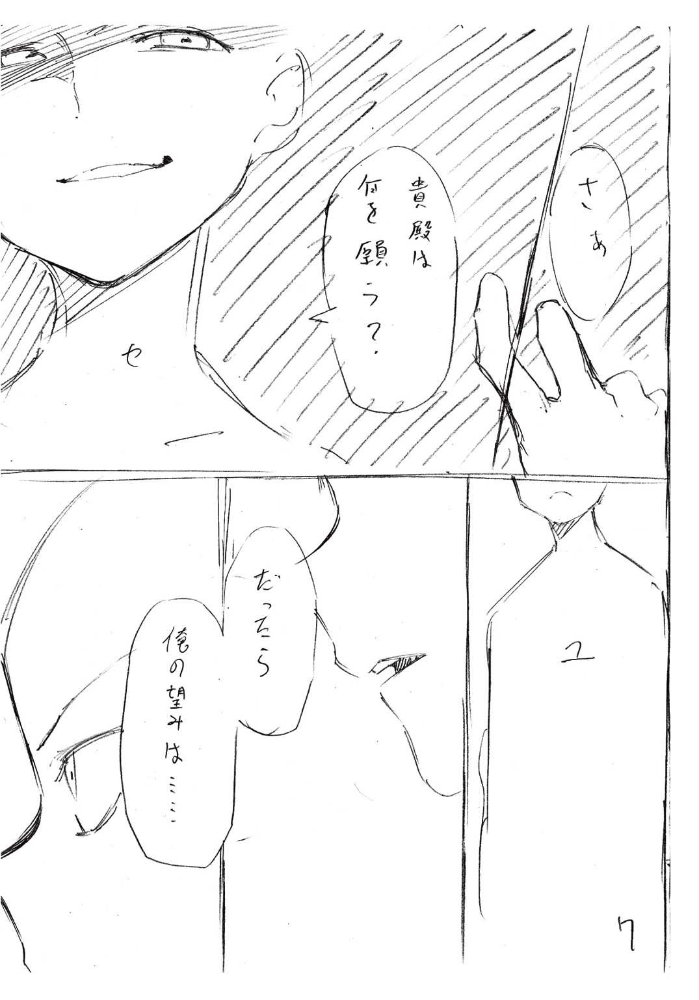

| 文句の付けようがないラブコメ | |
| 鈴木大輔 & 肋兵器 | |
| (2015) | |
この本は縦書きでレイアウトされています。
また、ご覧になる機種により、表示の差が認められることがあります。
 ダッシュエックス文庫DIGITAL
ダッシュエックス文庫DIGITAL
文句の付けようがないラブコメ
鈴木大輔
――かくして世界は作り替えられました。
序 章
「初めまして。わたしが神だ」
葉巻をくゆらせながらその少女は言った。
膝に乗せた本へ視線を落としたまま。桐島ユウキには目もくれずに。
「名を神鳴沢セカイという」
くちびるから紫煙を吐き、少女は本のページをめくる。
「知ってのとおり、今日から貴殿はわたしのものだ」
美しい少女だった。
それも現実離れして美しい。
銀色の髪に赤い瞳。纏っているのは超然たる空気。
これが桐島ユウキの〝神〟。
世界でただひとり、千年にもわたって世界を救い続けているという人外の存在。
桐島ユウキがこれから生け贄として捧げられる相手。
「気に入らなければ逃亡を図るもよし。いっそ自ら命を絶つのもいいだろう」
少女は冷笑して、
「ただしいずれの場合も、貴殿の一族郎党、九族にまで累が及ぶことを忘れぬよう。〝捧げ物〟としての役割は、九十九機関によって選ばれた貴殿にしか務められぬのだから」
びゅう、と風が窓を叩いた。
例年より早い初雪が東京の空を舞っている。灰色の空から絶え間なく雪が降り落ち、神の住まう屋敷の周囲を冬景色に染めつつある。
「さて本題だ」
少女が顔を上げた。
赤く光る瞳がユウキに絡みつく。
「捧げ物となった貴殿には対価が支払われる。金でも女でも権力でも好きなものを望むといい。いかなる願いも叶えてみせよう――ただひとつ、貴殿の自由を除いては」
頬杖をつき、少女は目を細める。
冷徹で、心の奥底まで見透かすような。そんな視線。
「......そんじゃ」
ユウキが初めて口を開いた。
少女の柳眉が「ほう？」とでも言いたげに動く。
十代半ばとみえる少年の、ややトーンの高い声はしかし、舞台俳優のそれのように朗々と響いた。人の寿命をはるかに超えて生きる存在を前にして臆した様子もない。
「さっそくだけど望みを言っていいか？」
「無論」
わずかながら少女が身を乗り出す。
興がそそられた――そんな仕草にみえる。
「なんなりと言うがいい。なんなりと叶えてみせるゆえ」
「んでは」
コホンと咳払い。
あーあーあー、と喉の調子を整えて。
服の袖を払う仕草をし、襟元をきゅっと正してから。
「神鳴沢セカイさん。俺と結婚してください」
と言った。
「............」
少女の時間が止まった。
ぽかんと口を開け、瞬きもせず目を丸くしている。呼吸すら忘れたように。
一方のユウキは表情を変えない。こちらも瞬きせず、しかし呼吸は乱れず規則正しく。ただじっと返事を待っている。
暖炉の薪がぱちんと爆ぜる。
葉巻の先からぽろりと灰が落ちる。
窓の外の風雪がガラス戸をかたかた鳴らす。
「は」
どれほどの時間が経ったか。
やがて少女は視線を膝元に落とし、両手をぎゅっと握り、頬を染めて。
「はい。よろしくお願いします」
と言った。
†
――さあ。
ラブコメを始めよう。
彼と彼女の、誰も文句の付けようがない愛の喜劇を。
第一章
以前こんなやりとりがあった。
「ねえねえお兄さま。クイズをしませんか」
「クイズ？」
「はい。わたしたち兄妹の間にわだかまる微妙な空気を振り払うための、可愛らしくて和やかなクイズです」
何ヶ月か前のとある日。
実家の庭園で、妹と話していた時だったと桐島ユウキは記憶している。
「そりゃ別にいいけど。俺らの間にわだかまる微妙な空気、ってのは何なんだ？ 普通にいつも通りにしゃべってたよな俺たち？」
「では第一問！」
問いかけをスルーして、
「女の子がこの世でいちばん喜ぶことって、はてさてなんでしょーかっ？」
「はあ」
「なんでしょーかっ？」
「............」
「なんでしょお―――――――かっ？？」
妹の強引さはいつものことだ。
ジト目で聞き流すのをほどほどに切り上げ、ユウキはあごを撫でながら、
「うーんなんだろな。ていうかクイズのくせに質問が曖昧なんだよな......」
「はてさて何かな何かな～♪ 答えはいったい何でしょや～♪」
妙な節回しで歌って踊って催促してくる。
内心で吐息しながらユウキは諦めた。たまには妹の遊びに付き合うとしよう。
「じゃあ、甘いものを食べること、とか？」
「ぶぶー。ちがいます」
「可愛い服を着ておしゃれすること」
「ぶぶー。ちがいます」
「ものすごくたくさん褒めてもらうこと」
「ぶぶー。ちがいます」
「......いや、ちょっと無理くさくね？ ていうか問題の出し方がやっぱおかしくね？」
「ちなみにあと一回答えを間違えると、罰としてわたしをひざの上で抱っこしてもらうことになります」
「なんでだよ。やだよ」
「残り十秒でーす。きゅーう、はーち、なーな......」
無情なカウントダウン。
呆れながらもユウキは考える。
彼女が好みそうな答えとなると、たとえば――
「じゃあ、好きな人からキスしてもらうこと？ とか？」
「おしいッ！」
切なげに頭を抱え、身もだえる妹。
「ものすごくおしい！ まさしくニアピン！ お兄さまの答えと正解との差は、普通のお米ともち米の差に近いものがあります！ いやーほんとにおしいですね！」
「それだけ近いなら正解にしてくれよ」
「だめです。個人的にはハナマルをあげたいところですが、今回はぴったんこじゃないと許してあげません」
いつから許す許さないの話になったんだ。
と呻きつつもユウキはさらに首をひねるが、
「ぶぶー！ 残念、時間切れです！ それではさっそくひざの上抱っこを」
「待て。せめて正解を言え。じゃないと納得できん」
「往生際が悪いですねえお兄さま。どれだけじたばたしようと、わたしを抱っこして頭を撫でてほっぺにキスすることはすでに決定して」
「さりげなくいろいろ増やすな。いーから早く」
「ふむん。仕方ありませんね」
妹は小鼻をふくらませ、
「正解はですね、じゃじゃじゃーん！ 『好きな人からプロポーズされる』でした！ どんどんぱふぱふー！」
「はあ」
「まったくお兄さまは朴念仁ですね。こんな簡単な問題もわからないなんて、わたしは妹として悲しいです。女の子の夢、女の子の永遠のあこがれといえば世の中にただひとつ、ステキな王子さまからプロポーズされることに決まってるじゃないですか」
「............」
「そんな有様では、彼女とか恋人ができるのは遠い遠い先のことですよねっ。まあお兄さまの面倒はわたしが一生みるつもりなので問題なし――って、席を立ってどこへ行くんです!? まだ話は終わってませんよ!?」
......もちろん感謝はしているのだ。
彼女の明るさがなければ、桐島ユウキの人生はもっと暗いものになっていたはずである。ただでさえ彼は、物心つく前から捧げられた存在で、十何年にもわたって自分が生まれた意味を考え続ける人生を送ってきたのだから。
だけど思い当たる遠因があるとするなら。たぶん妹との謎クイズこそが、まさしくビンゴなのではあるまいか。
†
「......それで結婚を申し込んだのでございますか？ 我が主に？」
一ミリも動かない笑顔が怖かった。
東京二十四区の某所にある神の御寝所、その応接間にて。屋敷の一切を取り仕切るメイドさんの表情は、不届き者にお説教する間もぜんぜん変わらない。
「ええまあ」
冷や汗をかきながらユウキは頷く。「もちろんそれだけじゃないですが」
「それだけじゃないというと？ 他にどんな？」
「つまりですね」
言葉を選びつつ、
「実はテンパってたんじゃないかな、と思うわけです」
「テンパっていた？」
「だってそうでしょ？ 正直、今日ここへ来る時はすっごい緊張してたんですよ俺。もう十年も昔から自分のすべてを捧げなきゃいけない相手が決まっていて、だけど事前の情報はほとんど何も与えられてなくて――」
「その点はこちらに責任があると認めます」
メイドさんは頷き、
「我が主に関する情報をあなたに伝えず、事前の予告なしにここへお招きし、『お務め』を始めていただいたのは事実。九十九機関が定めたルールに従ったゆえとはいえ、長年にわたりあなたに掛けられていた負担は想像に難くありません」
「ですよね？ そうですよね？」
「その負担を考慮すれば、あなたがのっけから素っ頓狂でトンチキな行動に出るのも、十分に理解できる範囲です」
「まったくです。ルールだかなんだか知りませんが、もうちょっと何とかしてほしいっすよこっちとしては」
とは言ったものの、かなり強引に自分を正当化している自覚はある。
いくらテンパっていたとはいえ、初対面の相手にいきなり求婚はないだろう。しかも妹のせいであるように語りはしたけど、彼女は『好きな人からのプロポーズ』という前置きをちゃんとつけていたではないか。
「......で」
まあ過ぎたことは仕方がない。
気持ちを切り替えて、
「これから先の話なんですが。やっぱプロポーズはマズかったですよね？ なんかもっと別のことを考えた方がいいですよね？ 〝願い事〟に関しては」
「いいえ」
首を振るメイドさん。
「すべてを捧げる代わりに願いがひとつ叶う――これはあなたに認められた正当な権利。前言を撤回する必要はございません。というより撤回するのは不可能です」
「と、いいますと？」
「いちど口にした願いは覆すことができないからです。まあ貴方様も立派な殿方でございますし？ 男なら二言はありませんよね？ どうぞ我が主と末永くお幸せに」
メイドさんがにっこり微笑んだ。
ユウキもにっこり微笑み返した。いやいやマジか？ 冗談だろ？ とは思うけど、ちょっと待ってと言える空気ではない。
「まあとにかくですね」
話題を変える。
「正直なところ、ちょっとホッとしてたりもするんですよ俺」
「ホッとする？ なぜ？」
「いやだってほら」
また言葉を選びながら、
「ここへ連れてこられる前はですね、もっときっつい感じなのかと思ってたんですよ。『神様のために俺のぜんぶを捧げて世界を救う』ってことは聞かされてましたけど、それ以外のことはほとんど前情報がないわけですし。なんかもっとやばい仕事が回ってきたりするのかと」
「やばい仕事、とおっしゃいますと？」
「んー。やっぱ命を賭けるような何かですかね？ なにかと物騒なことを想像してましたから、いきなり血みどろで痛い思いをするのも覚悟してたんですが」
「我々にとってあなたは大切な人です」
にっこり微笑むメイドさん。
「貴方様の安全を保障するのが最優先。いきなりプロポーズして、その結果我が主が気を動転させて部屋に引きこもってしまったとしても、貴方様を拷問にかけたり殺害したりはしません。したいですけど」
「............」
冷や汗が出てきた。
とはいえ嘘を言ってる様子もない。さしあたり今すぐ生き死にの話になることはなさそうで、それだけでも十分ありがたいと考えるべきか。
「ぼちぼちよろしいでしょう」
メイドさんが時計を見た。
「我が主も体勢を整えた頃と存じます。よろしくお願い致します」
「......行くんですか？ もう一度？」
「当然です。今度はしくじらぬようお願い致しますよ？ 我が主の心を平らかに、安らかに保つのも貴方様の仕事です」
「ええわかってます。俺にやれることは精一杯やります。ただ......」
「ただ？」
「恥ずかしながら、今になってちょっとビビってまして。俺、あの子を怒らせたりしてませんよね？」
「どうでしょうか。なんとも申し上げかねます」
「すっごい怒らせてた場合、俺あの子に殺されたりしませんかね？ なんせ神様なんですよねあの子って」
「その点はご心配なく」
メイドさんが太鼓判を押した。
本日いちばんの笑顔で。
「あなたはとっくに人の理を外れていますから。仮に死んだところでどうということはありませんよ」
†
......というやり取りがあったのが、ほんの数分前のこと。
そして今、桐島ユウキはドアの前にいる。
神鳴沢セカイを名乗る神様がおわす部屋の前であり、何時間か前にユウキが人生初のプロポーズを、齢十六にしてやらかした場所だ。ノックをしようとする手が躊躇いがちになるのも無理はない。
（でもさ。確かに俺もどうかしてるけどさ）
と彼は思う。
（俺が放り込まれた状況だってどうかしてるんだよな。だったらおかしなことになるのも普通なんじゃね？ 俺そんなに悪くなくね？）
そもそも訳が分からないのだ。
十年も前から予告されていた道筋ではあった。神への捧げものに選ばれ、神の従属物、もっといえば奴隷に等しい存在となることは、あらかじめ決定していた。その未来を受け入れていたし、それなりの覚悟も決めてきたつもりだ。
だけど事実は予測と異なっていた。
この世界をあまねく守護する神の御座所というから、どれほど神々しく仰々しい大御殿に連れていかれるかと思いきや。実際は東京某区の住宅街にある、古びて苔むしたボロ館に案内されて。
出迎えはずらりと居並ぶ強面のＳＰたちではなく、ユウキとそんなに歳も離れてなさそうなメイドさんひとりだけで。
やんごとなき御方とお目通りするのだから、お目通りが叶うまでは何かと手順を踏むことも多いだろうと思いきや、最低限の説明だけ受けてあとはぶっつけ本番だったり。
拍子抜けもいいところである。
その拍子抜けも、ユウキを奇行に走らせる一因になっているはずだ。たぶん。
（ま、言い訳しててもしょうがねーか）
楽な務めとは最初から思ってない。出たとこ勝負を強いられるけど、こうなったら腹を決めて前に進むしかないだろう。
（なるようになれ！）
深呼吸をして。
ノックをして。
間髪いれず、息を止めたまま中へ！
†
「初めまして。わたしが神だ」
葉巻をくゆらせながらその少女は言った。
膝に乗せた本へ視線を落としたまま。桐島ユウキには目もくれずに。
「名を神鳴沢セカイという」
くちびるから紫煙を吐き、少女は本のページをめくる。
「知ってのとおり、今日から貴殿はわたしのものだ」
美しい少女だった。
それも現実離れして美しい。
銀色の髪に赤い瞳。纏っているのは超然たる空気。
これが桐島ユウキの〝神〟。
世界でただひとり、千年にもわたって世界を救い続けているという人外の存在。
桐島ユウキがこれから生け贄として捧げられる相手。
「気に入らなければ逃亡を図るもよし。いっそ自ら命を絶つのもいいだろう」
少女は冷笑して、
「ただしいずれの場合も、貴殿の一族郎党、九族にまで累が及ぶことを忘れぬよう。〝捧げ物〟としての役割は、九十九機関によって選ばれた貴殿にしか務められ――」
「......いやいやいやいや」
ようやくユウキは我に返った。
「ちょっと待て。待って」
しきりに首を振る。
指で目と目の間を揉みしだく。
「え、何？ 俺の気のせい？ ですか？ なんかさっきと同じ展開のような気がするんですけど？ ええとつまり？」
「............」
セリフをさえぎられ、口を『れ』の形に開けたまま少女は固まる。
一秒、二秒――五秒――――十秒。
沈黙のまま、妙な空気のまま時間が流れて。
少女は咳払いをひとつして、ふたたび声を紡ぎ出す。
「初めまして。わたしが神――」
「だからそれはもういいって」
思わず素で突っ込んでしまった。
むぐ、と少女が口をつぐむ。
ふたたび沈黙が降りる。
かち、こち、かち、こち。壁時計が時を刻む音だけが部屋に響き、そのわずかな音さえもまた、降り積もった窓の外の雪が吸い込んでいく。
え、何なのこの状況？
とユウキは思う。
出たとこ勝負は覚悟してたけどこんな事態は想定してない。ていうかほんと何なのこの展開マジで。どうすりゃいいのよ？
なおもつづく沈黙。
あまりにも居たたまれない空気が充満しすぎて、これは一発ギャグでもかまして場をなごませた方がいいだろうか、とまで考え始めたその矢先。
「......ぅぅ」
少女が音を発した。
見れば、余裕しゃくしゃくの表情で葉巻をふかしていた彼女の顔が、みるみる朱色に染まっていくではないか。
だけでなく、ひざの上の本で顔を覆い、ハムスターか何かみたいに縮こまってしまった。
「えーと......」
なんだろう。
なんだかとても悪いことをしてる気になってきた。
それにしても、これから自分のすべてを差し出そうとしている相手を前にしてこの状況は一体なんなのか。というか何この人？ ひょっとしてアレか？ 何食わぬ顔で初めからやり直そうとしたのが通じなくて、それで顔を赤くしてるのか？
「あー......もういっぺん、ドアから入り直しましょうか？ 再チャレンジ的な感じで」
「......いい」
顔を覆ったまま、ふるふる首を振る少女。
ふたたび来襲する沈黙。
さて次はどうフォローしようかと思案し始めた時、
「貴殿が悪い」
本の上から少しだけ瞳をのぞかせて、少女がぼそっと呟いた。
「こんなはずではなかった。もっとこう、美しく、格好よく、最初の出会いは為されるはずだったのだ。一幅の絵巻物にも似た、優美で華麗きわまるやり取りを交わした後、貴殿はわたしに心から敬意を表し、永遠の誠実を誓い、そうして我々は記念すべき第一歩を踏み出すはずだったのだ。それなのに」
「は、はあ」
そうなのか？
というかそんなこと考えてたのか？
神様なのに？ 千年生きてるのに？
「ずっと考えていたのだわたしは。何事も初めが肝心だから」
「考えてたって、何を......？」
「決まっている。セリフをだ」
「せ、せりふ？」
「貴殿がこの部屋に入ってきた後に、どんな流れになって、どんな会話を交わすか。すべて頭の中でシミュレーションしていた。どんな事態になっても対応できる自信があった」
訥々と少女は語る。
きょとん顔でユウキは聞く。
「事前の想定によれば、貴殿はもっと恐れ入り、かしこまるはずだった。わたしは神に等しい存在であり、主導権を握る側であり、貴殿はわたしにコントロールされる側のはずだった。なのに、なのに貴殿はっ」
「......えーと」
「貴殿が悪い。全面的に貴殿が悪い」
「いや、そう言いますけど......」
「貴殿が悪い」
「............」
だんだん腹が立ってきた。
ただでさえ肩すかしを食らって気が抜けている場面である。今日一日ずっと、いや過去十数年にわたって溜まりに溜まり続けてきた鬱憤が、ユウキに要らぬ口を開かせる。
「そっちはそう言いますケド。アンタにもかなり責任あるんじゃないスかね？」
「――――っ!?」
いきなり変わったユウキの語調に、少女が面食らった様子を示す。
構わず続ける、
「俺だって訳のわからんままここに連れてこられて、訳のわからんままアンタの相手をさせられてんだ。その上『お前のせいだ』とか言われたって納得できるか。神だか何だか知らんけどさすがに勝手すぎるわ」
「......ぅ......ぬ」
「つーかこっちはいい迷惑なんだよ。だいたいなんで俺はここに連れてこられることになったんだ？ 生け贄になるって、捧げ物になるってのは何なんだ？ 何の決まりだ？ 誰が決めたんだ？ 具体的に俺は何すりゃいいんだ？ そんなのすらロクに教えてくれねえ状況で何をどうしろってんだよ。あげくの果てに俺がぜんぶ悪いとか言われたって責任もてねーんだよざけんな」
「......ぅ......」
「つーか俺だけじゃなくて俺の家族も迷惑してんだ。今でこそ割となんとかなってるけど、昔は家族崩壊一歩手前、ていうかぶっちゃけ崩壊してたこともあったんだ。むしろ一発殴らせろ。そうでもしねえと収まりがつかねえ」
まくし立てた。
溜まりに溜まったわだかまりを背に、一切の手加減なし。ほとんど脊髄反射で肚の一物をぶちまけ、ほんの少しだけ溜飲が下がるのを覚えた次の瞬間、
「うっ、あぅ......うあああああ――」
泣かれた。
千年を生きる神が。
まるで童女のように泣きじゃくり始めたのだ。
「......え？ うそだろ？ え？」
「ううっ、ぐすっ、ふぇぇぇぇ......」
ユウキはあわてた。もとより女性の形をしているものを泣かせることほど、男にとって最低の気分になるものはない。
「すまん。言い過ぎた。ごめん。ホントごめん」
「うぐっ、ひっく、ぐじゅっ......」
「俺が悪かった。いやむしろ百パー俺が悪い。そっちは何も悪くない。だから、な？ ほら。頼むよ」
どうしたものかと迷い、迷った末にポケットのハンカチを差し出した。
少女がそれを受け取って洟をかむというお約束をやるのを見守りながら、ユウキは本日何度目になるか知れない戸惑いを覚える。いったい何なんだこの状況は？ ほんとに訳わからん。誰か助けてくれ。
「けっこん」
不意に少女が言った。
「え？ 何？」
「結婚してくださいと、言った。貴殿は」
何度も洟をぐずぐずやりながら、
「なのに、この仕打ちは、あんまりではないか。わたしだって貴殿とさして状況は変わらない。ほんの何日か前にいきなり、わたしに捧げられる者と引き合わせると言われ、とても戸惑った。とても、とても戸惑ったのだ。そもそも外の人間と顔を合わせるのすら、いつ以来かも思い出せないほど久しぶりだったのに」
「......え。そうなの？」
初耳だ。
想像すらしていなかった。
彼女もユウキと置かれた境遇は同じ、いやむしろそれ以上だったのか？
「わたしは楽しみにしていた。貴殿とこうして会えるのをずっと前から。わたしはずっとひとりだったから」
「............」
「だけどわたしは神で、貴殿は捧げ物で、その関係は対等とは呼べぬもの。でも、それでも、わたしは貴殿と仲良くなりたかった。なのに貴殿はわたしの想像を超えていた。い、いきなり結婚してほしいなどと......何を考えているのだ本当に......」
「............」
未だに落涙しつづける神を見守りながら彼は思う。
そうだ。今はっきりと自覚した。
見知らぬ相手、それもやんごとなき存在に対してプロポーズを口走ってしまった、もうひとつの決定的な理由。
それは神鳴沢セカイの美しさゆえ。
この世のものではない、とはよく言ったものだと思う。大げさな比喩表現に彼女はまったく言葉負けしていなかった。
大きな瞳。長いまつげ。白磁の肌。
毛染めやウィッグではありえない、まばゆいばかりの銀髪。
そしてらんらんと輝く赤い瞳。
なんと自分は単純にできているのか、と呆れざるをえない。
テンパっていたからとか、妹にかつて言われたセリフがどうとか言い訳したけど、結局のところは何てことないのだ。彼女の姿を見ていたら心がぎゅっとなって、気づいたら求愛を口にしていたという、ただそれだけなのである。
――それからしばし。
少女はようやく落ち着きを取り戻して、
「すまない。取り乱した」
「いや。こっちこそ悪かった。です」
頭を下げたユウキに、少女はちょっとだけ頷き返す。
相変わらず俯いたまま、目を合わせようとはしない。
「......貴殿に」
手をこまねき、重い沈黙が支配する中。
意を決したように少女が口を開いた。
「ひとつ聞いておきたいことがある」
「聞いておきたいこと？」
「うむ。どうしても聞いておくべきことだ。なにを措いてもこれだけは外すことができない質問だ」
「そりゃもうなんなりと。答えられることならなんでも」
「う、うむ。そうか」
こほんこほんと咳払い。
神様はうつむいたまま、少しだけ上目遣い気味にユウキを見つめて。
「貴殿は結婚を申し込み、わたしはそれを受け入れた。捧げられる者の願いをひとつだけ叶える、それが本来あるべき対価だから、これは当然なことだ」
「はい。なるほど」
「で、初夜はいつ迎えればいい？」
「は？」
目が点になった。
少女は構わず、
「結婚した男女は夫婦の契りを結び、身体を重ね、子孫繁栄を図る。それが世間の常識であるはずだ。『初夜』というからには夜の間に執り行うのが自然とは思うが、何事も早いに越したことはないのが世の常であって」
「いやいやいや」
眉間をもみほぐし、
「ごめん。何を言ってるのか意味がわかんねえ」
「念のために言っておくと、初夜を迎えるというのはつまり、生娘であるわたしを貴殿が初めて女にする儀式であり」
「説明せんでいい！」
「す、すまない。だけど肝心なことだから誤解があってはならないし、それに何を言ってるのか分からないと貴殿が言うから」
「いや確かに言ったけどさ......いやでも待ってくれ。言いたいことはわかるし、ていねいに説明してくれるのもありがたいけど、いくらなんでも気が早すぎだ」
「早い......のか？ わたしはてっきりそういうものだと......平安や室町においては、そのような流れが普通であったように記憶しているのだが」
「いつの時代の話!? ていうかね、仮に結婚するにしたっていろいろ手続きってもんがあるんですよ今は。昔はどうだったか知らんけど」
「そ、そうか？ いやそうだな、その通りであった。これはわたしがうかつだった」
「まったくだよ。頼みますよほんと」
「しかしそうは言うが貴殿、わたしとて何も考えなしに発言したわけではない。きっと貴殿は積極的な性格をしているのだろうと判断し、であればコトは早い方がいいだろうとわたしなりに考えた結果なのだ。なにしろ貴殿は、曲がりなりにも神であるわたしに対して、初対面でいきなり結婚を申し込む男だから......」
「むぐ。それはまあ」
いささか旗色が悪かった。
「いやでも待て。待ってくれ」
とはいえユウキにも言い分はある。
四苦八苦して言葉を選びながら、
「とにかくですね。プロポーズした側の俺が言うのもなんだけど、俺たちはお互いのことを何も知らなさすぎるわけで」
「当然ではないか、今日はじめて顔を合わせたのだから。お互いのことはこれから知っていくのだろう？」
「ちなみに俺はまだ十六歳で......」
「わたしとその周辺に関する限り、この世のいかなる法令も影響しない。年齢は問題にならない」
「というか結婚できるの？ 神様でしょ？」
「神だから契りを結んではいけない、という決まりはないだろう。神話の上においても別にめずらしいことではないが」
「そりゃまあそうでしょうけど......」
身も心もだんだん重くなってきたユウキである。
これはなんだ？ 徒労感？ 絶望感？ 何やら神様とひとこと交わすたびに、いろんなイメージが音を立てて崩れていくような。
いやはや何というか。
シリアスを覚悟してきたはずが、これじゃすっかりラブコメだ。
「あのさ」
それでも抵抗はやめない。
「あんたは嫌じゃないの？ ですか？ よく分からん相手といきなり結婚することになったりして」
「わたしは貴殿の願いを聞き届けた。それがすべてだ」
「九十九機関のルールだから？」
「それもある。が、決まり事などはいかようにも抜け道を作れるもの。影響がないとは言わぬが、しきたりに縛られて決めたことではない」
「んなこと言って、いざ結婚してみて俺がどうしょうもないクズ男だったとか。そういうことになったらどうすんのよ？」
「その点は心配してない。最初に見た時からわたしは確信していたよ。貴殿は心悪しき者ではないと。ひどく人の良さそうな雰囲気があるし、こうして話をしていても怖いと思わないから」
んな単純な。いつか騙されるぞお前。
......とは思うものの口にはしない。神様がこちらを見る視線が、ひどく純粋できらきらしていて正視できない。
「それに」
と神様が言い足して、
「どうせ貴殿とは、これからずっと一緒だ」
ふんわりはにかんだ。
記念すべき最初の笑顔、ということになるのだろう。
それは心を蕩かすような、冬の寒さも吹き飛んで雪まで溶かすような。いっそ捧げられてよかったのかも、とさえ思うような。
（あー畜生）
と思う。
同時に、
（腹は決めてきたもんな）
とも思う。
どうせ一度きりの人生、むしろ拾いものの命だ。
「えーと。じゃあ」
髪をかきむしるスピードが速くなる。
あーあーあー、と喉の調子を整える。リラックスを促すために首と肩をぐるりと回し、着ている服のホコリなんかも落としてみてから。
桐島ユウキは言った。
「あらためまして。よろしくお願いします」
神鳴沢セカイも言った。
「こちらこそ。よろしくお願いする」
†
そんなこんなで。
彼らふたりは結婚することになったのだった。
第二章
昔々、あるところに神様がいました。
神様はなにしろ神様なので、不思議な力を持っていました。神様は人を作り、文明を築き、星の地表は繁栄で満たされました。
神様はたくさんの人たちから尊敬され、崇められました。神様は悪い気分ではありませんでした。神様は人々を愛し、自らが作り上げた箱庭を愛しました。そのお返しに、人々は様々な技術と芸術を、愚かさと賢さを、醜さと美しさを編み出し、世界を万華鏡のようにきらめかせて、神様を喜ばせました。
世界は満ち足りていました。
〝その時〟が来るまでは、まだ。
日常生活はおおむね保障されます、とお墨付きをいただいた。
『わたし共といたしましては、ユウキ様にはなるべく長持ちしていただかねばなりませんので。なにしろ簡単に代わりが見つかる人材ではありませんから』
そりゃどうもご親切に、とユウキは内心で顔をしかめたものだ。牛や豚だって、美味しく食卓に上るためには愛情込めて育てられるだろうに。
『日常生活ってのは』
ユウキは確認を取ってみた。
おチヨさんに――例の若いメイドさん、神の御座所をひとりで取り仕切っているあの綺麗で怖い人に、である。
『具体的にどの範囲で保障されるんです？』
『いくつかの例外を除いては、ほぼすべて』
『というとたとえば、家族と同じ家で暮らすのは？』
『問題ございません』
『外出自由で門限とかもなし？ 海外旅行はＯＫ？』
『どうぞお好きなように』
『恋愛なんかもしていいんですか？』
『青春してる感じでたいへん結構ではありませんか』
『じゃあおチヨさんを口説くのも？』
『性欲を持て余していらっしゃるのなら、どうぞいつでも』
冗談のつもりが笑顔で頷かれた。
どうやら割とホントに何でもありらしい。ただし相変わらず笑顔は怖い。
『となると、むしろ〝いくつかの例外〟ってのが気になります』
『難しいことではございませんよ。ご自身の立場を自覚し、我が主の求めに応じること。決められた日、決められた時間に我が主の館を訪れること。その程度でございます』
『......なんか聞いてると、わりと簡単なお務めのように思えるんですが』
『どうぞ、感謝の気持ちは我が主に向けてくださいませ』
ユウキの疑問を聞き流してメイドさんは言う。
『捧げられた者たるあなたが好き勝手を許されるのは、ひとえに我が主がそう望んでおられるゆえ。くれぐれも厚意に甘えてあのお方を悲しませることのないよう、お願い致しますね？ 旦那さま』
†
「......というわけで俺、結婚したんだ」
「そうなんだ。へええ～」
ユウキの告白に、小岩井クルミはふんふん頷いた。
私立叢雲学園高等部、二年Ａ組の教室。
他のクラスメイトたちが下校した放課後、学級委員の彼らは授業用プリントの仕分け作業に勤しんでいたのだが、
「......えっ？ ええっ？」
十秒ほど遅れて小岩井クルミが目を白黒させる。
「ちょ、え？ 今なんて？」
「いやだから。結婚したんだよ俺」
プリントの耳をホチキスで留めながらユウキは繰り返した。
「えーと......」
相棒の学級委員はポカン顔をすることしばし。
「ええとごめんユウキくん。何が〝というわけで〟なのかぜんぜん分からないんだけど、というかついつい聞き流しちゃってたんだけど。結婚したの？ ほんとに？」
「おう。結婚したぜ。マジで」
ドヤ、とばかりに胸を張り、鼻を鳴らしてみせるユウキ。
「け、け、け、結婚ですか。結婚、けっこん、ケッコン......」
一方のクルミは目を丸くし、しどろもどろの様子であわあわしていたが、
「......いやいや。よく考えたらそんなわけないじゃないですか。やめてよね、わたしって人の言うことすぐ信じちゃうんだから」
「だよなー。普通そう思うよな」
「ていうかユウキくんってわたしと同じ十六歳でしょ？ そもそも結婚なんてできるわけないよ」
「だよなー。まったくその通りだわ」
「ユウキくんは本当にひどい人だよね、か弱いわたしを騙して楽しもうとするなんて。ほとんど詐欺だよ。これぞまさに結婚詐欺ってやつだよ」
ちょっと上手いことを言って、同級生はゆるいウェーブの掛かった髪を揺らしつつ、ふわふわ笑うのだった。
「それにもしユウキくんが結婚しちゃったら」
ホチキスの針を交換しながら、
「妹さんはどんな反応するんだろうね」
「そうだな、まずはひっくり返るだろうな。でもって次に泡を吹いて気を失う。それからゾンビみたいに復活して思いっきり罵る。最後にお兄さまなんて大嫌い、と言って泣く。まあそんなところだろ」
「だよね。そんなところだよね」
「包丁を持ち出さないあたりがあいつのいいところだ」
「だよね。ブラコンの鑑だよね妹さんって」
「というわけで」
完成したプリントの束をチェックしながらユウキ。
「今後、俺を口説くヤツはもれなく不倫の関係になるわけだから。火遊びは厳禁だぜ？」
「それはわたしに対する牽制なのかしらん」
「いや。単なる世間話」
「というか、その結婚しちゃった設定はいつまで続けるの？」
「わからん。むしろ俺の方が訊きたい」
「ふうん。ヘンなの。いつものユウキくんだけど」
「まあ正直なところさ」
こうして無駄話をしているのは、生きて学校に通ってる喜びを噛みしめているだけなのかもしれない、とユウキは思う。はっきり言って今日ここで、こんな風に小岩井クルミと会話する機会を得られるなんて思っていなかったのだ――先日、予告なしに九十九機関に召喚された時は、もはや戻ってくることもないと覚悟していたから。
もちろんそういう身の上であり、役目であることは承知しているから、日々そんな事態は想定して暮らしていたつもりだが......たとえばトラックに撥ねられ、その瞬間の映像も感覚も覚えているのに、なぜか傷ひとつなくぴんぴんしている、という経験ができるなら、きっと今のユウキの気持ちはそれに似ている。ちょっとまだ実感が湧かず、あれから数日たっているのにどこか地に足がつかない。
......といった旨のことをクルミに話して聞かせた。
「なるほどぉ」
彼女は大きく頷いた。
「合点承知のすけだよ。ここ何日かのユウキくんがなんかヘンだった理由が、これでバッチリわかりましたよ」
「......ほんとにわかってんのか？ 自分で言うのも何だけど、俺が小岩井さんの立場だったら絶対わからんぞ今の説明じゃ」
「わかってるよん。でもってだからユウキくんはモテるんだろな、とも納得したよ」
「はあ？」
なんの話だ、という顔のユウキ。
対して何もかもお見通しですよ、という顔のクルミ。
「ユウキくんってさ、昔から時々そういうこと言うでしょ？ 生きてるだけで儲けもんだ、みたいなそういう内容のことをさ。達観してるというか、悟りを開いてるみたいな、というか」
「んなご大層なもんかよ俺が。買いかぶりにも程がある」
「かもね。でもさ、ほとんどの女の子にとってはね、中身よりも側が大事なのよ。実際はどうなのかじゃなくて、見た目とか印象とかの方が」
「ふうん。そんなもんかね」
「ヤンキーがモテるのと理屈はいっしょ。髪の毛を派手に染めたりツンツンに固めたりするのって、クジャクが派手に翼を広げるのと同じだと思わない？ とにかく大きくて立派に見せた方が勝ちなんです」
なるほど。
そのたとえは理解できる気がする。
「まあとにかくですね、女の子は危険なオトコに弱いのですよ。なにせ複雑にみえて単純な生き物ですから」
「危険なオトコねえ......」
「かっこつけでそういう雰囲気出してる人はたくさんいるけど、ユウキくんの場合はそうじゃない感じ。にじみ出てるもんねカラダから。死の匂いがするよね」
「フフ。褒めたって何も出ねえぜ？」
「いえいえそんなことないでしょ？ なんせユウキくんっていいとこの坊ちゃんですし。その気になればいくらでも出せるよねえ？ うふふ」
「っかー！ 女はけっきょく金だな！」
「愛もお金も同じくらい大事ですからん。......あ、このプリント印刷ミスだね」
「オーケー。取り替えとくわ」
そんなやり取りを交わしつつ、この日の放課後はお開きとなった。
『じゃあまた明日ね、ユウキくん』
彼女は別れ際、いつも必ずそう言ってくれる。長い付き合いだし、核心に触れない程度には自分の事情を話している相手でもある。だから『また明日』という言葉にはちゃんと意味が込められていて、そのたびにユウキは思うのだ。
願わくば『明日』がまたありますように。
明後日もそのまた次も、何事もなく迎えられますように、と。
†
神鳴沢セカイと再会する機会は翌日に用意された。
（しかし妙なことになったよな）
かたんことん
かたんことん
総武線の吊革に揺られながらユウキは考える。
（まさか神様と結婚とはなあ......この先どうすりゃいいのか）
駅を降り、改札をくぐって銀杏の並木を歩く。
この近辺は都内きっての閑静な住宅街であると同時、特定保護地域にも指定され、開発の波があまり及んでいない町でもある。戦前に建てられた洋館があちこちに残っていて、今もなお現役で人が居住している物件も少なくない。
大通りを線路とは反対側に折れ、住宅街に入った。
坂道と階段が連続する、老いたくちなわのようにうねった道を進むと、ほどなくして目的の建物が見えてくる。
二度目の来訪となる神の御座所。
「お待ち致しておりました」
青さびた門の前に立つと、呼び鈴を押すまでもなくおチヨさんが出迎えてくれた。
「我が主がお待ちかねでございます。どうぞ中へ」
「は、ども。お邪魔します。はい」
ユウキはこのメイドさんが苦手である。
物腰柔らかな美人で、歳もそれほど離れてなさそうなのだが、どうにもこうにも。笑顔に圧迫感があって、面と向かって接していると胃のあたりがキリキリ捩られているような錯覚に陥るのだ。
「我が主との接し方には」
邸内を先導しながらおチヨさんが訊ねてくる。
「もう慣れていただけましたでしょうか」
「まあなんつーか。なんとかしてみせます」
「頼もしいお言葉、痛み入ります。ユウキ様におかれては、なにか自信のある作戦でもおありなので？」
「ないですよそんな上等なもん。だけどひとつだけ、今日は心に決めてきたことがありまして」
「それは一体？」
「内緒です」
「......結構。こちらといたしましては、結果さえ出していただけるのであれば過程は問いません。どうぞお励みくださいませ」
神鳴沢セカイの居室の前まで来た。
おチヨさんは一礼して廊下の向こうに消え、あとにはユウキひとりが残される。
「さて、と」
扉の正面に対峙した。
初回ほどではないとはいえ、まだいくぶん緊張する。成り行きで『結婚』し、夫婦になった関係とはいえ、遠い存在であることには変わりない。
果たして今日はどのように迎え入れられるのか？
神らしく、高位の存在らしく、毅然として、優雅な態度でユウキを出迎えるのだろうか？ 最初に出会った時はそうだった......もっともあの時はすぐにメッキが剥がれてしまったわけだが、それでも懲りずに同じ芸風を用いてくるのだろうか？ まさかとは思うが、二度あることは三度あるというし。
（ま、なんでもいいや）
ユウキは迷うのをやめた。
あれこれ考えても仕方ない。
二度目ともなれば心の準備がある。前回のようにはいかない。
（よし行くか！）
呼吸を整えることしばし。
ノックをし、ユウキはドアを開けた。
そうして彼の目に飛び込んできたのは。
素っ裸の全身に赤いリボンをぐるぐる巻いた、千年を生きる神の姿だった。
「お帰りなさい、あ・な・た」
己の目を疑っているユウキの前で、神鳴沢セカイはベッドにぺたんこ座りし、悩ましげなポーズを取って、
「ごはんにする？ お風呂にする？ それともわ・た・し？ てへっ」
と言った。
「............」
全身が真っ白になり、おでこのあたりに縦線が入り、くちびるの端から一筋の流血が滴っている――マンガ的表現をするなら、今のユウキはまさにそんな感じだった。
「お、お帰りなさいあなた」
セカイが再度アタック、
「ごはんにする？ お風呂にする？ それともわ・た・し？ てへっ」
「..................」
ユウキはそっとドアを閉じた。
早足で廊下を戻り、メイドさんが待機している応接室へ。
「あの。すいません。すいませんおチヨさん」
「何か？」
悠然とティーカップを口に含んでいたメイドさんへ、
「えーとですね。あなたのご主人さまが、どうやらバカらしいんですが。どうしたらいいでしょう？」
「冗談にせよ我が主を侮辱なさるとはいい度胸です。ご褒美に股間を手加減なしで蹴り上げて差し上げましょうか」
「いや冗談じゃなくて。マジなんですって」
「わたしから言えることはひとつ」
ティーカップにジャムを加えながら、
「どうぞ我が主のもとへお戻りください。それがお嫌でしたらわたしの足で蹴り戻して差し上げます。まるでサッカーボールのように」
「謹んで遠慮します」
「わたしドリブルは得意ですよ？ マラドーナとタメを張れます」
「余計に嫌です」
「なんとかしてみせる、と大口を叩いたのは嘘だったのですか」
「いやいやそうは言ってもですね......」
「どうぞ今すぐ回れ右を。さもないと本当にドリブルしますよ」
追い返された。
やむなくさっきのルートを引き返す。
（いやでもさ。どうせえっちゅーのよ？）
まだ混乱している思考を整理する。
千年を生きる神が、特別な関係となったパートナーが、素肌もあらわな格好で頭の悪いセリフを吐いた――以上。ザッツオール。あのセリフは普通、裸エプロンでやるものでは？ という疑問も吹き飛ぶインパクトだった。そっとドアを閉じる以外に何ができたというのか。
とはいえ任務放棄するわけにもいかない。
惨劇の起きた部屋の前に舞い戻り、ドアを開ける。
「ううっ......ぐすっ......」
さめざめと泣いていた。
神鳴沢セカイは手の甲で涙をぬぐい、裸リボンのまましゃくりあげ、
「ひどいではないか。あんまりではないか。せっかくわたしが勇気を出してあんな真似をしたというのに、何の反応もないとは......あまつさえ無言のまま引き返すとはどういう了見なのだ......」
「あーいやその。なんだ。なんと言いますか」
「このやり方は間違っていたのか？」
「まあ......普通ではないよな」
「貴殿にはこういう趣味がなかったのか？」
「趣味があるかどうか以前の問題だと思うんだが」
「こうやって迫ればどんな男もイチコロではなかったのか？」
「どんだけ偏った情報だよ」
「老い先短いわたしを、もっと労ろうとは思わないのか？」
「千年生きてるやつに寿命の話をされてもなあ」
「うう......ひっく......ふええ......」
「っだー！ わかった、わかったから泣くな。泣かないでお願いします！」
女を泣かせることほど、男にとって最低の気分になるものはない。
「えーと。つまりだな」
何にせよフォローが先だ。
脳みそを必死に回して考える。
「ほら、あれだよあれ。要するにだな、すごすぎて反応できなかったんだ。いやマジで。だから泣くこたないと思うんだが」
「ぐすっ......すごい、とは？」
「そりゃあ君、あれですよ。あなたがとても美人で可愛くて、あまりにも色っぽかったから、俺もどうしたらいいか分からなかったんですよ。それでついつい、何も言わずにそっとドアを閉めちゃった的な」
「ぐしゅ......ほんとうか？」
「ほんとほんと。めっちゃマジ」
「わたしは美人で可愛くて色っぽいのか？」
「おう。保証するぜ」
「貴殿にとって、わたしは魅力的な存在だろうか？」
「そりゃまあ......なあ？ なんせ初対面でプロポーズしたんだぜ俺。魅力のないやつ相手にそんなことするか？ しないだろ？」
「......ふむん」
ずずずっ、と洟をすすり上げ、ようやく神様は泣き止んで、
「そうか。わたしは魅力的か。ふふ」
一転して上機嫌に微笑んだ。
と同時。彼女のほっぺたが赤く染まる。絞りたてのミルクにイチゴシロップを混ぜたみたいな、それはそれは鮮やかな変色だった。
「あ」
両腕で胸元を押さえ、ふたたび涙目になり、ぎゅっと縮こまりながら、
「あまり見ないでほしい。恥ずかしくて死にそうだ」
「......今さらそれを言う？」
「貴殿の気を引きたかったのだ」
くちびるを尖らせて、
「わたしとて、貴殿とはおかしな出会い方をしたと自覚している。なればこそ、できるだけ早くお互いの距離を縮めようとして、大胆な行動に出たのだ」
「気持ちは嬉しいけどちょっと早すぎます」
「そうなのか？ だが物の本によれば、裸リボンは裸エプロンと双璧をなす落としのテクニックであると書かれていたが」
「そんな本は処分しなさい。たぶん嘘しか書いてねえ」
「ちなみにその本は、おチヨが選んでくれたお勧めのもので......」
「あんのメイド！」
獅子身中の虫とはこのことか。
どうやらあの人物とは一度話し合う必要があるらしい。返答次第じゃあ、ドリブルするのはユウキの側になる。
「とにかくだ。何をするにしたって、もうちょっと段階ってやつを踏んでいこうぜ？ じゃないと俺がついていけねえ」
「わかった。そうしよう」
「それとあのメイドのことは信用するな」
「わかった。信用しない」
「ええとそれから――」
「へっくちゅ！」
神様がくしゃみをした。
へっくちゅ！
へっくちゅ！
さらに二連発。ひどく可愛らしいくしゃみである。
「うう......寒い......」
「......んな格好してりゃ当たり前だ。とりあえず着替えろよ。俺は外で待ってるから」
†
――二十分後。
ユウキはようやくにして、きちんと服を着た神鳴沢セカイと対面した。
「ふう。人心地ついた」
葉巻をぷかぷかやりながら、神様がホッと一息つく。
「それにしても、世の中にはわたしの知らないことがたくさんあるな。わたしの常識は世間一般の常識とイコールではない、そのことを思い知った気分だ」
「そうかい。そいつはよかった」
「今日の経験は今後における大いなる教訓となった。感謝するぞユウキ。貴殿のおかげでわたしはひとつ賢くなれた」
「どういたしまして。......ていうかさ」
来客用の椅子に座り、ユウキは疑問を呈する。
「できればこっち向いてしゃべってほしいんだけど？ さっきからあからさまに俺から顔をそむけて話してるよなアンタ」
「断る」
揺り椅子ごと窓の外の方を向いたまま、神様は断固として拒絶する。
「少なくともわたしは今日一日、貴殿とは顔を合わさずに過ごすと決めた。これは神たるわたしの決定事項だ」
「......まあ気持ちはわかるけど......」
「千年生きてきた中でいちばん恥ずかしかった」
肩をぷるぷる震わせながら、絞り出すように、
「というかわたしはどうかしていた。冷静に考えればわかることだった。まんまとおチヨのやつに乗せられた......すべてはあやつが悪い」
「だな。あの人が悪い」
「なのでわたしは何も悪くない」
「いや。普通にアンタにも責任はあると思うが」
「むうっ？」
「だからこっち向いてくれ。じゃないとやりにくくてしょうがない。ていうかそもそも失礼だと思うぜ？ あんたは神様で、俺はあんたのモノかもしれんけど、いちおうお客さんだぜこっちは」
「むぬ......」
不平を鳴らし、沈黙する神様。
しばしの後、いかにもしぶしぶといった態で彼女がこちらを振り向き、
「老い先短いわたしに対して、貴殿は手厳しいな」
「千年生きてるやつに言われてもなあ」
「だが貴殿の言うことには一理ある。なので、わたしは貴殿の方を向いて語ることにしよう。恥ずかしいのはがまんする」
思いのほか素直だった。
こういうところを見ると、なんだかんだでユウキは彼女に好感を持ってしまう。どうにも憎めない相手なのだ。
「よし。じゃあ改めまして。こんにちは神様」
「う、うむ。こんにちは桐島ユウキ」
「こうしてちゃんと話すのは初めてだな。このあいだは初対面ってことで、ほどほどのところでお開きになったし」
「うむ。その通りだ」
「いい天気だよな。前回は雪降ってたけど」
「うむ。暖かくて過ごしやすいな」
葉巻を一本吸い終え、新たな一本にセカイが火をつける。ペースが速い。ユウキのおぼろげな知識によれば、葉巻とはゆっくり時間をかけて楽しむものだったはず......間が持たないのか、それとも緊張しているのか。
「とりあえず訊きたいんだが」
「うむ。何なりと訊いてくれ」
「俺たちの関係って、どういうものになるんだろうな」
「うん？」
「俺はアンタに捧げられて、アンタのモノになった。それは間違いないよな？」
「うむ。その通りだ」
「だけど俺はアンタにプロポーズして、アンタはそれを受け入れて、俺たちは夫婦の関係になったわけだが......これってつまりどういうことになるんだ？ どっちの状況の方が優先されるわけ？」
「わたしに訊かれても困る」
悪びれることなく神様は言った。
「その件に関してはおチヨも九十九機関も何も言ってこない。なのでわたしには把握しかねるし、判断もできない」
「......おま、そんなぬけぬけと......」
「気にせぬことだ。わからないことは考えないのがよい。時間の無駄だ。貴殿とてなにも言われてないのだろう？」
「まあそうだな。言われてないな別に」
「他に訊きたいことは？」
「ええとだな......そう、なんで俺は選ばれたんだ？ なんのために俺はあんたのモノになったわけ？」
「わたしに訊かれても困る」
悪びれることなく神様は言った。
「捧げられる者を選ぶのは九十九機関の仕事であって、わたしは何も口を出していない。理由も聞かされていない。ゆえになぜ貴殿が選ばれたのかはわからない」
「......いやおま、いくらなんでもだな......」
「わたしは神だが、全知全能の存在ではないぞ？」
困った様子で、
「だからわからぬものはわからぬ。知らないものは教えてやれぬ。知りたいのであればおチヨに訊いてくれ。あの者であればわきまえているはずだ」
「そりゃ無理ってもんだ。ていうかおチヨさんに訊いても何も教えてくれないから、こうして訊いてるわけで」
「なるほど。であればお手上げだな。諦めるがいい」
「いやいやいや。大事だからそこ。スルーできんから。つーかさ、アンタは神様なわけで、えらい人なわけで、おチヨさんよりも偉いはずで――」
「弱ったな。極めてシンプルに、わかりやすく説明しているつもりなのだが、理解してもらえないのか。まさかとは思うが貴殿、ひょっとしてバカなのか？」
「............」
心配げな顔をされて、ものすごく微妙な気分になるユウキだった。
「だがこれだけは言えるぞ？」
そんなユウキを見て神様が付け加える。
「わたしは貴殿とこうして顔を合わせ、話をするのを、とても楽しみにしていた。そして今、わたしはとても楽しい。わたしにとってはそれがすべてだ」
「......そうかい。そいつはどうも」
これまた悪びれず、大まじめに彼女は主張するのだった。
あまりに真っ直ぐすぎる態度を示されて、それ以上なにも言えなくなってしまった。なんだかひどく照れくさい。
「了解。わかったよ」
話題を変える。
「そんなことより今日は、アンタにひとつ言いたいことがあるんだ」
「うむ。聞こうではないか」
「その前にまず、俺はアンタのことが知りたい。一応、まあなんだ、俺たちは結婚して夫婦になった？ わけだよな？ だけどそれにしてはお互いのことを知らなさすぎる。とりあえずそのへんをちゃんとしとこうぜ」
「まったくもって同感だよユウキ。わたしも貴殿のことが知りたい。何事もまずはそこからだ――安心したぞ、どうやら貴殿はバカではないらしい」
「そいつはどうも。ええとじゃあさっそく質問だが」
「待て待て。さっきから貴殿は訊いてばかりではないか。わたしだって貴殿の話はたくさん聞きたいのだ。次は老い先短いわたしに順番が回ってきてもいいはずだ」
「お前、ずいぶんそのネタを推してくるよな」
とはいえ納得はした。
だが一体なにから話せばいいものか。
「貴殿の身の上を聞かせてくれ」
というのが神様からのリクエストだった。
「身の上話かあ」
ユウキは頭を掻いた。
「面白い話じゃねえよ？」
「構わない」
「ていうか俺的にもあんまり思い出したくない話なんだが」
「そこを強いてお願いする」
神様は熱心だった。
葉巻の火が消えたのも忘れ、前掛かりになってせがんでくる。どうやら逃げ道はなさそうだ。ユウキは語れるだけのことを語ることにした。
†
ユウキが産声を上げたのは今から十六年前のこと。三代続く製薬会社の名門、桐島製薬の嫡男として彼は生を受けた。
穏やかな性格で野心の少ない、婿養子の父。
それとは逆にいささか短気で活動的で、だけど働き者で優しい母。
夫婦の仲は良く、経済的にも恵まれて、ユウキは『何不自由なく』と言っていい状況で育つことができた。
風向きが変わったのは、小学校に上がってしばらくした頃のこと。
ある日、営業マン風の冴えない男が桐島家の屋敷にやってきて、満面の愛想笑いを貼り付けてこう言ったのだ。『おめでとうございます。お宅の息子さんが、世界を救うお方であることがわかりました。つきましてはいずれ時期を見計らってお迎えに上がりますので、どうぞよしなにお願い致します』。
もちろん最初は誰も真に受けなかった。男の発言は無礼であり、思いがけないものであり、なにより意味不明だった。父は呆れ、母は憤慨し、男を追い出して塩をまき、その日はそれで収まった。
だが次の日も男はやってきた。
次の日も、そのまた次の日も男はやってきて『おめでとうございます』と繰り返した。もちろん男は出入り禁止を言い渡されていたし、誰も彼を招き入れたりはしなかったはずなのに、どこから入り込んだものか男はいつの間にか玄関の前に立ち、満面の愛想笑いを貼り付けるのである。
警察も探偵も警備会社も役には立たなかった。男はどんな手を使ったものか、いかなる警戒もくぐり抜けて桐島家に侵入してきた。彼が何者なのかも、どこから来てどこに住んでいるのかも、まったく知れなかった。
不気味に思った両親は根負けし、渋々ながら男との対話の席をもうけた。
そこで聞かされた話はすでに述べた通りである。この世界にはひとりの神がいて、その神が世界を守護している。その神に捧げられるいわば生け贄として桐島ユウキは選ばれた。この決定は決して覆らず、拒否権が与えられることもない――
両親は激怒した。普段は温厚な父ですら顔を真っ赤にし、口を極めて男をののしった。『見返りは保証されます』という言葉が怒りに油を注いだ。父も母も断固として要求を拒絶する構えを見せた。
承知いたしました、と男は満面の愛想笑いで頷いた。いずれまたお話を伺いに参ります、その際は色のよいお返事を期待しております。
両親は鼻で笑った。彼らふたりには一歩も引かない決意と、事実に裏打ちされた自信があった。なにしろ桐島製薬は世界的な大企業。政治家にも警察にもマスコミにも、軍にだってコネはある。資金だって豊富だ。これだけ条件がそろっていながら、訳のわからん輩から息子ひとりも守れないで何が父親か、母親か。
彼らには余裕さえあった。
が、結論から言えばその余裕は半年と保たなかった。
最初に交友関係が狙われた。政治家、警察、マスコミ、軍。いずれの友人たちからも付き合いを絶たれ、パーティーや園遊会に呼ばれることもなくなり、それどころか電話さえも繋がらなくなった。ご近所からは陰口を叩かれ後ろ指をさされ、ユウキも学校で孤立する羽目になった。
次は会社が狙われた。敵対的買収が試みられ、次期社長の椅子を盗もうとするレースが泥沼化し、株価は何者かの仕掛けによって暴落し、すべての責任は創業者一族の長たる両親に帰せられた。
さらには血縁関係が狙われた。必ずしも仲は良くなかったが、それでも血縁の絆で結ばれていた一族たちが次々と離反し、反旗を翻した。
それらの伏線がつながって一本の濁流となり、一気に押し寄せてきた。スキャンダルのでっちあげ。連日押し寄せるゴシップ誌の記者たち。政治家は懸念と遺憾の意を表明し、警察は証拠をねつ造して吊し上げの機会を狙い、マスコミはバッシングを繰り返し、借金取りが容赦なく襲いかかった。
そうやって急速に、確実に、両親の心は蝕まれていった。
最終的には一家心中の一歩手前までいった。実際にそれは試みられ、実行の寸前に発見されて未遂に終わったのだが、それでもなお両親は息子を生け贄に差し出すことを拒み続けた。
最後の一押しになったのは、まだ幼かったユウキのひとことである。『いいよ。行くから俺』と彼は言った。捧げられた身がどうなるのかは知れないが、自分ひとりが我慢して済むなら上々だ。しかもその犠牲は無駄になるわけじゃない。まして今すぐどうこうという話ではないのだし、それで本当に世界が救われるならこれほど効率のいいことはない。もう十分すぎるほど両親はがんばってくれた――
折りよく例の男がふらりと訪ねてきて、例の愛想笑いを貼り付けながら言った。『お返事はいかがでございましょう？』と。
両親は力なく肩を落とし、敗北を認めた。
桐島ユウキの人生が決定的に変わり、二度と後戻りできなくなった瞬間だった。
†
「いやー。怖えーよな、九十九機関ってやつは」
長々と話し終え、ユウキはようやく一息ついた。
「ウチの会社ってかなりでかいんだぜ？ 大統領にも顔が利く程度にはメジャーどころなんだ。それがあっさり倒産寸前まで追い込まれたもんな。いやほんと怖え怖え」
「そうか。それは災難だった」
セカイが頷き、ユウキはさらにエピソードを付け足す。
「一家心中があっさり未遂に終わったのもな、たぶん九十九機関がきっちり手を回してたからだと思うんだな。なんせタイミング良すぎたもんな......ほれ、ここのところ」
と言ってユウキは首のあたりを指し、
「よーく見ないとわからないだろうけど。これ、首を絞められた跡。一家心中の時に思いっきりやられてさ、まだ消えずに残ってる」
父と母、ふたり分の手形だ。
その瞬間のことをユウキはよく覚えている。両親のうつろな瞳。呼吸を止められる苦しみ。遠くなっていく意識――当時の件をもう十分に吹っ切ったつもりでいるが、それを思い出すのはまだ痛みを伴う。
「絞められて、気を失って、ほんとに死ぬ寸前のところで待ったが掛かったわけだ。追い込むのはオーケーだが崖から突き落とすのはＮＧ、って感じかね連中としては。まあそりゃそうだよな、俺が死んだら意味ねえもんな」
「うむ。貴殿が死ぬのは困る」
「前半だけで１００点取られたサッカーの試合みたいなもんでさ。けっこう早い段階から勝負はついてたんだよ。だから正直なところ、俺としてはけっこう諦めをつけるのは早かったんだよな。でも言えなかった。俺がそれを言ったら切れちまいそうな気がしてさ。ぎりぎりまで張り詰めて頑張ってるあの人たちの心が」
「ふむ。わからぬでもない」
「実際、いちど切れちまったあとはやっぱダメだったな。家族の関係ってやつは元には戻らなかったよ。......ちなみにその件のあと、ウチの会社の売り上げは倍になった。親戚も戻ってきたし、ご近所づきあいも良くなったし、政治家やらなんやらのコネも元通りになった。『見返りは保証する』っていう言葉に嘘はなかったわけだな」
「それは何よりだ。対価が支払われるのは当然であるべきだからな」
「ま、そういうこった。......いやでも悪ィな」
「？ 何が悪いのだ？」
「やっぱ泣かせちまったから」
すまん、とユウキは頭を下げる。
「テンション下がる話なのはわかってたけど、そんなにボロ泣きされるとは思わんかった。ほんとすまん」
「貴殿は何を言って――」
そこが限界だった。
ぼろぼろ泣きながらも毅然と胸を張っていた神様の表情が。真夏の夕立のごとくあっという間に曇ったかと思いきや、顔をくしゃくしゃにし、
「すまぬ。すまぬユウキ。悲しかっただろう。つらかっただろう。わたしのせいだ。すまぬ、すまぬ......」
「だー！ 言わんこっちゃない！」
あわててハンカチを差し出すユウキだった。
「だいじょうぶだって。泣くな。もう終わった話だ」
「うわああ、ああああああ、すまぬ、すまぬ、うああああ」
「もう吹っ切れてるし納得してるから。つーかむしろ感謝してるぐらいだ。会社が前よりもでかくなったのは事実だし、何千人もいる社員が路頭に迷わなくて済んだし」
「だがっ、すべてはわたしの――ひっく、うぇぇ」
「アンタのせいだとか言うつもりはねーよ。たぶん、どのみちアンタには何もできなかっただろ？ 九十九機関の連中だってまあ、たぶん好きでやってんじゃねえだろうさ。もし仮にそうじゃなかったとしても別にいいんだ。これはマジでそう思ってんだ」
と言ってユウキはひざを曲げ、目線を合わせる。
神様の不安げに濡れた赤い瞳が、真っ直ぐこちらを見ている。
ユウキもまた、瞬きひとつせず神様の視線を受け止めながら、
「俺はアンタに会えてよかった。たぶん、それでぜんぶチャラだ。なんかそんな気がするんだよ。まだ二回しか会ってないってのに、妙な話だけどさ......アンタの方はどう思ってる？」
「わたしも」
泣き笑いで神様は言った。
「わたしも同じだ。貴殿に会えてよかった」
「そっか。そいつはよかった」
ユウキも笑って、
「ところでだな。今日はアンタに言いたいことがある」
「うむ。聞かせてくれ」
「俺はアンタにプロポーズして、アンタはそれを受けてくれた。......で、だ」
コホンと咳払いして、
「俺は考えた。結婚したとして、それで何をしたらいいか。なんせ何も考えずに勢いでやっちまったからさ、まったくもってノープランなわけで」
「うむ。まったくもって計画性がないな」
「で、とにかく知恵を絞って考えてひとつの結論を出した。まあさっきもメイドさんとちょっと話したんだけどさ――アンタと結婚した俺がやるべきことは何か、ってことなんだけど」
コホン、ともういちど咳払い。
「神様。俺はアンタを幸せにする」
「......幸せに？」
「おうよ。そいつだけは決めた。何をやっても、どんなことをしても幸せにするよ俺は。世界中が敵に回っても関係ねえ。アンタの幸せのために、俺はめちゃくちゃワガママになるわ。それがアンタにプロポーズした俺の、絶対的なルールだ」
力強くユウキは言った。
神様はきょとんとしている。
「......いや。なんか当たり前すぎてすまん。つーか順序が逆な気もするが気にするな。ていうか何だ、ちょっと俺言い過ぎてるか？ うん、そうだよな、こんなこといきなり言われても普通は引くよな――」
「いいや」
神様が首を振る。
「問題ない。とても素晴らしいな。うん。とても素敵だ。そうか、わたしは幸せにしてもらえるのか。世界中が敵に回っても関係ないのか」
こくこく頷いている。
噛みしめるように、ワインか何かを舌の上で転がしてゆっくり味わうように。
「うん。うれしいな。とてもうれしい。ふふ、ありがとうユウキ。わたしはとてもうれしいよ。心から感謝するよ」
そうしてにこりと。
花びらが咲きこぼれるように笑うのだった。
うおお何だこりゃ、とユウキは思った。何なのこの眩しすぎる笑顔。
「ところで貴殿よ」
内心どぎまぎしているユウキへ神様が語りかける。
「わたしからもひとつ言いたいことがあるのだが。聞いてもらえるか」
「？ 言いたいこと？」
「そうだ。とてもとても重要なことだ。というか貴殿と同じく、これを言うのは順序が逆のような気がするが――」
ふう、と一息ついて。
それから彼女は居住まいを正した。
「しかし今さらだからといって言わないわけにもいかない。なにせ老い先短い身の上だしな。だからわたしは覚悟を決めて口にする」
「お、おう」
自然ユウキも背筋が伸びる。
「何だか知らんがきっちり聞かせてもらうよ。どんと来いや」
「いいのか？ 何を言われても耐えられる覚悟はできているか？」
「まあ――たぶん。大抵のことは大丈夫。だ。と思う」
「生半可な気持ちで耳にして後悔しても、責任は持てぬぞ？」
「おいこら脅かすなよ。今さら何だよ」
ちょっとびびりながら構えるユウキ。
そんな彼を見て、神様は文字どおり神妙な顔を作って。
「では神として、貴殿の妻として、桐島ユウキに命ずる」
「お、お手柔らかにどうぞ」
「わたしのことは名前で呼んでほしい」
「はい？」
「名前だ。わたしの名前。神鳴沢セカイ」
まだ涙で赤く腫れた目で。
白い歯を見せて、
「貴殿はまだ、一度もわたしの名を呼んでくれたことがない。夫婦なのにこれはおかしい。だからこれからは、ちゃんとわたしのことを名前で呼ぶのだ。よいな？」
してやったり、とばかりにふんぞり返るのだ。
......新たな発見だった。
どうやら神様は、意外におちゃめであるらしい。
第三章
神様はすごい存在でしたが、割と飽きっぽいタイプでした。なにしろ神様はとてもとても長い時間を生きていたので、それはまずまず仕方のないことでした。
神様は自分の作った世界に飽きてしまい、仕事らしい仕事を何もしなくなりました。そうすると、たちまち世界はバランスを崩すようになってしまいました。おおむね全知全能の神様は、なんだかんだですごい存在だったので、神様がいないと世界は成り立たないようにできていたのです。
人々は祈りました。どうか神様お願いします、これまでのようにお務めを続けてくださいませ。さもなくば我々は神様に作られたか弱い存在、とてもじゃありませんが生きていくことはできません。
あまり気が進みませんでしたが、神様は何か良い方法がないか考えました。自分が作った世界にいちおう責任を持ちつつ、自分は楽をして、なおかつ面白そうな方法がないか。
そして神様はひとつの方法を思いついたのです。
その後、ユウキはいろいろなことを知った。
「わたしの趣味？ そうだな、たとえばこれ。葉巻だ」
セカイは目を輝かせて言ったものである。
「葉巻はいいぞ。実に奥が深く、華やかな楽しみを味わわせてくれる。人生にもっとも彩りを与えてくれるアイテムをひとつ選ぶとするなら、わたしは迷うことなくこれを選ぶだろうな。貴殿も一度吸ってみるがいい。人生観が変わるぞ？」
ものすごくプッシュされた。
なので一度だけ、セカイにすすめられて葉巻を吸ってみた。
結果は散々だった。吸った瞬間に咳込み、煙の苦みが鼻と喉と肺にしみてヒィヒィ苦しみ、セカイに腹を抱えて笑われた。そしてユウキは二度と葉巻なんか吸うもんか、と心に誓ったのである。
「ちなみにだなユウキよ」
セカイはさらに解説して、
「知っているか？ 葉巻と煙草は楽しみ方がちがうのだぞ？」
「どっちも似たようなもんに思えるんだが......」
「葉巻はそもそも、煙を肺の中に入れるものではない。また煙草とはちがってゆっくり時間を掛けて楽しむものだ。一本を一時間かけて吸うのはざらだよ。それと途中で火が消えてしまっても問題ない、というのも大きな違いだな」
「つーか俺はむしろお前の健康が心配だよセカイ。ちょっとヘビースモーカーすぎるんじゃねえか？」
「むふ。心配してくれるのか、うれしいぞ。しかし心配は無用である。これでもわたしは神だからな、葉巻の煙ごときで身体を壊したりはしない」
「老い先短い身の上じゃなかったっけ？」
「それとこれとは話が別だ」
「ちなみに俺が心配してるのは、健康だけじゃなくてお前のイメージもなんだけどな？ 煙をぷかぷかやってる女子って、やっぱなあ。正直なところ印象はよくないと思うんだな俺は」
「むう？」
「いやほら、お前は神だから関係ないかもだけどさ。女の子はやっぱ子供を産む生き物であって、健康被害とかなんとか、そういうのが心配になっちまうというか」
「こっ、子供の話はちょっと早すぎるのではないか？」
「いやそういうことが言いたいんじゃなくてだな」
「ではやはり、初夜は早い段階で迎えておくべきではないのか？ 夫婦生活はそこで躓いてしまうと後が大変だと聞くぞ？」
「だーかーらー。お前は頭よさげなくせに、なんでそう前のめりに突っ走りたがるんだ。......とにかく俺が言いたいのは、葉巻がお前のイメージダウン的なものに繋がらないか、ってことでさ」
「......そうか。わかった。ユウキがそう望むのであれば、今日を限りに葉巻はやめると誓おう。うう......ぐすっ」
「泣くほど嫌ならやめんでいい」
「うう......そうか、ありがとう......ユウキはいいやつだな......」
と、その時はそれで収まったのだが。
後日談がある。
「あれ？ なんだそりゃ？」
とある日。
ユウキがセカイの部屋を訪れるとちょっとした変化があった。
セカイが葉巻を吸っていなかったのだ。
代わりに何か、白っぽくて細長いものを口にくわえている。
「ん。これか？」
セカイはその白っぽいものを指して、
「いわゆるシガレットチョコというやつだな。煙草のように見えて煙草ではない、子供だましのシケた代物だよ」
「......なんでまた？ そんなものを？」
「別に貴殿に言われたからではないぞ？」
セカイはことさら尊大な態度で、
「わたしは自分のイメージなど気にしないからな。だがしかし、貴殿の健康には気を遣う必要がある。煙がたっぷりの部屋に貴殿を招くのは、貴殿の健康をそこなう可能性があることに気づいたのだ」
「はあ。なるほど」
「当然であろう？ 貴殿はわたしと結婚しているのだから」
そう言ってぷいっとそっぽを向き、神様はもぐもぐチョコを噛むのだった。
ほっぺたがちょっと赤かった。
ユウキは内心で笑いをこらえつつ、彼女の気遣いに感謝したものである。
†
葉巻だけでなく、セカイは酒も好きだった。
「酒も煙草も大好きって、なんかちょっと斬新だなあ......」
「？ 斬新とはどういうことなのだ？」
「いやまあ。なんとなく」
「よいではないか。別に誰にも迷惑はかけておらぬ」
「そりゃそうだけどさ」
「加えてわたしは貴殿とちがって未成年ではない」
「ごもっともで」
「ところで貴殿。そこの本棚を探ってみるがよい」
「探る？」
「本棚の横に隠しスイッチがあるのだ」
言われたとおりに探してみると確かにあった。不自然な位置に謎のボタン。
押してみておどろいた。どこからか低い音――何かの動力源とおぼしき――が響いてきたと思いきや、本棚がスライドし、隠れていた収納スペースが露わになったのである。
そこにずらりと並んでいたのは酒瓶だった。
新しそうなもの、古そうなもの。
琥珀色だったり、麦わら色だったり、あずき色だったり。
まるで博物館みたいな有様だった。
「......何だこりゃ？ 何本あるんだこれ」
「ここにあるのはざっと五百本だな。ユウキよ、その中から適当に一本見繕ってくれ」
もちろん酒のことなど何もわからない。
適当に一本を選んでセカイの元へ差し出すと、彼女はうれしそうに、
「ふむ。渋いチョイスだな。アルビンか」
「なんかよくわからんが、いいものなん？」
「すでに閉鎖してしまった蒸留所のウイスキーだよ。なんなら味見してみるといい」
「俺にはまだ早いよ」
「ふむそうか。論より証拠、飲めば分かるのだがな」
セカイはひどく残念そうに言った。
なのでユウキは、褐色の液体をちょっとだけ喉に流し込んでみた。
結果は散々だった。飲んだ瞬間に喉が焼け付き、胃の中がどんちゃん騒ぎになり、あわてて水を飲んで咳込んでのたうち回り、セカイに腹を抱えて笑われた。そしてユウキは二度と酒なんか飲むもんか、と心に誓ったのである。
†
こんな呆れるエピソードもある。
「しかし前から不思議に思ってたんだけどさ」
「言ってみるがいい。わたしはあらゆる質問に答えよう」
「お前の名前のことなんだが」
「ほう？」
「神鳴沢セカイって名前。なんかすげー違和感あるんだよな」
首をひねりながらユウキは言う。
「なんつーかまず、大げさな名前だなと思うわけだ。なんせセカイだろ？ ザ・ワールドだぜ？ もしこんな名前を親がつけてきたら、って思うとぞっとするわ。ぜったい名前負けの人生を送る自信があるぞ」
「ふむふむ。それで？」
「神が鳴る沢、っていう名字もけっこうなもんだよな。少なくとも俺は他にそんな名字の人は会ったことないし、聞いたこともねえ」
「貴殿はいいところに目をつける」
セカイは大きく頷いた。
待ってました、とでも言いたげに、
「わたしにはもともと名前はない。あったのかもしれぬがとっくに失われた。なにしろ千年も生きているとな、何かといろいろなことを忘れてしまうのだよ」
「老い先短いし、ボケるのも早いってか？」
「しかしながら名前がないのは不便なものだ。普段のわたしには必要ないものだが、貴殿と一緒にいる時はいかにも都合が悪い。第一、名前も呼び合えない関係のままでは、いつまでたっても仲良くなれない」
「うん。そのへんは理解できる」
「だからわたしは、自分で自分の名前をつけたのだ」
「え」
ユウキは二、三度ほど目を瞬かせて、
「お前が？ 自分で？ つけたの？ その名前」
「いかにも。わたしが自分でつけた」
「うーん......」
腕組みして考え込むユウキ。
「しかしまた、なんでそんな名前をつけようと思ったんだ？ いや、そりゃまあお前は神様なんだから、ご大層な名前を選んでも文句はないんだが」
「貴殿らしくもない愚かな問いかけだな。わたしが神鳴沢セカイを名乗っている理由は単純だよ。格好いいからだ」
「うーん......」
ふたたび腕組みするユウキ。
そのまま一分ほど考え込んで、
「あのさセカイ」
「なにかなユウキ」
「前から疑ってたんだけど。お前ってひょっとしてバカなのかな」
「失敬な。バカと言う方がむしろバカだろう」
「もしくはあれか？ 中二病ってやつなのかお前は？」
「それもまた失敬な発言だよ。歳の若い者が人を超越した存在に憧れ、騙るのであればともかく、わたしはれっきとした神なのだ。神が自らの存在を誇示する名前をつけたからといって、文句をつけられる筋合いはないであろう？」
正論ではあった。
というか中二病という単語を知ってることが驚きだった。バカかどうかはともかく、この神様はかなり知識のストライクゾーンが広いらしい。
†
神様はまた、重度の引きこもりでもあった。
「あのさあ。お前って外に出たりしないの？ ずっと部屋にいてばかりじゃね？」
「出ないとも。インドア派だからな」
「悪いが俺は、どっちかつーとアウトドア派なんだ」
「そうか。趣味が合わないな」
「ついでに言うと、俺はコタツで丸まって寝てる猫を引っ張り出して、無理やり遊んだり抱っこしたりするのが好きなんだ」
「貴殿はサディストなのか？ 幸せそうにしている猫に対してそんな極悪非道な真似をするなんて、神をも恐れぬとはこのことだな」
などなど。
なんだかんだ理由をつけ、椅子から立ち上がろうとしないのだった。
「あーもーとにかく何でもいいから外に出ようぜ！ 外を見てみろよ、めっちゃいい天気だろ？ こんな日にじっとしてたら身体が腐っちまう」
「......やれやれ。元気のいい男だな」
と言って、セカイは眩しいものを見る目をした。
それから彼女はニヤリと笑って本を閉じ、
「ではこうしよう。貴殿がわたしをおんぶしてくれるのなら、外に出てやってもよい」
「はあ。おんぶですか」
目をぱちくりさせるユウキ。
「おんぶってのはアレか？ いわゆるおんぶのことか？」
「うむ。おそらくは貴殿が思い浮かべているであろう、ソレのことだ」
「背中に乗っけて運ぶアレだよな？ オンブズマンとか、そういうことじゃなく？」
「そういうボケは求めておらぬ」
ジト目をするセカイ。
次いで彼女は「くっくっく」と喉で笑い、
「やはり怖じ気づいたようだなユウキよ？ まあ無理もない、これほどハードルの高い条件を設定されるとは夢にも思わなかったはずだ」
「はあ」
「なにせおんぶだからな。男が女を背中に背負うということは、それだけべったりとふたりがくっつくことを意味する。おまけに顔がとても近い。言葉をひとこと交わすだけでも、耳元に息が掛かる勢いだ......くっくっく。想像するだに恐ろしいだろう？」
と言ってセカイは戦慄の笑みを漏らすのだった。
ちなみにそれらのシーンをひとつひとつ頭の中で思い浮かべているのか、彼女のほっぺたはちょっと赤かったりする。わりと照れくさそうだ。
「では返答を聞こうかユウキ。まあ無理ならばよいのだぞ？ 決して貴殿の臆病を、わたしは馬鹿にしたりせぬ」
「んー。そうだなあ......」
「い、嫌ならば無理をしなくていいぞ？ なにしろとても照れくさく、恥ずかしいことだからな。尻尾を巻いて逃げたとしても、貴殿の評価は下がりはしないだろう」
自分から挑発しておきながら、明らかに怖じ気づいているセカイだった。
初対面の時から初夜がどうこう言ってたヤツが何を今さら、である。
「さて。どうすっかな」
そわそわしているセカイと見つめ合うことしばし。
ユウキは一計を案じた。
「よし決めた。おんぶはやめておく」
「おお」
セカイがホッと胸をなで下ろす。
と同時、ちょっと残念そうな顔もする彼女だったが、すぐに余裕のある態度を作り、
「さもありなん、だ。肩を落とすことはないぞユウキ。貴殿が臆病だったのではない、相手が悪かったのだ。引くべき時は引くのが男の器――」
「で、その代わりと言っちゃなんだが」
と言ってユウキは立ち上がり。
セカイの目の前まで歩を進めて。
そのまま是非も問わず、彼女を両手で抱きかかえた。
「うん。まあ軽いとは言わんが。持てなくはないな」
「ぇ」
「じゃ、このままお外に出ますかね。とりあえず庭でも歩いてみるか。椿の花がけっこう綺麗だったぞ？」
「ぇ。ぇ」
いわゆる『お姫さま抱っこ』であった。
目をまん丸にしていたセカイがようやく状況を理解する。
真っ赤になった。
「ちょ、ま、き、な」
ちょっと待て。
貴殿は何をしているのだ。
......と言いたいらしい。
「お姫さま抱っこだよ。見りゃわかるだろ」
現状認識をうながすため、ちゃんと言葉にして言ってあげた。
ふんぎゃ―――――ッ、という悲鳴が上がった。
猫のではない。神鳴沢セカイのだ。
「ななななななにをしているのだ貴殿!?」
「いやだから。お姫さま抱っこだって」
「なにをそんな軽く言っているのだ！ こ、ここ、こんな真似を、いきなり！」
「いきなりやらないと抵抗するだろお前」
「当たり前だっ！ いきなりこんなの、こんなの――」
じたばたとセカイが暴れる。
それはもう、暴れる暴れる。首を振る、手足を振り回す、まさに猫のようだった。むりやり抱っこされた猫状態。
「ほれ行くぞ。暴れるな。老い先短いんだから、今のうちにこういうことやっておいた方がいいだろ？」
「......うううううう～～～～っ」
涙目で悔しそうに唸るセカイだが、それ以上の抵抗はしなかった。
実を言えばユウキも照れくさいのだが、男には意地と見栄がある。
庭に出た。
この屋敷の庭は広くないが、とてもよく手入れされている。庭木の種類も豊かで、冬でも緑の色彩が鮮やかだった。大小の鳥たちが入れ替わり立ち替わりで木々に遊び、椿だけでなく南天の朱が目にまぶしい。
「渋いよなーここの庭」
ユウキが感心の声をあげた。
お姫さま抱っこは継続中である。
「派手でもなくて、地味でもなくて。端から端まできっちり手が入ってるし。実家の庭よりもこっちの方が好みだよ正直」
「......そうか。では担当の者にその旨を伝えておこう」
「あれだな、たぶんその人のセンスがいいんだな。こういうセンスをしてる人に悪い人はいないと思うんだな」
「ちなみにここの手入れはおチヨが担当している」
「よし前言撤回だ」
ユウキは苦い顔をした。
「そんなにあの者を嫌うでないぞ貴殿」
セカイがくすくす笑う。
「この屋敷の一切を取り仕切る執事であり、神と只人とを結ぶ巫女でもあり、九十九機関の重鎮でもある。おチヨがいなければわたしの存在は立ちゆかぬ」
「メイド服の巫女さんか。ちょっと斬新だな......ところでお前、この体勢には慣れてきたか？ さっきよりもだいぶ落ち着いてるけど」
「ふん。わたしとていつまでもうろたえてはおらぬ」
得意顔で鼻をふくらませるセカイ。
ただしお姫さま抱っこの最中なので、いまいち様にはなってない。
そうしてふたりは庭を眺めた。
やせ我慢の限界がきて腕が痺れてくるまで、ずっと眺めていた。
世界は美しいな。
セカイがぽつんと、ひとことだけそう呟いた。
ユウキはチラ見しただけで何も応えなかった。彼女の赤い瞳は、なんだか眩しいものでも見ているような、そんな色をしていた。
†
結局のところ、神鳴沢セカイとは何者であるのか？
「神だよ。それ以上でもそれ以下でもない」
彼女は答えた。
「すまないが、そのくらいしか答えようがないな。わたし自身のことについて語ってやれることは多くないのだ」
「なんで？ なんか秘密にしとかなきゃならん理由でも？」
「それもあるが。わたしはわたしのことをよく知っているわけではなくてな」
言って、セカイは新しい葉巻を吸い始めた。
「もうずいぶん昔のことだ。わたしはかつてひとりの人間だった」
「......そうなの？ まじで？」
とは驚いてみたものの、内心では納得するユウキだった。なにしろこの神様は人間臭すぎる。人間そのものとしか思えないほどに。
「成り行きは忘れた。が、何らかの手順を踏んで、わたしは『選ばれた』のだと記憶している。それからずっとわたしは神のままだ」
「ははあ......なるほど。そいつは難儀なことで」
「同感だ。まったく難儀なことだよ」
セカイは笑う。
皮肉めいた、というほどではない。近所の悪ガキが走り回って転ぶのを、言わんこっちゃないと眺めている時みたいな。そんな笑い。
「で、けっきょく神様の仕事ってのは何なんだ？」
「世界を救うことだな。この世界が世界たるべきを維持するよう努めている。いわば管理人のようなものだよ」
「維持するってのは、何をどうやって？」
「............」
もぐもぐ。
むしゃむしゃ。
ゆっくりとシガレットチョコを味わうセカイ。その横顔からは何も読み取れない。彼女は時々こういう表情をする。仙人のような、哲人のような、世捨て人のような――普段の感情豊かな神鳴沢セカイとは別の何かになる。
「前から思ってたんだけどさ」
おどけた調子でユウキは言う。
「お前ってほんとーに神様なのか？」
「うむ。ほんとーだとも」
「なんか俺にはさー、普通の人間に見えるんだよなお前ってヤツが」
「それはそうだろう。もともと人間なのだから」
セカイもまた、茶目っ気を込めて片眉を上げる。
「むしろどちらかと言えば、神よりもずっと人間に近いよわたしは。万能の力もなければ崇められてもいないのだし」
「じゃ、人間として暮らしてみる気は？」
「わたしが？」
「そう。人間に近いなら、人間として人生を送るのもアリなんじゃね？」
「神の仕事を引退できるのなら乗ってみたいアイデアだな」
セカイは喉の奥で笑った。
それから若輩者をたしなめる先達の目で、
「しかしあいにくとわたしの代わりはいないのだよ。好きなだけ酒と葉巻を楽しんでいる分、自らの務めはきちんと果たすのが筋というものだ......ところでユウキよ、あまり滅多なことは口にするものではないぞ？」
「うん？」
「貴殿の存在がこの世界にとってマイナスになると判断すれば、九十九機関はためらうことなく貴殿を殺すだろう。貴殿の安全は保障されているし、貴殿の代わりはそうそう見つかるものではないだろうが、何事にも例外はある。気をつけることだ」
「ご忠告どうも」
頭を掻くユウキだった。
確かに今、この場でアクションを起こすメリットは見当たらない。
「でもさー。なんか俺、口だけ野郎になってる気がしてさー」
「というと？」
「なんか俺、いまいちお前を幸せにできてる気がしないんだよな。あれだけ大口叩いておいてさ、結局やってることって言ったら、何日かおきにここへ来て適当にダベってるだけでさ」
「馬鹿を言うでない。わたしは幸せだよ。貴殿は十分すぎるほど役目を果たしてくれているよ。だからもっと自信を持て」
「......まあな。老い先短いヤツの残り少ない人生に付き合ってるわけだしな」
「うむ。そのとおりだ」
そう言って彼女は笑った。
神鳴沢セカイは、この世界を守っている神様は、そういうヤツだった
ユウキはなんだか微笑ましくなってきて、それ以上愚痴を言うのをやめた。
だからこの時のやりとりを後悔するのは、もう少し先になってからになる。
†
クリスマスが過ぎ、あわただしく元旦を迎え、冬休みが終わろうとしている。
「まずは何よりだと思っているんです」
某日、桐島家の庭園。
テーブルの向かいに座った妹が、紅茶にミルクを入れながら笑顔を見せる。
「お兄さまが今日までご無事でいられたことを。正直なところわたし、最悪の場合に備えて覚悟を決めていましたから」
「だな。俺もそう思う」
ユウキも心から頷き、レモンティーのカップを口につける。
よほど天気が崩れない限り、彼ら兄妹の対話の場はここである。本日の空模様はあいにくと曇りがちだが、膝掛け毛布とテーブルの下に置いた火鉢の炭火のおかげで、それほど底冷えはしない。
「あの忌々しい九十九機関が」
優美な眉をひそめて妹――桐島ハルコは声を荒らげる。
「万が一にもお兄さまを害することがあれば、わたしは命に替えても彼らと差し違えるつもりでいましたから」
「そりゃ穏やかじゃないな」
「まったくですとも。わたしはお兄さまと添い遂げるまでは、簡単に死ぬわけにはいきませんので。桐島家の後継者を産み育てるまで、わたしもお兄さまも命を大切にする必要があるんです」
「ウチの跡継ぎはべつに、俺とお前の子供じゃなくてもいいと思うんだけどな？」
「うら若き可憐な花を無駄に散らせる結果にならず、まったくもって不幸中の幸いでした。九十九機関の方々も命拾いしましたね。ハルコを怒らせたらあんな連中、指先ひとつで全滅させてやるところだったのです」
案の定、突っ込みはスルーされた。
ちなみに色んな意味で過激な発言を繰り返すこの妹。身長は百六十五センチあり、小顔で手足も長いというプロポーションの良さを誇り、麻の葉模様の和服をきちんと着こなした姿はひどく大人っぽいのだが。まだ十一歳で小学五年生である。
ゆえに度の過ぎたブラコンっぷりを発揮するのは単なる若気の至りである、と納得することもできるのだが――妹がすっかり大人びてきた今となっては、ちょっと笑い事じゃなくなってきた感のある今日この頃なのだ。
「もっともわたしは」
ティースプーンでカップの中身をかき混ぜながら、ハルコは言う。
「九十九機関がお兄さまを害する可能性はそれほど高くない、と踏んでいましたけど」
「へえ？ そりゃまたなんで？」
「お兄さま以外に『捧げられるもの』の候補者がいない様子だったからです」
カップに口をつけて、
「むしろわたしが調べた限りにおいては、彼らは全力でお兄さまを守っている節さえありました。代わりのいない存在に高い価値がつくのは道理です。世界を守るという彼らの大義名分からしても、おいそれと下手な行動には出られないでしょう」
「ふむ。なるほど」
「それにお父さまやお母さまを屈服させるやり方も、今にしてみればずいぶんと回りくどいものです。思うに、あまりせっかちなやり方で追い詰めると、想定外のタイミングでお兄さまに危害が及ぶ可能性が捨てきれない――と考えたのではないかと」
「実際は無理心中の一歩手前までいったけどな」
「でも未遂に終わったでしょう？ まるで図ったようなタイミングで」
「だな」
「つまりはそういうことです。この件に限らず、何もかもが九十九機関の手のひらの上、というわけです」
ふううう～、と長い吐息をつくハルコ。
「まったくもって厄介極まりないですよ彼らは。その存在が都市伝説レベルでさえ世の中に流布せず、それでいて世界中のあちこちに根を張り、しかもその範囲が恐ろしく広い。掃除しても掃除しても生えてくるカビのようなものです。どれだけ念入りに排除しても、必ずどこかからまた生えてくるんです」
「まあなー。そういうのはしょうがないよな」
「あーもう！ 考えていたら忌々しい気分になってきました！ なんでよりによってお兄さまが！ 九十九機関というのはどうしてこう手強くて鬱陶しいのか！ わたしとお兄さまのラブロードはスタート地点からしてハンデがありすぎませんかね!?」
「まあまあ落ち着け。紅茶のおかわりでもどうだ？」
「いただきます！ お兄さまの淹れてくれる紅茶とあらば、十杯でも百杯でも！」
憤怒の表情をたちまちハッピーにするハルコだった。
扱いやすいのは助かるが、何かと神経を使うことの多いユウキなのである。
「ところでお兄さま」
カップの縁を撫でながら、
「神様とはいったいどんな人なんです？」
「んー？ うーんそうだなあ」
「なにしろお兄さまが命を捧げている相手ですから。妹のわたしとしては当然知っておく必要があると思うのですが」
「いやでもな、そのへんは言っちゃダメなんだよな。守秘義務ってやつ？」
「血の繋がった兄妹という以上に守らなければならない関係なんて、この世界のどこにも存在しないのでは？」
「こらこら。あんまりお兄ちゃんを困らせるもんじゃないぞ？」
兄の声を聞き流して、ハルコは紅茶をひとくち。
それからニッコリ笑顔で、
「とてもきれいな人のようですね？ 神鳴沢セカイさんという方は」
「..................お前なんで知ってんの？」
「ああそうそう。風の噂で聞いたところによれば、なんでもお兄さまは先日ご結婚なされたとか。不思議な話ですよね？ そんな大事な話を、どうしてわたしはお兄さま以外のルートから聞かされたのでしょう」
「お、おう。なんでだろな。不思議だよなあ」
「お兄さま」
ハルコはじろりと兄を睨め付けて、
「問い質したいことは山ほどありますが、ひとつに絞ります。今のお兄さまにご負担をかけるのは、わたしとしても心苦しいので」
「お、おう、そうか。......で、聞きたいことってのは？」
「わたしと神鳴沢セカイさん。胸が大きいのはどちらですか」
真顔で聞かれた。
ユウキは十秒ぐらい悩んでから答えた。
「安心しろ。お前の方が背は高いぞ？」
「そうですか。その人のほうが大きいのですか」
ものすごいジト目を返された。
「お兄さま」
「ハイ」
「お兄さまは昔から、胸の大きい女性に興味を示してましたよね？」
「いやいやそんなことはないぞ。俺はストライクゾーンが広いことに関しては定評があるんだ。胸はほどほどのサイズも悪くないもんだぞ？」
「ええそうですね、ストライクゾーンは広いでしょうね。なにしろ千年以上生きているおばあさんと結婚なさるぐらいですから」
「だからそれには事情が――」
「これで決まりました。九十九機関はもちろん、神様とやらもわたしの敵です」
「だーから。落ち着けって。頭冷やせ」
「落ち着いているし頭だって冷えていますとも。わたしはこの上なくクールで的確な判断を下しています」
とりつく島がない。
こうなっては仕方がない。一度決めたことはぜったいに曲げなかったからこそ、桐島ハルコは年若くして大人顔負けの能力を身につけたのだから。
「いずれにせよ」
妹は真顔になって言った。
「気をつけてくださいねお兄さま？ 九十九機関はとても危険な相手です。危険で......それにそう、とても気持ち悪い。ぜんぜん得体が知れなくて......こんなのはわたし初めてなんです」
「だな。わかるよ」
「そして今のわたしでは彼らに手出しができません。わたしが彼らに対抗できるようになるまではどうかご自愛ください」
「わかった。そうするよ」
とは言ったものの、心配しすぎだろうと思わなくもない。
神のもとに召し上げられてからこっち、身の危険を感じるどころか拍子抜けするくらい穏やかな日々が続いている。
九十九機関の存在は目につかないし。
メイドのおチヨさんとの相性はいまいちだけど、彼女もおおむね無害だし。
神鳴沢セカイに至っては、無害どころか存在そのものが微笑ましいし。
（戦争がない時の軍隊みたいなもんかな、俺は）
とユウキは思う。
だったらそれでいい。
海兵隊だって特殊部隊だって、いざという時まで出番はないのだ。ユウキにとって今は、神鳴沢セカイを幸せにする務めこそが第一。むしろ軍隊というやつは、ヒマであるほど都合がいい。
もちろん『いざという時』が来たなら話は別だ。
そうなったらユウキは己のすべてをなげうつだろう。
彼が『捧げもの』の役に甘んじたのは、九十九機関に追い詰められ、他の選択肢を奪われたから、というだけじゃない。
世界を守るためという名目があったからこそ――その役目が桐島ユウキにしか果たせないと言われたからこそ、理不尽な運命を受け入れもしたのだ。
（でもまあ、今は別にいいよな？）
倒すべき相手。
打ち克つべき対象。
そのどちらもない限り、軍隊は税金泥棒でありつづける。
ユウキはこの、棚からぼた餅的な拾いモノの平和を、心ゆくまでしゃぶり尽くすつもりでいた。
もし叶うことなら、望むのが許されるのなら。
天命が尽きるその時までずっと、いつまでも。
第四章
神様が思いついた方法はシンプルでした。
神様がいなくて困るなら、新しい神様を作ってしまえばいい！
神様にとってそれは、とてもナイスなアイデアでした。
神様はさっそく、自分に代わる存在を探すことにしました。
もちろん神様は、人間たちの中から自分の代わりを探しました。神様がいなくて困るのは人間たちだったので、それはとても自然なことでした。
そして神様はひとりの若者を選び出しました。
すまぬが貴殿、我の代わりに神様になって、世界の平穏を守ってくれぬか？
神様の言葉は、選ばれた者にとっては寝耳に水でしたが、当人以外の人々にとっては救いの光明でした。「世のため人のため、すまないがよろしく頼む」。周りの人たちの期待に応えて、選ばれた者は悩んだ末、自らの役割を受け入れることにしました。
ところでこの神様交代劇にはひとつ問題がありました。
というのも、神様はおおむね全知全能ではありましたが、不可能なこともたまにはありました。自分と同じレベルの存在を他に作ることができなかったのです。
神様の代理は、本物の神様みたいになんでもできるわけじゃない。
何か方法がないか。神様は考えました。
そして神様は、新しい神様にひとつだけ、とある力を与えることにしたのです。
旧正月が過ぎ、聖バレンタインの祝日も過ぎた、二月のある日。
ユウキはいつものように御座所へ向かい、セカイの部屋のドアを開けた。
「......お？ めずらしいな」
眠っていた。
部屋の主は椅子に座ったまま、首をこてんとかしげて目を閉じ、胸元を呼吸に合わせて上下させている。
「つーか......酒くせえ」
これもめずらしいことだった。
部屋の隅々までアルコールの臭いが行き渡り、息をするたびに鼻の奥がツンとする。文机に目をやると、空になった酒瓶が何本も並んでいた。
ラム。
テキーラ。
ブランデー。
ウイスキー。
度数が高い酒のオンパレード。瓶が片付けられていないところをみると、短時間でぜんぶ中身を空けたのか。あれだけ呑めば象だって目を回すだろう。
「ユウキか」
ぱちり。
セカイが目を覚ました。
「なぜ貴殿がここに？ 今日は貴殿が来る日では――いや」
生気のない瞳でぽつりと呟く。
寝ぼけた様子もなく、ろれつも正常。眠っていたのではなく目を閉じていただけ、とでもいうように覚醒が早い。
「歓迎する。ゆっくりしていくといい」
「おう。そうさせてもらうけど。とりあえず片付けるか？ そのへんの空き瓶とか」
「いや。いい」
言って、空いたグラスにウイスキーを注ぐ。
琥珀色の液体が、夕日をあびて怪しくゆらめく。
一息に飲み干した。
「おいおい。ペース早くね？」
「貴殿はわたしの保護者か何かなのか？」
「心配して言ってんだよ」
「無用の心配だ。神はこんなもので身体を壊したりしない」
「老い先短いんじゃなかったっけ？」
「............」
ユウキの茶化しにもセカイは無言。
「なあセカイ」
「なんだ」
「嫌なことでもあったんか？」
「貴殿が気にすることではないよ」
「あったんだな何か」
「............」
セカイは黙ってグラスをくゆらせる。
それから彼女は苦笑いをして、ほっぺたをぽりぽり掻きながら、
「どうやら誤解があるようだユウキ。いや、これはわたしも悪いな。他ならぬわたしが招いた誤解だろうから」
「............？」
「ユウキよ。嫌なことはあったよもちろん。あったに決まっているとも」
シガレットチョコを噛み、アルコールで流し込んで、
「なぜならわたしにとって、この世界はすべからく嫌なことばかりだ。休みもない、ボーナスもない、行動の自由もない。共に戦う仲間もいなければ、代わってくれる人間もいない」
「労働基準法違反だな」
「まったくだ。おまけに人生やゲームとちがって終わりもないのだぞ？ 実に、実に因果な商売とは思わないか？」
「だから酒を飲む？」
「そうだとも。飲まなければやっていられないさ」
言って彼女はウインクしてみせた。
無邪気で愛らしく、命をかけて守るべきだと素直に思える笑顔だった。ユウキは不覚にも胸が高鳴った。
だけど彼は気づいた。
セカイの笑顔に作り物めいた何かを感じるのだ。決して嫌なものではない、だけど明らかに何かをごまかしている、隠そうとしている――たとえばいたずらを大人に見つかった時、要領のいい子供が見せるような。そんな笑顔なのだ。
（ちぇ。なんだよ）
ユウキはむっとした。
セカイが何かを隠していることに対して、というよりはもっと別の何か――彼女と出会って以来、心のどこかにずっと引っかかり、積もり積もった違和感のようなものが、きっかけを得て表に出てきたかのような。そんな苛立ちがむくむくと湧いてきて、
「そうだな。ゆっくりさせてもらうよ」
ユウキは自分用の椅子に腰掛ける。
「むしろ帰れと言われたって帰らねえつもりだ。いつもは面会時間が決められてるからな、ほどほどのところで例のメイドさんに追い返されちまうけど。今日という今日はそうはいかねえ」
「つ、つまりそれはあれか？ 朝帰りをしたいという意思表示なのか？ わたしのカラダが欲しいという率直な要求なのか？ いやだがしかしだな、そこまでステップを踏んでしまうのはまだ早いというか何というか」
「隠し事はなしだぜセカイ」
神様のボケにユウキは乗らない。
「これまではスルーしてきたけどな。ちゃんと話してくれよ。ちゃんと聞くから」
「......いったい何を聞きたいというのだ？」
「たとえばだな」
身を乗り出して、
「お前が酒好きなのは知ってた。実際、お前がうまそうに酒を飲んでるのを何度も見てきた。でもな、こんなに悪い酒を飲むやつだとは知らなかった。つーか今日のお前の方がいつものお前なんだろうな。今日はたまたま俺がここへ来ないことになってたから、素のお前がバレちまった、ってだけで」
「うむ。まったくもって失敗だった」
渋い表情でぼやくセカイ。
「貴殿といっしょにいる時は控えていたのだがな、今日はまんまとやらかしてしまった。こんな大酒飲みだと知られては、プロポーズをなかったことにされてしまう。やれやれ、隠し事は難しいものだよ」
「なめんなボケこら」
ユウキは納得しない。
「俺だってな、そこそこの修羅場はくぐってきてんだ。それなりに人を見る目は鍛えてんだよ。そんなヌルい嘘でだまされるわけねーだろ」
「嘘などついていない」
「本当のことを言ってるわけでもないよな？」
「......なにが不満なのだ？ 貴殿はいったい何を知りたいのだ」
「ぜんぶだよぜんぶ。お前が隠してること、隠したがってること。ぜんぶだ」
「ならば答えよう」
シガレットチョコを噛み砕き、ごくりと飲み込む。
大人の事情に口を出す子供に手を焼いている――そんな風にみえる。
「話せることは何でも話そう。だが話したくないことは何も話さない。それがわたしの結論だよユウキ」
「俺たちって夫婦じゃなかったっけ？」
「わたしたちは夫婦になってからまだ日が浅い」
「それはそうだけどよ。でも俺、そんな浅い付き合いをしてるとは思ってねーよ」
「見解の相違だな。貴殿の何十倍も長く生きているわたしの考えはちがう。貴殿とわたしの付き合いは、浅い深いを論じられるレベルにすらない」
売り言葉に買い言葉である。
ユウキもセカイも、交わすセリフがどんどんエスカレートしていく。
「だったら別れるか」
ユウキはそこまで言った。
「離婚だ離婚。どうせわけのわからん流れから、なんとなく結婚ってことになったんだ。結婚生活ってやつの実態もないわけだし、別に問題ないだろ」
実を言えば、である。
口にしながらすでにユウキは後悔していた。だけど彼は止めなかった。
もっと言えば、たぶん泣かれるとも予感していた。女に泣かれることほど男にとって気分の悪いものはない。
それでも聞き出したかった。
ユウキには焦燥感があった。何か得体の知れない焦燥感が。
ここで知っておかなきゃいけない。
むしろ本来なら知っていなければならないことなのだという、確信がある。
「......ならば」
だけど。
神様の反応は、ユウキが予想したものとはちがっていた。
「ならば貴殿の務めは今日で終わりだ」
と彼女は言った。
困ったように笑って。
「わたしは貴殿を引き留めない。何もかも忘れ、また元の生活に戻るといい。それが本来あるべき姿だと、わたしは思う」
まるで何十年も連れ添った夫婦が、それでも話し合いの末に納得して別れを選んだみたいな。そんな顔だった。
売り言葉に買い言葉。
とはいえ、さすがにすぐにはリアクションできない。
「......ばーか」
沈黙を破ってユウキは声を絞り出す。
「俺らがそれで納得しても、周りは納得してくれねーよ。九十九機関にしたって、おチヨさんにしたって。なにより俺自身が納得しねえ」
そう言って彼は席を立ち、部屋を辞した。
神様はドアが閉じるその瞬間までずっと、困ったように笑っていた。
†
「ケンカですか。青春ですね」
探すまでもなく向こうから声をかけてきた。
メイドのおチヨさんは玄関先をほうきで掃きながら、
「男と女のことですから揉め事はつきものだと思いますが。あまり我が主の心を騒がせないよう、心がけていただきたいものです」
「......のぞき見でもしてたんですか？」
「そんな真似をせずともわかりますよ。ヘドロにまみれたドブネズミのような顔をした貴方様を見れば、一目瞭然です」
笑顔で返された。
相変わらずきついメイドさんだったが、「お茶でも一杯いかが？」というお誘いにはありがたく乗ることにした。聞きたいことも話したいこともたくさんある。
「わたしからお話することは何もありません」
アッサムを淹れながらおチヨさんは言った。
「ですが話したいことがあるならお付き合い致します。さあどうぞ、お好きなだけ青春の青さを語ってくださいませ。愚痴でも不満でも欲望のままぶちまけていただき、わたしをそのはけ口にして頂いて結構ですので」
「......なんか悪意が見え隠れする言い方っすね」
「お気のせいでしょう」
「つーかですね。ぼちぼちいろんなことを話してくれてもいいんじゃないか、って思うわけです。俺って知らなさすぎでしょ？ 自分の置かれた状況について」
「知らない方が幸せ、ということもございます」
「俺ってけっこう重要人物のはずですよね？ なのに扱いが軽すぎませんかね？」
「今のあなたの器に合わせた扱いを、わたしはしているつもりですが」
ぐうの音も出ない。
だけど黙っているわけにはいかない。
「九十九機関について訊きたいんですが」
「どうぞ。訊くのはタダです」
「あの連中ってのは何なんですか？ いつから存在してるものなんです？」
「さあどうでしょう」
「あいつらはどんな実態を持ってるんです？ ボスは誰で、拠点はどこで、どのくらい世の中に食い込んでるんですか？」
「ご想像にお任せ致します」
「九十九機関の目的は？」
「神と世界を可能な限り長く生きながらえさせることが仕事ですよ。もう何度もお伝えしたと思いますが」
隙なし、である。
隙のかけらさえ見当たらない。
もちろんユウキだって、自分の出来る範囲でいろいろ調べてはいるのだ。おチヨという名前しかわからないこのメイドさんが、いったい何者であるのか。
だけど何もわからない。
本当に何も出てこないのだ。あたかも存在しないものを探しているみたいに、出自も来歴も、何もかもが不明。年齢さえ定かではない。もし可能であれば、弱みのひとつも握って交渉のひとつも試みようとしているのだが......
「おチヨさんは、セカイの面倒をいつからみてるんですか？」
「さあどうでしょう」
「今の仕事を始めて何年になるんです？」
「ご想像にお任せいたします」
「ちなみにご出身はどちらで？」
「さあどうでしょう」
「好きな食べ物とかって、あります？」
「ようかんとういろうが好きですが、何か」
「そこは答えてくれるんすね......しかも渋いというか、ババくさいというか」
「ケンカをしたいなら買いますよ？」
「死んでも売りません」
おチヨさんがアッサムを注ぐ。
礼を言ってひとくちすする。とてもおいしい。このメイドさんの紅茶は絶品だ。
同じく紅茶を淹れるのが上手い妹のことが頭に浮かぶ。ハルコとおチヨさんの対決。想像しただけで胸焼けがする。ある意味ドリームマッチだ。悪夢という意味でだが。
「おチヨさんって、この屋敷のぜんぶを取り仕切ってるんですよね？」
「そうですが何か」
「ひとりで、ですよね？」
「はい」
「ちなみに住み込みで？」
「はい」
「この屋敷に住んでるのは、セカイとおチヨさんと、ふたりだけ？」
「はい」
「掃除とかメシの用意とか、ぜんぶひとりでやるんです？」
「ええひとりで」
「けっこう大変でしょ？ 苦労することも多いと思うんですが」
「その程度の苦労は苦労のうちに入りません」
「おチヨさんはセカイのことを大事にしてますよね」
「もちろんです。かけがえのないお方ですから」
「おチヨさんの九十九機関でのポジションって、どのへんなんです？」
「ご想像にお任せいたします」
雑談にはそれなりに応じる。
が、肝心なところではきっちりはぐらかす。このメイドさんはブレない。
そして彼女のもっとも食えないところは、雑談に応じるふりをして、きっちり自分の目的も果たそうとしている点だ――というのはつまり、ユウキが何か探りだそうとしているのと同じく、彼女も何かを探っているのである。
いや。探っているというよりは、まるで診断を下しているみたいな。精神科の医者が患者へそうするように、遠回しに、だけど着実に核心へ近づこうとして。このメイドさんは明らかに測っている。ユウキの中の『何か』を。
「さて。息抜きはそろそろよろしいでしょう」
二杯目のアッサムを飲み干してから、おチヨさんが立ち上がる。
「本日のお務めお疲れ様でした。日を追ってまた、こちらにお越し頂きます。その際もどうぞよしなに」
「了解す。いつも通りっすね」
頷いてユウキも席を立つ。
今日も何も得ることなく、手ぶらで帰ることになりそうだった。
ユウキが召されてからこの方、決して短くはない日数が経った。
その間、いまひとつ実感は湧かないものの神様と結婚し、終わったも同然と覚悟していた人生が延長戦に入り、神鳴沢セカイを幸せにすると約束し、そして今、思いのほか穏やかな日常をなんとなく過ごしている。
だけどこの先必ず何かある。その時に備えなければいけない。
長期戦は覚悟の上。神様もメイドさんもやたら口が固いが、いずれ必ず尻尾を掴んでやるつもりだ。ふたりは絶対なにか隠している。ユウキに知られまいとして、頑として口を閉ざしている。いずれその口を割らせて真実を白日の下にさらし、そこでようやくユウキは自らの立ち位置を明らかにすることができる――
「もうすぐ世界は滅びます」
唐突におチヨさんが言った。
神の御座所を辞する直前。別れのあいさつを述べて『じゃあまた今度』と手を振ろうとしたその矢先、玄関先で。
「そう遠くない先、たぶん長くてもあと一年か二年で――いいえ早ければ何ヶ月か先、もしかすると今日か明日にでも。この世界は消えてなくなります」
「......え？」
「それではまた。ごきげんよう」
「え。いや。え？」
ユウキは目を瞬かせる。
おチヨさんは瞬きひとつせずユウキの反応を受け止めている。
嘘を言ってる風ではなかった。それでもいちおう念を押してみた。
「マジですか」
「はい」
「世界が滅ぶって、そんな、でもどうやって？ なんでまた？」
「その瞬間になってみないと、わたしにはなんとも」
肩をすくめるおチヨさん。
「ですがそうですね、たとえば核兵器による戦争が起こるわけではありません。空から巨大な隕石が降ってくるわけでもないでしょう。おそらくはその瞬間を迎えた時、地球という惑星が、あるいはこの宇宙そのものが、因果から消え去るのだと、九十九機関は予測しています」
「......パソコンの電源をいきなり落とすようなもんですかね？」
「はい。近いと思います」
おチヨさんは頷いた。
ユウキには何が何やらさっぱり理解できない。
が、彼も若くしてそれなりの人生経験は積んできている。
だから肌で感じる。
冗談を言われてるわけでもなく、一杯食わされてるわけでもない。このメイドさんは、ごく単純に、どうにもならない事実を伝えているだけなのだと。
だから彼はこう訊いた。
「それって、ひょっとしてあいつが――神鳴沢セカイが、何か関わってたりします？」
「............」
返答は沈黙だった。
おチヨさんはいつもの隙のない笑顔で、ただ口をつぐむのみ。
しばらくして彼女は一礼する。
「それではまた。ごきげんよう」
......相変わらず隙がない人だった。
一方的に伝えることを伝え、おチヨさんは門扉を閉じ、玄関のドアも閉じられた。
追及のしようがない。
そんな話を聞かされて何をどうすればいいのかもわからない。
ただ冬の寒空の下、突きつけられた真実を、望んでいたはずの真実を前に、ユウキはひとり立ち尽くすしかないのだった――
†
「というわけで、世界はもうすぐ滅びるんだってさ」
「ふーん。そうなんだ。へえ～」
ユウキの打ち明け話に、小岩井クルミはふんふん頷いた。
私立叢雲学園高等部、二年Ａ組の教室。
他のクラスメイトたちが下校した放課後、学級委員のふたりは授業用プリントの仕分け作業に勤しんでいたのだが、
「いやいや。ちょっと。ユウキくん？」
びしっ。
と右手を突っ込みの形にして、クルミは半笑いになり、
「ボケるにしたってもうちょっとついていけるボケにしてよ。じゃないとわたしだってリアクションができないですよ？」
「だよなあ。普通はそう思うよなあ」
「いきなり結婚しましたー、みたいなレベルのことだったら、わたし割と信じちゃうけど。さすがに世界が滅ぶとか言われたら、ねえ？ きょとん顔ですよきょとん顔」
「そっかー。いやそうだよなー」
「第一ですね、本当にすぐにでも世界が滅んじゃうなら、ユウキくんはこんなことしてる場合じゃないでしょ？ 普通に学校に来てこうやってプリントをまとめたりしてさ。もっと他にやることがあるんじゃないの？」
「まったくだ。こんなことやってる場合じゃねえんだよな」
正論だった。
ユウキも全力でクルミの発言を支持したい。
「つってもなー。割と手持ちぶさたっていうか、やれることがねえんだよな現状では」
「お？ なんか人生相談の予感がしますよ？ 頼られてますかわたし？」
「まあなー。話せる相手がいないのは確かなんだよなー」
「任せなさーい」
こぶしでポンと胸を叩いて、
「そういう時に頼られるための学級委員ですから」
「いちおう俺も学級委員なんだけどな......まあとりあえず話を聞いてくれ。誰かに話して頭ん中をまとめたいんだ」
「はーい。聞きますよん」
「それと突っ込みどころはぜんぶ流してくれ」
「心得ました」
「でもって仕事しながらでいいから。そんな真面目に聞かなくていいんで」
「前置き長いなあ」
「とにかくだな。この世界はマジで滅びるらしいんだな」
向かい合って座る相方に、ユウキはつらつら話して聞かせる。
「しかもけっこう明日にでも滅ぶ、って感じらしくて。だけどそんなこと聞かされた俺の方も困るわけで」
「うんうん。そうだねー」
「ちなみにこの世界はだな、とあるひとりの神様が、たったひとりで守っている世界らしいんだけど。たぶん今のところその仕事は上手くいってて、だから俺たちもこんな感じで日常生活を送れてるわけなんだな」
「そうなんだ。すごいねその神様って」
「少なくとも千年ぐらいはずっと、そいつはそんな仕事をしてるらしい」
「千年も？ すごいねえ」
「だよな。何をどうやってるのかは知らんけどさ。そいつは世界の片隅で、ほとんど誰にも知られず、ひとりで地味～に仕事してるわけだ」
ユウキは頬杖をつき、窓の外の景色を眺める。
グラウンドではサッカー部やら野球部やらが、風にも負けず寒さにも負けず、朗らかに青春を送っているのが見える。
「......やっぱヤバいんだろな～」
「やばいって」
首をかしげるクルミ。
「何が？」
「神様が、だよ。世界が滅ぶってのはつまりそういうことだろ。神様に何かヤバいことがあって、今までみたいに世界を守れなくなる――たぶんそう考えるのが一番しっくりくる」
「ふうん。何がどうやばいんだろね」
「わからん。そういうのは教えてくれねーんだよ」
「そっか。じゃあしょうがないよね」
「まあなー。手を出しづらいんだよなそのへんって」
「で」
ふたたび首をかしげるクルミ。
「ユウキくんは何もしなくていいの？ 世界が滅ぶとして」
「いや。そういうわけにはいかんと思う」
「じゃあ何かしてるの？」
「うん。実はやってる。やれることはそれなりに。だいぶ前からこっそりと」
「そっか。やってるんだ」
「ちなみにこれ内緒の話な？ 小岩井さんが相手だから話すんだぜ？」
「はぁーい」
びしっ、と敬礼して、
「話はだいたいわかったよユウキくん。なんだか大変そうだね」
「そうなんだよ。けっこう大変なんだよ」
「でもいいんじゃない？ やれることはやってるみたいだし。あとはもう、どうなるかは運任せだと思うよ。人事を尽くして天命を待つ、みたいな」
「まあなー。けっきょくそういうことになるんだよなー」
「じゃあ結論は出てるよね？」
「だな。そういうことかな」
「お役に立てましたかわたし？」
むふん、と胸を張るクルミ。
ユウキは苦笑いしつつ「あざっす」と礼を言う。
「ひとつ言っておくけどねユウキくん。あんまり気にしなくていいと思うよ」
「うん？」
「ユウキくんってさ、ちょっと特殊な立場にいるじゃない？ だから特殊な状況に置かれることも多いだろうし、今日みたいにヘンなこと言い出すパターンは何度もあったよね、これまでにも」
プリントを仕分けする作業に戻りながら、
「だけど少なくともわたしが知ってる限り、ユウキくんがそういう場面で手を抜いたことはなかったから。だから失敗して後悔することはあるかもだけど、自分の努力が足りなかったせいだ、って頭を抱えることはないと思うんだ」
「そう......なのか？ な？」
「なので安心してがんばってね。たぶんユウキくんが今やってること、やろうとしてることは、全力でがんばったことの結果だから。心置きなくファイトしてください。わたしは応援しています」
「............」
ユウキは相方の学級委員をまじまじ見つめた。
小岩井クルミはその視線をニコニコ受け止めている。
「あのさ」
「なんだいユウキくん」
「小岩井さんって、いい女だよな」
「でしょ？」
「ありがとなマジで。けっこー気分が楽になったわ」
「応援だけじゃなくて手助けもするからね？」
「サンキュー。何かあったらお願いするかも」
「ところでその神様ってさ」
笑いながら頬杖をついて。
学級委員、小岩井クルミはこう言った。
「たぶん女の人だよね？」
「......なんでそう思う？」
「しかも美人だね」
「いやだから。なんで？」
「やれやれですね～」
ぷっはぁーと息を吐いて、
「ユウキくんの周りにはきれいどころばかり集まりますね。まあしょうがないですかね」
「......なんか含みのある言い方っすね？」
「ちなみにきれいどころというのは、わたしを含めての話です」
「はあ」
「ほらそこユウキくん。プリントが裏返しになってる。きびきび働く」
ぴしゃりと指摘され、ユウキはあわてて作業に戻る。
金属バットが硬式球をはじく音が、かっきーんと響く。
†
最初からそのつもりだった。
だけど小岩井クルミに背中を押してもらったことで、決意はより固くなった。
決意とは何か？
桐島ユウキのやるべきこととは何か？
それはただひとつ――神鳴沢セカイのために、できるだけのことをするということ。
彼女を守り、彼女を支え、彼女の笑顔のために全力を尽くすこと。
ユウキが五歳の時。
桐島家に営業マン風の冴えない男がやってきて、愛想笑いで運命の羅針盤を回した。
以来、理不尽なことばかりが続いてきて、今もなお彼は、自分以外の誰かの都合に振り回されてばかりで――誰かの決めた枠組みに四苦八苦するばかりで。
だけどその中でもようやく、一筋の光明が見いだせた気がしたのだ。
神々しくて、眩いばかりに綺麗で――そのくせ泣き虫で見栄っ張りな、たったひとりで世界を守っているという神様の存在が。ユウキにとってどれほどの救いであり、生き甲斐となっているか。
だからこそ縋る。
必死こいてしがみつく。
いちど掴んだからには決して離さない。
決意。
そしてやるべきこと。
一生かけて、人生のすべてをはたいてそいつを果たすことで、ようやく自分は報われるのだ、とユウキは思う。
赦され、胸を張れるのだと思う。
そうしてようやく自分は完成を見、救済を得るのだ。
......。
............。
..................。
「いやいや。なに言ってんだ俺は？」
我に返ってユウキは自問した。
近ごろこんなパターンを何度も繰り返している。妙に心の中がざわめき、焦り、何かをしなきゃいけないはずなのにそいつが何なのかわからない――そんなもどかしさを、幾度となく感じている。
まるで決して醒めない悪夢にうなされ続けてるような。
「......なに言ってんだ、だよな。ホントに」
ばちん！
両手で自分の頬をはたき、気合を入れる。
正体もわからぬ焦燥感に惑わされてる場合じゃないのだ。
まずは現実を見なければ。
一歩一歩、確実に。前へ進んでいかなければ。
†
「お待ち致しておりました」
その日、三月になって。
久しぶりにユウキは神の御座所へ呼び出された。
「どうぞこちらへ。ご案内いたします」
一礼して出迎えてくれたおチヨさんがいつものように先導してくれる。
本日は雲が多いものの晴天。
庭では鶫が啼き遊び、梅の花の白さが目にまぶしい。
「えーっと」
メイド服の背中を追いながらユウキは訊く。
「どうですかね？ セカイのやつは」
「どうですかね、とは？」
「ご機嫌いかがでしょう、というか。調子はいいのかな、っていうか。そのへんを知りたいなーみたいな」
「ご自分でお確かめくださいませ。その方が確実です」
「いやでも、できれば事前情報ってやつを仕入れておきたいっていうか」
無言のままおチヨさんは先を行く。
頭を掻きながらユウキは後をついていく。
「ご自分で」
とおチヨさんは繰り返す。
「お確かめになるのがよろしいでしょう」
「まあ......そうですよね」
ユウキは納得する。
セカイとぎくしゃくしてしまったのは自分の責任、桐島ユウキ自身でなんとかするのが筋というもの。むしろおチヨさんに手助けされては男がすたる。
「ご自分の目でご覧になれば間違いはありません。むしろそのために今日はお呼びしたのですから」
「はあなるほど。そうなんですか」
おチヨさんのセリフに、ユウキは上の空で返事をする。
そして返事をしてから気づく。
ただ黙っておチヨさんに先導されているけど。いつものコースじゃない。
神鳴沢セカイの私室たるあの、酒と葉巻であふれた、ちょっと怠惰で、どことなく行き詰まり、息詰まる感がある、いつもの部屋に向かっているのではない。
別のところに歩を進めている。
「......あの？ おチヨさん？」
「............」
真っ直ぐ進めばセカイの部屋。
だけどメイドさんは廊下を左に折れ、折れた先にある階段を下って地下に入る。
初めて踏み行ったそこは、一階部分と同じようにいくつかの部屋があり、そして通路を進んだどん詰まりに。
ひときわいかめしく、訪れる者を見下ろすような大扉が居座っていた。
その扉が重々しく開いたさらなる奥に。テニスぐらいはフルコートでやれそうな、殺風景で何もない空間が広がっている。
「なんですか？ ここ？」
「............」
おチヨさんは広間の中央へ。
ユウキもそれに従って中央へ。
本当に何もない広間だ。カビ臭い空気と薄暗い明かりだけがそこにある。
「......えーと？」
戸惑うユウキにおチヨさんが向き直る。
「我が主がどのようにして世界を救っているのか。知りたくはありませんか」
「そりゃもちろん。知りたいっす」
「バカでもわかるように説明いたしますと」
涼しい表情でおチヨさん、
「この世には良いものがたくさんあり、悪いものもたくさんあります。そして世界にはそのどちらも増えすぎて、ただ放っておくだけでは物事のバランスが取れなくなっています。そのバランスを調整するのが我が主の仕事――と言えば聞こえはいいですが。要するに掃きだめのゴミ処理係です。プラスがあればマイナスもある。そのマイナスを綺麗にして、害のない当たり障りのないものに変える......誰も好き好んではやりたがりませんが、誰かがやらなければいけない。神様が作った世界はそういう風にできています。そうやってこの世界はどうにかプラスを保っていられる。おわかりいただけましたか？」
「......ですかね？ たぶん」
「これからご覧いただくのは、ゴミ処理にいそしんでいる我が主の姿です」
と言っておチヨさんは一礼した。
深々と。まるで自らの主に向けるように。
「いってらっしゃいませ。どうぞご無事で」
「いやいや。待ってくださいよ」
ユウキは苦笑いして、
「いってらっしゃいませって、どこへ行きゃあいいんですか。ていうか話の筋が見えてこないんすけど？ 途中までは話もわかったけど――」
次の瞬間。
世界が一変した。
「え？」
何もない世界だった。
と同時に、あらゆるものがある世界だった。
行き止まりには奥行きがある。黒と白は灰色に混じらず並存する。何も聞こえないくせに音で溢れていて、地の果てまで見渡せるのに目の前のものが見極められない。
何が何だかさっぱりだった。
と同時に直感した。
ここには時間も空間もないのだ。ただそういう場所であるという、その意味だけを持つ何かなのだ、おそらくは。
もちろん桐島ユウキがさっきまでいた場所ではない。
いったい何がどうなって？
考えるまでもない。おチヨさんだ。
あの食えないメイドさんが何かをやらかした。その結果、ユウキは右も左もわからぬこの場所で立ち往生している。
どういうことなんだ？
こんなの聞いてないぞ？ なんでこんな場所に放り出された？
『我が主がどのようにして世界を救っているのか。知りたくはありませんか』
声がこだまする。
時間と空間を超えて、たったいま耳元でささやかれてるみたいに。
そうだ。きっとそのためだ。
神鳴沢セカイを、あのひとりぼっちな神様を――いろんなところが抜けていて、妙なところでおちゃめで、時どき透き通った目でここじゃないどこかを見つめている少女の真実を、他ならぬ桐島ユウキが自分の目で確かめるためにここへ来たのだ、と納得した瞬間に生首が飛んできた。
ごろん、ごろりと。
音があって音がない世界で。確かにその音はユウキの耳に響いた。
セカイだった。
神鳴沢セカイ。
突然なんてもんじゃないプロポーズを受けてくれた、ユウキにとってたぶん生涯の伴侶となる相棒の首が、首から上のひとかたまりが。血の気のない肌で、何もかもを諦めきった顔で、透き通った目でここじゃないどこかを見つめて、ユウキの前に転がっていた。
「――――」
時間のない世界で時間が止まった。
意味がわからない。なぜ？ どうして？ 彼女はここで何をしている？ 死んでしまったのか？ 首と胴が離れてるからにはそういうことなのか？ 何故？ 何故、なぜ、どうして、いったい何が、何が？
混乱しながらも身体は動いていた。
彼女の名前を叫び、もつれる足でユウキは駆け寄る。嫌な汗がどばどば出て、あっという間に口の中がカラカラに乾いて、涙と鼻水にまみれながら哀れなセカイを抱き上げようとしたところで首が目の前から消えた。
（え？）
消えた。
セカイの首が目の前から。何の痕跡もなく。血糊さえ残さず。
ユウキの周囲にはただ、何もないと同時になんでもある場所が広がっているだけ。
（......夢でも見てんのか？）
いいやちがう。
確かにここは掴みどころのない世界で、実態があるのかどうかも怪しい世界だ。でもユウキは見た。感じた。神鳴沢セカイの死を、無残な姿を。あんな絶望が夢であるはずがない。思い出すだけで背筋がぞっとする、と身震いした時、目の前に内臓をまき散らしながら死体が飛んできた。
べき。
ぼき。
ぐしゃり。
骨がひしゃげ、音を立てながら、書き損じの原稿用紙でも丸めるみたいに折りたたまれながら目の前を横切ったそれは、神鳴沢セカイだった。
（――――な）
見間違いじゃない。
ものすごいスピードで何の前触れもなく飛んできたけど、それでも疑いない。あれは神鳴沢セカイで、血まみれで、ほとんど元の形をとどめてなくて、そして考えるより先にユウキは駆け出していた。
駆け出し、駆け寄り、ボロ切れみたいに成り果てた姿を抱き上げ、彼女の名前を叫んだ。何度も何度も。赤い肉の断面も、白い骨の切っ先も、ピンク色の筋の切れ端も、何もかもをさらけ出し、それでも綺麗なままのセカイは、だけどやっぱり死んでいた。ただの死体で、ただの肉塊なのだった。
その事実を否応なく思い知らされ、ユウキの腕が、足が、笑えるくらいガタガタ震えだし、腹の底から絶叫を絞りだそうとした刹那。セカイは消えた。
（――――っ!?）
まただ。
さっきと同じだ。
明らかな実感、明らかな手触りがあるのに――ぬめる内臓の感覚も、湯気を立てる血潮の温かさも確かに手に残っているのに。なのに夢か幻覚としか思えないくらいの現実感のなさで、彼女は霞のように消えてしまうのだ。
（......なんなんだ？ マジでこれ）
ユウキは呆然と立ち尽くす。
そうして彼はようやく気づいた。
時間も空間もない、この混沌とした場所のそこかしこで。様々なかたちの〝死〟が繰り広げられていることに。
あるところでは、鋭い刃物で真っ二つになって。
あるところでは、巨大な岩石にすりつぶされて。
あるところでは、つま先から頭のてっぺんまで少しずつ肉を削り取られて。
あるところでは水におぼれて。あるところでは炎に焼かれて。あるところでは泡を吹いてもがき苦しんで。あるいは皮を剥がれて、あるいは全身を貫かれて、捩り切られて、目と鼻と口と耳から血を噴いて――
さながら死の見本市だった。
何千何万の、ありとあらゆる形の死がそこにはあって、そして悪夢めいたことに、それらを受け止めているのはすべて、神鳴沢セカイなのだった。
（地獄？）
真っ先にその単語が浮かんだ。
事実そのはずだった。こんな光景を地獄と呼ばずして、他の何が地獄であるというのか。
だけどいくつかおかしなことがある。
ひとつ。この場所で責め苦を味わっているのは、神鳴沢セカイただひとりであること。
ひとつ。神鳴沢セカイが、あの小動物っぽくて人畜無害そうな存在が、果たしてこんな責め苦を負わされるほどの罪を犯すのか、ということ。
ひとつ。神様であるはずの存在がどうしてこんな目にあっているのか、ということ。むしろ神様は誰かを罰し、地獄に落とす側のはずじゃないか。
何もかもがわからなかった。
何もできなかった。
いったい何ができるというのか？
正体不明で意味不明で、理不尽の限りがまかり通って、手を伸ばした先から手を差し伸べた相手が消えてしまうこの世界で。いったい何が？
ユウキにできることはひとつだった。
焦燥と無力感に打ちのめされながら、腹の底から叫ぶこと。夢か現かもわからぬこの世界で、果たして届くのかはわからない。だけど届けねば。たったひとりであんな目にあっている彼女へ、せめて、せめて声だけでも。
叫ぶ。
叫ぶ。
何度も、何度でも叫ぶ。
血を吐くように、胃袋の底から絞り出すように。何度でも、何度でも、セカイ、セカイ、セカイ、セカイセカイセカイセカイ、
「セカイッ！」
――届いた。
手応えを感じた。
音のないはずの世界で、確かにユウキの慟哭は届いたのだ。
だけどほどなくして。彼は心の底から後悔することになる。
「......ぅき？」
セカイがこちらを見た。
一斉に。
何千何万という死に嬲られている、何千何万という数のセカイが、同時に。ユウキに目を向けたのだ。
何千何万の赤い両目が、唖然としてユウキを見ていた。
胸騒ぎを覚えた。
まるで、決して許されぬ情事の現場を目の当たりにした時のような――
あるいは月のない夜に、墓を暴く咎人と出くわしてしまったような――
「ユウキ......なのか？」
一方でセカイは戦いていた。
打ち震え、恐怖していた。
たとえば恥辱。
あるいは激高。
疑念。
困惑。
動揺。
悲哀。
彼女の、あるいは彼女たちの瞳からはそんな感情がいくつも垣間見えて――そしてそれらの感情が語っていることはただひとつだった。
桐島ユウキがここにいるはずがない。
桐島ユウキはここにいてはいけない。
見ないで。
見ないで。見ないで見ないで見ないで。お願いだどうして貴殿がここにいるここには来ないはずなのになぜ――
涙がこぼれる。
何千何万の赤い両目から涙が。
あらゆる死を与えられ、あらゆる苦痛にまみれながらも、彼女は涙を見せていなかったのに。一方的に与えられる不条理を、ただ粛々と受け入れていたというのに。いま、彼女の瞳にあふれる雫は。
ユウキの身体から血の気が引いた。
遅まきながら気づいたのだ。
彼は今、決して見てはいけないものを見ていることに。
決して足を踏み入れてはならない場所に足を踏み入れてることに。
そしておそらくはきっと、彼女から最後の支えを奪ってしまったのだ。セカイがわずかにつなぎ止めていたか細い何かを無神経に引きちぎってしまったのだ。孤独な少女がかろうじて保っていた聖域を土足で踏みにじってしまったのだ。
見ないで。
来ないで。
近づかないで。
言葉なき哀願がユウキを打ちのめす。
見ないで。
来ないで。
近づかないで。
何も知らないままでいて。
わたしのこんな姿を記憶に残さないで。
どうか、どうか。
お願い。
ユウキ。
ユウキ......っ！
「――――ッ」
ユウキは打ち震えた。
彼は明らかに罪を犯した。その罪を贖う術も償う道もなく、世界は再びセカイを壊し始める。血と骨と肉が、千差万別の形でまき散らされ、視界を埋め尽くす。
もちろん手を伸ばした。
何度も何度も足掻いた。
だけどユウキの手も足も決してセカイには届かない、セカイは目の前で虐殺し続けられる、し尽くされる。それでも足掻き、藁をも掴む思いで必死に暴れ、暴れに暴れ、何もできないのだとついに悟った時、彼はニワトリが絞められるみたいな声で絶叫し、そして現実に帰ってきた。
「お帰りなさいませ」
深々と一礼していた。
テニスぐらいはフルコートでやれそうな、殺風景で何もない空間で。メイドのおチヨさんが、教科書に載りそうなくらい見事な仕草で腰を折り、
「いかがでしたか？ あちらの世界は」
と言った。
「............」
とっさには何も応えられなかった。
動悸。全身を覆う脂汗。そして抗いがたい疲労感が襲ってきて、耐えられずユウキは腰をつく。
「......あれは」
どうしようもなく震える舌でどうにか言葉を絞り出す。
「現実なんですかあれは？ 本当に起きてることなんですか？ セカイが、あいつが、あんな目に遭って......」
「いいえ現実ではありません。現実はもっと無残です」
淡々とおチヨさんは語る。
「あれはあくまでも目に見える形で、人間の概念で理解できる形で、あなたの前に現れただけ。実際にあの世界で何が起きているのかは誰にもわかりません。おそらくは、普通の人間であれば目にしただけでも気がふれてしまうような、そんな何かがあそこでは行われているのでしょう」
「......意味わかんねっす。なんなんすかそれ」
「まったく同感ですよユウキ様。わたしにとってもまったく意味不明です。わかっているのは、我が主がああして〝世界の不都合〟を和らげている、ということだけ。あるいは穢れを浄化している、と言い換えていいかもしれません。いずれにせよ我が主が務めを全うしているおかげで、この世界は均衡を保っていられるのです」
「あんなのに耐えてるんですかあいつは。あんなのに、本当に――」
「ええ耐えておられますよ。ほとんど毎日。あなたがこの屋敷を訪れる日以外は。それがあの方の――神という存在に堕ちた者の務めなのですから」
「............」
それ以上は何も言えなかった。
怒りは湧かなかった。
悲しみも湧いてこなかった。
ただただユウキは冷たい床に尻を落とし、呆然としていた。
想像してみるがいい。
たとえばセカイは、足の先からすりがねでおろされ、細切れになって死んでいた。
あるいは灼けた鉄棒を口からえぐり込まれ、串刺しの魚みたいになって死んでいた。
そんな死に方、ユウキはただの一度だって経験したくはない。『お前は将来そんな死に様でくたばるのだ』と予言されたなら。そしてその運命が決して避けられないのだと確定したのなら。きっとその場で首を吊ったほうがマシなくらいの恐怖に襲われるだろう。それを毎日のように繰り返さねばならないのだとしたら？
地獄以外の何物でもない。
哀れみだとか同情だとかは、抱くのさえ失礼だと思えてくるほどに。
「セカイに」
それでもユウキは言った。
「あいつに会わせてください」
「会ってどうするのです？」
「わかりません。ただ、会って話さないと」
「話してどうなるのです？」
「どうなるのかって!? んなもんどうにもなるわけねえだろ!? そんなのわかってますよ俺だって！」
歯ぎしりする。
噛みすぎたくちびるから血がにじむ。
大きく息を吸って呼吸を整える。
「でも、それでも。会いたいっす。会って、話がしたいです。お願いします」
ユウキは懇願する。
「なるほど。おっしゃることは理解しました」
だけどおチヨさんは冷静だった。
「ですがそれは無理というものでしょう。今日はお引き取りください」
「っ......ざっけんなコラ!? 何でだよ!?」
「なぜかと問われれば」
あくまでもおチヨさんは冷静に、
「貴方様がほとんど気を失いかけておられるからですよ。ご自覚はないようですが」
「............ッ？」
そこが限界だった。
かろうじて上半身を起こしていた力が不意に抜ける。
そして天井が見えた。
見えた理由が、自分の身体が仰向けに倒れたからだと気づくのと、「生身であちら側へ身をさらしたのですから。泡を吹いて倒れないだけ上々です」という声が聞こえたのがほとんど同時で。
それを最後にユウキの意識は泥沼の底へ沈んだ。
第五章
神様に選ばれ、新しい神様になることが決まった若者は、真の英雄となりました。
周りの誰もが若者を褒め称えました。なぜなら新しい神様がどんなお務めをして世界を救うのか、誰もが知っていたからです。
つらく苦しく、世界があるかぎり永遠に続くお務めをしかし、若者は受け入れました。自分ひとりが苦労して世界が救われるなら、それはとても割の良いことだと彼は考えたのです。
周りの誰もが若者の決意に涙を流し、感謝の意を表しました。
だけどたったひとり、若者の決意を受け入れない者がいました。
そう。若者には結婚を約束した相手がいたのです。
三月も半ばを過ぎたころ、ふたたび神の御座所へと呼び出された。
季節外れの雪が舞っていた。
この時期にしては底冷えする日で、ユウキがこれからやるつもりでいることを考えると早くも先が思いやられた。
門前で出迎えてくれたおチヨさんはいつも通りの笑顔だった。前回会った時のことなんて綺麗さっぱり忘れたみたいに、あるいはあの時の彼女とはまったくの別人であるかのように、ユウキを見てもなんの感慨も示さなかった。
ユウキもまた、そんなおチヨさんを気に留めなかった。
彼がいま戦うべき相手は、このメイドさんではないのだから。
「......よく来たなユウキよ」
いつもの部屋に入ると、部屋の主はシガレットチョコを片手に読書していた。
「歓迎する。ゆっくりしていくといい」
ユウキは視線だけ巡らせて部屋の中を観察する。
充満するアルコール臭。
膝の上のよくわからない本。
机に置かれた酒瓶と、琥珀色の液体に満たされたウイスキーグラス。
つまりはいつも通り、ということだ。
上等だ。
「何もなかったことにするつもりはねえよ？」
最初にジャブを出しておく。
「おチヨさんから大体のことは聞いた。聞いたし、実際に自分の目でも見た。お前の仕事ってやつがどういうものなのか、今は知ってるつもりだ」
「......不本意だな」
物憂げにセカイは舌打ちした。
「本来なら知るはずもないし、知らせるべきことでもなかった。なのにおチヨのやつが勝手なことを......まったく何を考えているのか」
忌々しげにシガレットチョコを噛み、飲み下す。
「忘れるがいい。覚えていても何もいいことはない」
「嫌だね」
「貴殿が何を考えているのか、わたしは理解しているつもりだ」
ため息をついて、
「貴殿がこれから何をしようとしているのかも想像はつく。だがやめておけ。貴殿にはどうにもならぬことだ」
「やってみなきゃわかんねーよ」
「では何ができるというのだ？」
冷笑。
「わたしは神だ。この世界を守り、あるべき形に保つのが仕事だ。わたし以外にこの役目をこなせる者はいない。そして〝あのやり方〟以外に仕事を全うできる方法もない。こんな状況で誰が何をできるというのだ？」
「さあね。やってみなきゃわかんねーし」
「わたしが自らの務めを投げ捨てたら、この世界は消えてなくなるのだぞ？ わたしはもちろん、貴殿も、貴殿の家族も、それ以外のなにもかもが、跡形もなくだ。貴殿はそれでもよいというのか？」
「よくはねえな。でもさ、今の状態だってよくはねえだろ？」
「やむを得ぬことだ」
「ほんとにそうか？」
風足が早まった。
雪の粒が次第に大きくなりつつある。
雲は分厚く、昼だというのに夕暮れ時のようで、残念ながら状況はよろしくない。きっとこの先の計画は難航するだろう。
「やれやれ。話にならぬ」
うんざりした様子でセカイは葉巻を吹かす。
「貴殿はもっと分別のある男だと思っていた。年齢に見合わない立派な大人だとな。だがどうやらわたしは見誤っていたようだ」
「へーえ。そいつは奇遇だな」
ユウキも負けていない。
鼻を鳴らして言ってやる。
「俺もお前を見誤っていたよ。俺はさ、お前ってやつはもっとちゃんとした子供だと思ってたんだけどな」
「ちゃんとした子供......だと？」
「大人の理屈なんざ知ったこっちゃねえ。足し算引き算がちゃんとできるのはご立派だけどよ、世の中にはそういう損得勘定が通じねえことだってあるんだ。理不尽なことにさらされたらちゃんと『嫌だ』と言うべきなんだ。でっかい声でハッキリとな。それがきちんとできるヤツだけなんだよ、胸を張って生きてるって言えるのは」
「............」
「勘違いすんなよ？ 俺だって計算ができないわけじゃねえ」
世界を、この星を守るためという名目があったからこそ――その役目が桐島ユウキにしか果たせないと言われたからこそ、理不尽な運命を受け入れた。
レベルは違えど立場は同じなのだ。桐島ユウキも神鳴沢セカイも。
「損得勘定をちゃんとやったらさ、結論はひとつしかないんだよな。長いものには巻かれろ、寄らば大樹の陰、ってやつしか道はねえ」
「だったらそれでいいではないか」
セカイが反論する。
まなじりをつり上げ、うなるようにして、
「今だって同じ結論でいいではないか。きちんと計算すれば答えはひとつしかあり得ないであろう？ ちゃんとした子供とやらではなく、普通に大人であればいいではないか」
「いいやちがうね」
「何がだ？ いったいどこがちがうというのだ？」
苛立たしげにセカイは爪を噛む。
ユウキは胸を張って告げる。
「お前は俺の嫁さんだ。だからちがう」
「............」
「訳わからん流れで、なんとなくの結婚だったけどな。それでも俺とお前は夫婦になった。俺が旦那でお前が嫁さんだ。でもって旦那っていう生き物はな、結婚した瞬間に、嫁さんを守るためだけの生き物になるんだよ。他の何をおいても最優先で嫁さんを守らなきゃいけねーんだ。世の中そういうことになってんだよ」
「くだらないな。それはあくまでも人間にとっての理だ」
「お前は神様だから関係ねえってか？」
「そうだ」
「いいやちがうね。お前は人間だよセカイ。俺が知ってる誰よりも人間らしいよお前は。泣き虫で見栄っ張りでみみっちくて、それでも頑張って自分の務めを果たしてる。泣き虫のくせに泣きごとひとつ言わずにだ。これが人間でなくて何なんだ？」
けっ、と毒づいて。
中指を立てながら吐き捨てる。
「だから俺は言うぜ？ 堂々と胸を張って言ってやる。嫌なもんは嫌だ。いまの状況は間違ってる。ヘドが出るくらいクソったれだ。お前ひとりに面倒な仕事を押しつけて、押しつけてることを知りもしないで、どいつもこいつものうのうと毎日生きてるなんざ、おかしいと思わねえのか？ 俺はおかしいと思った。だから言う。いまの状況はクソったれだ。嫌なもんを嫌だと言わないお前もクソったれだ」
「いい加減にしないか貴殿ッ！」
どんッ！
セカイが拳をテーブルに叩き付ける。
「わたしの務めを否定するのか？ それはわたしを侮辱しているのと同じだ。わたしは今日まで、自らに誇りをもって務めを全うしてきた。自分の名前も思い出せぬほどの長きにわたってだ。その歴史に泥を塗るというなら、たとえ貴殿でも許さない......ッ！」
「侮辱する？ 泥を塗る？ んなわけねえだろ」
首を振って、
「お前がやってきたことはもちろんすげえと思うぜ？ 誇りに思っていい。むしろ土下座したいぐらいだよ。俺はめちゃくちゃ尊敬してんだお前のことを」
「だったらッ！」
「でもそれとこれとは話が別だ」
断固としてユウキは主張する。
「だから俺は言うぜ？ 違うものは違う、間違ってるものは間違ってると俺は言う。他の誰が言わなくても俺だけは言う。でもって俺はな、この際だから誰も言えないことを言っちまおうと思うわけだ」
「貴殿、いったい何を――」
「神様なんてやめちまえ」
堂々とうそぶいた。
「お前ひとりで我慢すんな。そんな世の中は端っから間違ってんだ。やめちまえよ。なーんも知らずに生きてきた連中に、俺らに、そろそろ三行半を叩き付けてやれ」
宣言どおり胸を張って。
だけどそれは、その言葉は――
「この大馬鹿者が......ッ！」
セカイの罵倒は悲鳴に近かった。
髪をかきむしり、何度もテーブルを叩いて、
「思っているだけならいい！ だが口にしてはダメだ！ ぜったいにダメなのだそれは！ 貴殿の考えていることを知って、おチヨのやつが、九十九機関が黙っていると思うか？ いやそれ以前に――」
「うっせーよ。知ったこっちゃねえ」
セカイの抗弁を一蹴。
「いいか？ 俺はわかってて言ってんだよ。お前が仕事をやめちまって、そん時が来たらさ。何十億の人間が、たぶんこの世界ぜんぶが、跡形もなく消えるんだろ？ 俺の家族も、世話になった友達も。んなこたわかってるよ。百も承知だ」
「だったらどうしてッ！」
「おいおい。そこはいい加減わかれよ。何度も言ってんだろ？ 結婚してるからだよ。お前が嫁さんで、俺が旦那だからだって。それ以外に何がある？」
言って、ユウキは一歩を踏み出す。
距離を詰められたセカイがびくりと震える。だけどユウキは容赦しない。手加減などしてやらない。
「だから言ってくれ」
目と鼻の先まで歩み寄る。
不安に濡れ、虚勢で塗り固めた赤い瞳を捉える。
捉えて離さない。
「お前が望んでくれるなら俺は何だってやる。何だってできる。俺は絶対にお前の味方だ。どこまでもお前のために力を尽くす。だからもう我慢しなくていいんだ――というかひとりで我慢しないでくれ。頼むから」
「............」
「俺ってやつが、お前にとって信用できる人間なら。頼むから頼ってくれ。本音を言ってくれ。泣き叫んで、みっともない姿をさらしてくれ。どんなことがあっても、俺はぜったいにお前といっしょにいるから。約束するから」
だから、さあ。
言ってくれ。
お前のひとことが、俺に覚悟を決めさせるんだ。
飾らない素面なお前の声だけが。嘘も欺瞞もない、お前の真実の言葉だけが――
「......覚えているだけでも百回は超えている」
どれほど時間が経っただろう。
にらみ合いの末にセカイが俯いた。
俯いて、膝の上で両手をぎゅっと握って。絞り出すように声を発する。
「わたしが神になってこの方、もうずいぶん長い時間が経って。どうでもいいことも大切なこともたくさん忘れてしまったけど。それでもぼんやりと覚えている。百回か、二百回か、三百回か――なんにせよ、どこかの時点で数えるのはやめてしまったが」
「なんの数をだ？」
「自らの命を絶とうとした数をだよ」
「............」
「実際に試した数だけでもそのくらいはある。もう死にたい、消えてしまいたいと願った数はそれこそ数知れない。なにせほとんど一日中そんなことばかり考えてるからな......だけどわたしは死ねなかった。だってわたしは神だから。そんなことで死ねるようにはできていないんだ」
「............」
「ハハッ、お笑いぐさだろう？ 簡単に死ねないなんて当たり前のことだ。死ぬより大変な務めを毎日こなしているのだから。首を吊ったり心臓をえぐったりするぐらいで死ねるはずがない。でも、それでもわたしは諦められなかった。何度でも何度でも自分を殺して、だけど死ぬことはできなかった。そうしてそのたびに、わたしの中で何かが壊れていったんだ」
血のにじむような告白だった。
握った手を、血の気が引いて真っ白になるくらい握った手を、じっと見つめて。セカイは自らをあざ笑い、自らを責め、自らを貶めている。
ユウキは彼女の言葉を思い出す。
葉巻を浴びるほど吸って、きつい酒を底なしに飲んで――だけどそんなものでは死なない、と彼女は言った。
彼女はうそをついていた。
死なないのではない。死ねないのだ。
当然だ。
神鳴沢セカイが死ぬ時はすなわち、この世界が終わる時なのだから。簡単に死ねるように作られているわけがない。
「毎日のお務めはな。ほんとうにきついのだぞ？」
くちびるの端をわずかにつり上げるセカイ。
「あれは人間の言葉で言い表せるものではない。ほんとうに絶望的なんだ。真っ暗で気持ち悪くて息苦しくて得体の知れないものがわたしの身体に入り込んで、隅々まで犯し尽くして、心をずたずたにしていくんだ。お務めが終わるとわたしはいつも、自分の身体を両手でかきむしる。血みどろになるまでかきむしる。そうでもしないと耐えられないんだ」
「ああ。そうだろうな」
「だけどなユウキ。貴殿と出会ってからは、自分を殺そうとなんて思わなくなった。死んでたまるか、と思うようになった。貴殿はわたしにとって一筋の光だった。貴殿がいてくれてわたしは救われた。ほんとうだ。とても不思議だよ。初めて会うはずの貴殿に、会ってからまだ日も浅い貴殿に、わたしはすっかり寄りかかっていたんだな」
セカイは微笑する。
皮肉めいた笑いではない。だけどそれが続いたのはほんの一瞬で、
「でもなユウキ。わたしは切なくなるんだ」
広げた両手を見下ろし、つぶやく。
「わたしはずっとこのままなんだろうか？ これから先もずっと、こうして世界を守り続けねばならないのだろうか？ ずっとひとりで、誰にも理解されずに。ただ酒と葉巻にだけ囲まれて、この世界が続くかぎり生き続けねばならないのだろうか？」
セカイは首を振る。
信じたくない、信じられない、とでもいうように。
「いっそのこと何も考えない機械であればよかった。そうすればこんなに苦しまずに済んだだろうに......だけど無理なんだ。わたしはわたしであり続け、神であり続け、日々の務めを粛々とこなしていくことだろう。これからもずっと」
ハハッ、と彼女は笑う。
「もちろん覚悟はしていた。そもそも自ら受け入れた運命だ。でも切ないんだ。悲しいんだ。こんな毎日が本当にずっと続くのかと思うと耐えられないんだ」
「ああ。そうだよな」
「なあユウキよ。わたしはな、何も知らずに生きている連中に言ってみたくなるんだ。お前たちは誰のおかげで生きていられるのかと、この世界の裏側をひとつでも知っているのかと、嫌味のひとつも言いたくなるんだ。だけどわたしはそんな自分こそ嫌になる。けっきょくそれは妬みでしかないし、恨み言でしかないんだ。わたしは彼らに頼まれてやっているわけじゃない、わたしが自ら望んでやっているだけなんだから――ああもうわたしは何を言っているんだ」
またしても首を振る。
何度も何度も。
迷いを振り払うように。あるいは進むべき道を手探りで探すみたいに。
「そうだ。自ら望んだことだ。だから文句を言う筋合いはない。そんなことは百も承知していて、だけどそれでも思ってしまうんだ。こんなのはもういやだ。痛いのはいやだ。毎日を震えながら暮らすのはいやだ。明日が来るのに怯えるのはいやだ。なによりもう、ひとりでぜんぶを抱え込むのはいやなんだ。だから、だから――」
顔を覆う。
両手の隙間から涙がこぼれる。
そして彼女はかすれる声で絞り出すように。
ただでさえ赤い瞳をさらに赤く濡れ腫らして。
こう言ったのだ。
「わたしをたすけてくれ。ユウキ」
......その声は蚊が鳴くようにちいさくて、か細くて。実を言えばユウキの耳にほとんど届いていなかった。
だけどユウキは笑った。会心の笑みで彼は頷いた。
なぜ、と問われればこう答えよう。神鳴沢セカイの、何ひとつ偽りのない本音は、なによりも彼の心に届いていたからだと。
「当たり前だろ？」
そして彼はこう答えた。
「お前を幸せにするのが俺の仕事だ」
セカイの膝元にしゃがみ込み、彼女の瞳をのぞき込む。
「覚悟はいいか？」
セカイは泣き笑いで問い返す。
「貴殿こそ準備はできているのか？」
「ま、それなりにはな」
「生半可なことではすぐにゲームセットだぞ？」
「わかってる。なんせ相手が相手だからな」
「わたしは何も力になれぬぞ？ しょせんは世界を守ることしか能のない世間知らずだ」
「おうよ。問題ねえ」
「むしろ足手まといだぞ？ 必ず貴殿の足を引っ張るぞ？」
「どうってことねえ」
「それに――」
まぶたを伏せて、視線をそらして、
「それにわたしはもう......ひとりで歩くこともできないのだぞ？」
「知ってるよ」
ユウキはあっさり頷いた。
セカイの瞳が驚きに彩られる。
「知っていたのか？」
「うん。知ってたな」
「いつから？」
「けっこう最初から」
「どうして気づいた？ ちゃんと隠していたつもりなのに」
「見てりゃわかるよ。いくら引きこもりで神様だからって、なんかおかしいと思うって。お前の身体が見た目以上にぼろぼろなのはちゃんと知ってる。その上で俺は言ってる」
「............」
「だからさセカイ。そういうのはもうぜんぶわかってるからさ。心配すんな。ほんとにぜんぶわかってるから――だから俺に任せろ。何もかも全部」
「承知した」
こくりとセカイはうなずく。
はにかみながら何度もうなずく。
「すべて貴殿に任せる。だから見事、やり遂げてみせよ」
「心得ました」
おどけて一礼するユウキ。
次いで彼は立ち上がり、おもむろにセカイを抱きかかえた。
「目を閉じて、息も止めて、思いっきりしがみついてろ。最初が肝心だからな」
ふたたびセカイはうなずき、言われる通りにした。
そしてユウキは走り出した。
室内を横切り、ガラス窓を翔んで庭へ抜け、雪の舞う灰色の世界へと駆け出した。
椿の赤を横目にしながら駆け抜けるユウキはまるで風のようで、そのスピードに驚いたセカイが力いっぱいユウキの身体に両腕を回す。そのか細い力に応えてユウキも彼女をしっかり抱きとめる。
門をくぐって通りに出た。
ほぼ同時。あらかじめ仕込んでおいた運び屋の車が、ブレーキの音をけたたましく鳴り響かせ、ジャストタイミングで門前に横付けされる。
転げるように飛び乗り、ドアが締まるのも待たず車は再び走り出す。ユウキがいくつかの指示を出すと、ドライバーは無言でうなずき、エンジンを派手に吹かして首都高へとハンドルを切った。
†
一時間後。
東京二十四区を抜けた先にある住宅街の一軒家に、ユウキとセカイはいた。
「し、死ぬかと思った......」
ユウキに抱えられながらトラックを降り、セカイがうめく。
「わたしが覚えているだけでも五回は別の車に載せ替えられたぞ......車が走るスピードも速いし、がたがた揺れるし......」
「それで少しでもあちらさんの目をごまかせるなら儲けもんだよ」
ユウキは苦笑いしながら、
「主だった道路は検問が入るだろうから、その対策も兼ねてる。ま、今のところ上手くいってるかな」
「途中で服も脱がされた......」
「まあな。発信器とかついてたら怖いしな。とにかくお疲れさん」
ねぎらうユウキだった。
たった一時間、されど一時間だった。
こんなに長い一時間を、ユウキはこれまで経験したことがない。都内にうんざりするほど設置されたカメラや、衛星からの監視、あるいは人の目をかいくぐるため、考えられるかぎりあらゆる手段を講じた。トンネルの中で、地下の駐車場で、ビルの谷間の細い路地で、何度も車を替えた。人通りの多い大通りをあえて歩きもしたし、下水道を通ってネズミたちと駆けっこなんかもした。
あるいはハッカーを何人も雇って偽情報をいくつも流したり、警察や消防のマンパワーを割くためにあちこち出動させたりと、考えられる限りの陽動も行った。
カネもコネもフルに活用して、やれるだけのことはやったつもりだ。
おかげで今、無事なままここにいられる。
追っ手の姿はない。
ユウキとセカイが降りるのを確認すると、トラックは排ガスを噴かしながらどこへともなく消えていった。すでに空は暗く、夜の帳が下りている。
「つっても休んでるヒマはねえぞ？」
一軒家のガレージを開け、顔色の悪いセカイを叱咤する。
「ここもすぐバレる。だからバレないうちにできるだけ遠くへ逃げる」
ガレージには一台のバイクが用意してあった。
ＣＢ４００スーパーフォア。それと防寒用のジャケット等に、日用品その他を入れたポシェットが数点。
「ほれ着替えろ。すぐ出発すんぞ」
「うう......また移動するのか......こんな連続で......」
「遊園地でジェットコースターに乗ってるんだと思え。そう思えば楽しいだろ」
「うう......」
「嫌か？」
「......いいや」
ふるふる首を振るセカイ。
「嫌ではない。貴殿と一緒ならどこへでも行く」
「いい答えだ」
手早く着替えを済ませ、バイクに跨がった。
雪は足を弱めているものの、まだまだ空を白く覆っている。監視の目をごまかすには有利だった雪も、ここから先は不利に働くだろう。身体から温度を奪い、路面を危険なコンディションに変えるはずだ。
それでも行く。
進まねばならない。後には退けない。
「ちょっと長旅になるぜ？ 耐えられるか？」
「うん。耐えられる」
「しっかり捕まってろよ。ぜったい離すな」
「わかった。ぜったい離さない」
弱々しい力で、それでも目いっぱいセカイは腕を胴に回す。
ヴオンッ！ 四気筒のエンジンが咆哮する。
そして彼らは雪の夜に走り出した。
向かうは西へ。
「寒くないか？」
「だいじょうぶだ」
ヘルメットに仕込んだ無線機が、後部座席に座ったセカイの声を伝えてくる。
「十分に暖かいよ。たくさんユウキにくっついているから」
「そりゃよかった。ぜひもっとくっついてくれ。胸の感触が気持ちいいから」
「ユウキっ!?」
裏返った悲鳴が上がる。
はっはっはとユウキは笑う――実際には厚着に次ぐ厚着を重ねて、使い捨てカイロもあちこちに入っているので、大して感触を楽しむこともできないのだが。
バイクは市街地を抜け、峠に入った。
左右にうねるワインディングを慎重にクリアしていく。
車体が傾いてアスファルトを舐めそうになるたび、後部座席から「わっ」「ひゃっ」と悲鳴が上がる。その悲鳴の数もだんだん少なくなり、代わりにセカイの方から話しかけてくることが多くなった。状況に慣れてきたのだろう。
「ユウキよ」
「ん？」
「こんなにたくさんの景色を見たのは初めてだ。山があって、森があって、川があって――バイクに乗っていると、こんな風に景色が流れていくのだな」
「もうちょっと晴れてる日だったらな。もっときれいに見えたんだけどな」
「ユウキよ。このまま逃げ切れるのか？」
「さあな。どうだろな」
「だが、今のところは逃げ仰せているだろう？」
「まあそれなりに手は打ってるけどな。俺たち以外にもダミーをいくつも仕立てて、あちこちを走らせてる。電車を使うルート、バスを使うルート、船を使うルート、飛行機を使うルート......もちろん都内に留まるルートもいくつか」
「いずれも高校生男子と白い髪の女の組み合わせなのか？」
「おう。背格好もちゃんと似せてるぜ？ 偽造の身分証明なんかも持たせてな」
「ははっ。用意がいいな！」
「言っただろ？ 金持ちのボンボン舐めんなって」
峠を越えると海が見えた。
街の照明に縁取られた真っ黒い海。太平洋に連なる湾内に、夜釣りの船が発する明かりがちらほら浮いている。
「わあっ！」
セカイが歓声を上げる。
「ぃやほう！」
ユウキも負けじと歓声を上げる。
「海だぜセカイ！」
「うむ、海だ！ 真っ黒だがな！」
「でもって俺たちは自由だ！」
「そうだ！ わたしたちは自由だ！」
「九十九機関はくそったれだ！」
「そうだ！ 九十九機関はくそったれだ！」
「あいつらは俺たちに追いつけない！ あっさりと俺たちを逃がして手をこまねいてやがる！ あいつらはしょせんこんなもんだ！」
「そうだそうだ！」
「ちなみに俺は、おチヨさんの笑顔が怖いので嫌いです！」
「気が合うな！ わたしもあの者は嫌いだ！」
「はははっ」
「あはははっ」
高笑いは風の音とエンジンの唸り声にかき消される。
拳を振り上げ、口を極めて、ふたりは世界を、自分たちを押しつぶそうとする何かを罵りつづける。
そんな彼らの様子を、並走していた車のドライバーがぎょっとした顔で二度見してきた。知ったこっちゃなかった。むしろピースサインを返してやった。ドライバーはあわててブレーキを踏み、逃げるように後ろに退いた。
「あっはっは！ あの者は臆病だな！」
「んだな！ とんだチキン野郎だ！」
ふたりしてカラカラ笑い合う。
楽しかった。
実に楽しかった。
世界はいま、世界のあらゆるものはいま、桐島ユウキと神鳴沢セカイのものだった。これが楽しくなくていったい何が楽しいというのか。
†
途中で自動販売機コーナーに寄った。
あたたかい缶コーヒーをふたつ買った。セカイは缶コーヒー初体験だった。
「飲んどけ。身体が温まるから」
「うむ。いただこう」
ユウキが蓋を開けてやった缶に、セカイはふーふー息を吹く。
ふーふー。
ふーふー。
何度も何度も。
「お前、猫舌だったんだなー」
「ふん。悪いか？」
「いや別に。可愛いと思っただけ」
「......貴殿はぬけぬけとそういうことを言う」
「顔が赤いぞセカイ」
「そんなことはない。赤くなんかなっていない」
「いーから早く飲め。冷めたらまずくなる」
言われてしぶしぶ、セカイは缶に口をつける。
「どうだ？ うまいか？」
「......とても不思議な味がする」
「まずいのか」
「有り体に言えばそうだ」
「こいつの味がわからんとは、お前もまだまだ素人だな」
「ふん。素人で何が悪い」
セカイは拗ねた。
ユウキはそれを見てくつくつ笑った。
「......だけど、うん」
しばらくコーヒーを味わってからセカイが言った。
「おいしくはないが、これは身体にしみわたる味だな。うむ。とてもいい。とてもあたたかくて、とてもいい」
「だろ？」
「わたしがこれまで口にした液体で、これはもっとも素敵だ。何よりもこれを、ユウキといっしょに飲めてよかった。そのことがわたしはうれしい」
そう言ってセカイは百点満点の顔で笑った。
その笑顔はとてもきれいで魅力的で、今度はユウキの顔が赤くなる番だった。
†
途中、とある辺鄙な場所のバス停で休息を取った。
蛍光灯がひとつあるだけの掘っ立て小屋で、雨風をかろうじてしのげるだけの屋根と壁しかなかった。だけどふたりにはそれで十分だった。
ベンチに寄り添って座った。
深夜のバス停には人影がない。周囲の民家はまばらで人の気配さえもない。視界の中で動いてるものは、しんしんと舞い落ちる粉雪だけ。
「寒くないか？」
「だいじょうぶだ。あたたかいよ」
積もりつつある雪のせいか、周りはひどく静かだ。
頭上の蛍光灯だけが、ちりちりと小さい音をたてている。
「ひとつ訊いていいかセカイ」
「うん？」
「お前のお務めのことだけどさ」
ユウキがあの日、目にしたもの。
おチヨさんに連れられて神の御座所の奥に踏み入り、そして神鳴沢セカイが存在する意味を知った。彼女が自らの身をなげうち、自らの身を削って世界のありかたを保っている姿を見た。
あの時セカイは繰り返し叫んでいた。見ないでと。見てはいけないと。何度も何度も叫んでいた。ひどく必死で悲痛な様子で。
なぜ見てはいけないのか？
ユウキが禁忌を犯して世界の真実を知ったから？
それもあるだろう。でもそれだけじゃない。セカイの様子はもっと切羽詰まっていた。禁忌を犯したユウキを見とがめるのではなく、もっと別の何かにおびえていた。
「あれは何だったんだ？」
舞い落ちる雪を見つめながらユウキは問うた。
「なんで俺に見られちゃいけなかったんだ？ なんで俺が見ちゃいけなかったんだ？」
「何を言い出すかと思えば」
むしろ意外なことを訊かれた、という声で。
セカイはこう答えた。
「そんなの決まっている。貴殿の心が病んでしまうからだよ」
ふう、とため息をついて、
「あれはなユウキ、ただの人間に耐えられるものではないのだ。目にした瞬間に精神が崩壊してもおかしくないものなのだ。むしろ普通はそうなる。無事ではぜったいに帰って来れない。人の理を超えたものに触れるのは、そういうことなのだ」
憤慨しながら、しかしセカイは安堵の顔で、
「あれを見てもまだ、貴殿が健やかなままでよかった」
「............」
ユウキはとっさに何も言えなかった。
あんな状況で、俺のことを思いやってくれたのか。目にしただけで気が触れてしまうようなことを、彼女は身をもって受け止めていたというのに。
「なあセカイ」
「うん？」
「お前は馬鹿だ」
「むうっ!? そんなことはないぞ。わたしは馬鹿ではない。いつも言っているだろう、馬鹿だと言う方が馬鹿――」
肩を抱き寄せた。
セカイの動きが止まった。
小動物のように身を強ばらせて、だけどすぐに彼女の緊張は解け、むしろ自分からユウキに寄り添ってきた。
雪だけが見守る中、ふたりは長い間そうしていた。
いつまでもずっと、お互いの体温と鼓動を感じ合っていた。
†
深夜に入って高速に乗った。
西へ進むにつれて雪は細くなり、分厚い雲にもところどころ切れ間が見え始めている。
ふたりを乗せたＣＢ４００のエンジンも快調。
「まだ先は長いけどな。がんばれよセカイ」
「うん。がんばる」
彼女を長く苦しめたくはない。
その一心でユウキはいっそう強くアクセルを握った。
静岡を横断し、名古屋を抜け、大阪を右手に見ながら山陽道を突っ切った先に、瀬戸内の海が広がっている。片道十時間。そこに目指す目的地がある。
真冬の寒風にさらされるバイクの旅路を、ユウキはほとんど休みなしで爆走した。セカイも泣き言ひとつ口にしなかった。遠くへ、ただただ遠くへ――その想いだけが彼らを突き動かしていた。
そうして明朝、未明。
ふたりはとある小さな港町にたどり着いた。
たどり着いた先に、あらかじめ手配しておいた漁船が停泊している。
出漁する船に混じり、ふたりは暗闇の中を海に向かって乗り出した。
長旅で奪われた体温を、老船頭が作った温かい味噌汁が癒やしてくれた。ユウキとセカイは寄り添いながら、その温かい液体をいっしょに味わった。
「ユウキよ」
「ん？」
「おいしいな」
「おう。うまいな」
ゆっくり、ゆっくりと、ふたりは味噌汁をすすった。
墨汁を垂らしたみたいな黒い海が、年期の入った漁船の周りに広がっている。
雪はとっくに止んでいる。
舳先が波を蹴立てるたびに舞う、海のしぶき。
そのたびに鼻をくすぐる潮の香り。
エンジンを揺らす重油の臭い。
少しずつ白み始めている東の空。
まぶたを半ば閉じかけて、ユウキの肩に身体を預けているセカイ。
たぶんユウキはこの光景を忘れないだろう。
この先ずっと目に焼き付いて、寝ても覚めてもまぶたの裏から消えることはないだろう。
†
やがて船はとある島にたどりついた。
周囲一〇〇〇メートルにも満たない、ちっぽけな無人島である。
朽ちかけた桟橋の先に砂浜が広がっている。
さらにその先には、もはや誰も住むことのない、屋根の落ちた海女小屋が見える。
小屋にはあらかじめ手配しておいた物資が用意されていた。テントや寝袋、炊事道具などの家財一式。衣服が多数。水と食料も十分。
「......ふふ。用意がいいなユウキは」
「この程度の用意もできないなら、お前を連れて逃げたりしねーよ」
セカイを寝袋に入れ、薪を集めて手早く火を熾した。
焚き火が燃え上がる。
鍋に水を入れて火にかける。
寝袋から細い声が聞こえる。
「......ユウキよ」
「おう。いまお湯を沸かしてるから。うまいコーヒーを飲ませてやるよ。自販機で買ったコーヒーよりうまいぜ？ それともさっきみたいに味噌汁がいいか？ インスタントの味噌汁だったらすぐ作れるけど」
「ユウキよ」
「黙って寝てろ。ゆっくり休んでいいから」
セカイは静かになった。
ユウキは彼女の方を振り向かない。
「最低でも三ヶ月とか四ヶ月。長けりゃ半年」
焚き火の世話をしながらユウキは言う。
「それだけの時間はここで暮らせるようにしてるから。安心してくれよな」
「......うん。そうだな」
「ここ以外にもいくつか隠れ家は用意してる。いざとなったらそっちに移る。この島の周りとか、さっきの港町に、ちゃんと監視役も置いてるんだ。やばそうな雰囲気があったらすぐに知らせてくれる」
「うん。そうか」
「九十九機関の連中が俺たちを見つけられずに、そのうち手詰まりになって監視の目も緩んできたら――そっからが本番だぜ？ 海の向こうに高飛びするんだ。そっちのルートは真っ先に抑えられるだろうから、今は無理だけどな」
「うん」
「日本から脱出できたらあとはこっちのもんだぜ。そうそう簡単には捕まらねえ。今度こそ本当に自由だ。本当に何をやってもよくなるんだ。あー生活の心配はしなくていいからな？ 金はちゃんとあるし、あっちにも隠れ家はいくつも用意してる」
ぱちり。
ぱちり。
生乾きの薪が火に炙られて音を立てる。
「うちの妹はすげえできるやつだから、あいつに家のことは任せてさ。俺はまあ、放蕩息子ってことで、適当に仕送りでもしてもらってさ。いやー金持ってる家に生まれてよかったよな。まあ妹のやつがどのくらい納得してくれるかは怪しいけどな......ハハ、あいつってさ、マジですげーブラコンでさ。兄貴の俺としては嬉しいやら困るやらで、すげー複雑なんだよな」
波の音。
風の音。
煙が揺れ、鼻先をくすぐる。
「余裕ができたら旅に出ようぜ？ もうすぐどこだって行けるようになる。お前は長いことずっとがんばってきたんだからな、少しぐらいはご褒美があってもいいはずなんだ。今日みたいにバイクで出かけてもいいし、そうじゃなくても何でもいい。とにかくどこかへ出かけよう。そうしようそうしよう」
コーヒーの蓋を開けた。
インスタント味噌汁の封も切った。
「バスでいろんなところを回るのも楽しいぜ？ 遠くへは行けないけど、そのかわり細かいところも見て回れる。電車でもいいな。鉄道の旅ってやつ。ちょっと憧れるんだよな。寝台列車に乗って、窓の外の景色を見ながら食堂車でメシを食うの。テレビなんかで見るとすげー美味そうなんだよな」
緑茶の袋にも切れ目を入れた。
神様のために用意したウイスキーも紙コップに注いだ。
「海にも行こうぜ海にも。今日は真っ暗な海しか見てないからさ、もっと南の方の、きれいな海に行くんだ。あれはいいもんだぜ？ いわゆるエメラルドブルーの海ってやつだ。空が真っ青で、雲が真っ白で、砂浜もずっと向こうまで真っ白でさ。珊瑚礁の海にはアホみたいに魚がうようよ泳いでんだ」
チョコレート。
ナッツの詰め合わせ。
魚や肉や果物の缶詰。
用意できるものはなんでも用意した。
せっせとセカイのために色々なものを用意するユウキの姿は、まるで何かに祈っているようにも見えた。
「山にも行かないとな山にも。山はいいもんだぜ？ 緑がきれいでさ、流れてる川なんかも嘘みたいな緑色してたりするんだ。そういうところでキャンプなんかやると最高なんだよな。バーベキューしたり、夜になったら望遠鏡で星を見たりとか......まあこの島で嫌というほどキャンプはやる予定だからな。島を出てまでやりたくないか。ハハハ」
「ユウキよ」
「おっ、そろそろコーヒー飲めるぜ？ 味噌汁もお湯さえ入れればすぐにできる。どっちにする？ なんなら両方でも――」
「短い間だったがありがとう」
ユウキの手が止まった。
だけどすぐにまた、手を動かし始める。
「食い物はどうする？ いろいろあるぜ？ まあコンビニみたいに何でもそろってる、ってわけにはいかんけど、そこそこ種類は用意して――」
「もう時間がない。わたしの話を、わたしの頼みを聞いてほしい」
「............」
ユウキの手が止まった。
今度はもう、ふたたび手を動かし始めることはできなかった。
「なあユウキよ」
背中から声が聞こえる。
か細く、弱々しく。だけどとてもきれいに耳に届く。
「どうか誰も恨まないでくれ。おチヨも、九十九機関も――別に誰かが悪いわけじゃない。仕方のないことなんだ。少なくともわたしは納得している。だから、どうかユウキよ。誰にも怒りを向けないでほしい」
「......そっか。お前が言うなら、まあしょうがないよな」
「もうひとつ、頼みごとをしてもいいだろうか？」
「おうよ。どんとこい」
「わたしの手を握ってくれないか」
「............」
「そろそろ手の感覚がなくなってきたんだ。貴殿の温かさを、今のうちに感じていたい」
「おう。お安いご用だ」
お望み通りに手を握った。
それでもユウキは背中を向けたままだった。
「思えばそんなに悪い人生でもなかったと思うのだよ、ユウキ」
「............」
「いささか長く生きすぎて、何のために生きてきたのか、何のために神になったのかも忘れてしまったが。最後の最後でご褒美をもらえたしな。ふふ、楽しかったよ。貴殿と出会ってからの時間は本当に楽しかった」
「............」
「まあ最後の最後でわがままを通してしまったが、これは許してもらうとしよう。長いあいだお務めをしてきたのだ、退職金ぐらいはもらってもよかろう」
「............」
「実を言えば退職金はもうもらっているのだがな......ユウキよ、他ならぬ貴殿がそうだ。おチヨが貴殿と引き合わせてくれたのは、そういう意味なのだと、わたしは思っている。それだけで本当は十分なのだが......ふふ、最後までおチヨには面倒を――」
「なあセカイ」
手を握る力を強めてユウキは問うた。
抑えていても声は震えた。
「老い先短くなんか、ないよな？」
「............」
答えはなかった
代わりにセカイは別のことを言った。
「ユウキよ。もうひとつお願いをしてもいいだろうか」
「さっきからお願いばっかだな」
「まあよいではないか」
「どんとこいや。なんでも聞くよ」
「こちらを向いて、わたしと目を合わせてくれ」
「............」
言葉に詰まった。
だいぶ間があってユウキは返答した。
「そっち向かなきゃダメか？」
「そうだ。こっちを向かねばダメだ」
「どうしてもか？」
「どうしてもだ」
ユウキは頭を掻いた。
それから両のほっぺを手のひらで叩き、あぐらを掻いて向き直った。
美しい人がいた。
この期に及んでも神鳴沢セカイの美しさは微塵もゆるがず、むしろいっそう華やかに彩られて――そして彼女はこう言った。
「大好きだよユウキ」
笑顔で言った。
とても透明な声で、彼女は言った。
かろうじてこらえた。
こらえて、そしてユウキは笑ってやった。
「なに泣いてんだよお前」
「泣いている？ 泣いているのかわたしは」
「自分でわかんねーのかよ」
「ああ......」
目を瞬かせる。
涙の粒がこぼれる。
「本当だな。泣いているのだなわたしは」
セカイは微笑んで、
「これまで何度も泣いてきたのに。数え切れないくらい泣いてきたのに。最後の最後は自分でも気づかないのだな。不思議だな」
ぎゅっと、ユウキの手を握ってくる。
それから彼女はもういちど「不思議だな」と言って微笑して。
そしてそれが最後の言葉になった。
神鳴沢セカイは死んだ。
彼女はもう手を握らない。
彼女はもう、口を開かない。
「いやいや」
ユウキは首を振った。
「おかしーだろそれはさ」
へへっと笑った。
笑いながら問いかけた。
「このタイミングでか？ こんないきなりか？ いやいや。ないない。そりゃないって。いくらなんでもそりゃ」
誰も答える者はない。
夜明け前の凍える風がびゅうと吹く。
「起きろよセカイ。まだまだこれからだろ？ これから楽しいことがいっぱいあるんだよ。お前はずっとがまんしてきたんだからさ。だからそうしていいんだよ。そうでなきゃいけねーんだよ。なあ」
答える者はない。
砂浜をさらう波の音がざざざと届くだけ。
「だってお前、さっきまではピンピンしてたじゃねえか。俺は信じねえよ？ だっておかしいもん。つーかさ。せめてコーヒーは飲んでいけよ。味噌汁とかもさ。ぜんぶお前のために用意したのに。無駄になっちゃうじゃん。どうすんだよこれ」
答える者はない。
海鳥の群れが空を横切り、ばたばたと羽ばたいていく。
もちろん知っていた。
ちゃんと気づいてはいたのだ。
東京から遠ざかるたびに彼女の顔色が悪くなり、口数も少なくなっていったこと。
おそらく彼女は、あの屋敷を離れては生きられない存在だったこと。
そういうのをぜんぶ承知の上で、彼女がついてきてくれたこと。
覚悟はしていたつもりだ。もとよりひとりで歩けないまでに衰えていたのだから。
だけど、それにしたって。
今じゃなくたって。
こんなに早くなくたって。
「うん。やっぱおかしーわ。ないないこんなの」
寝袋に入った彼女を揺さぶる。
「お前さ、千年も生きてきたんだろ？ 神様なんだろ？ 殺されたって死なねーし、俺なんかじゃ耐えられないことにも耐えてきたんだろ？ もうちょっとしぶとくてもいいじゃんか。もう少しぐらい付き合ってくれてもいいじゃんか」
彼女の手を握る。
強く、強く握る。
「なあセカイ」
その手はまだ温かく、だけど決して握り返してくることはない。
まぶたを開けてきれいな赤い瞳を見せてくれることもない。
泣き虫だったのにもう涙さえ流してくれない。
「なあ。なあって」
神鳴沢セカイは死んだ。
神鳴沢セカイは死んだ。
死んだのだ。
息を引き取ってしまった。あっさり逝ってしまった。
二度と戻ってはこないのだ。
「―――ッッ！」
ユウキは拳を振り上げた。
地面を殴りつけた。
叫んだ。
「ざっけんなこらあああ――――――――――――――――――――――――――――ッ！」
殴りつける。
何度も殴りつける。
「ざけんな！ まじふざけんな！ ざけんなよおかしいだろ！ 何でこんなことになってんだよ!?」
殴りつける。
骨がきしむ。
血が飛び散る。
「がんばったんだよ！ ずっとひとりでがんばってきたんだよこいつは！ そんじょそこらのがんばりじゃねえ、それこそ死ぬ思いでがんばってきたんだ！ ひとりでぜんぶ背負ってきたんだ！ その結果がこんな死に方か!? 笑えねえよマジ笑えねえ！ こんなことあっていいのかよ!? いいのかよホントに!?」
クソだった。
何もかもがクソだった。
何よりも、彼女を連れて逃げることしかできなかったユウキ自身がクソだった。
殴った。
叫んだ。
殴っても叫んでも意味はない。
意味のないことしかできないのが桐島ユウキだった。
ゴミクズ以下だった。
「何でだ!?」
涙をまき散らし、喉を振り絞ってなおも叫んだ。
「何でこうなった!? 何がどうなってこうなった!? もっと他のやり方があったのか!? もっと別の道があったのか!? あったとして俺はそっちを選べたのか!?」
声が枯れ、誰も聞く者がなくとも叫んだ。
心から、魂から叫んだ。
「何でだ!? 誰か答えやがれクソったれが！」
†
神様に選ばれた若者には婚約者がいて、彼女はとてもきれいな少女でした。
国一番と評判の、とても美しく、賢い姫でした。
あまねく民草はみな、彼女と若者の――国を救った英雄であり、勇者である若者との結婚を祝福し、楽しみにしていました。神様がその若者を選ぶまでは。
貴族も民草もみな悲しみました。
だけどそれは仕方のないことでした。
なぜなら神様が決めたことだから。神様の決めたことは絶対なのです。
そして英雄たる若者は、確かに英雄でした。
彼は自らの運命を迷うことなく受け入れました。それしか道はなく、それでいてその道は最良と考えられるものだったからです。
ただひとつの心残りは、結婚を約束した少女のことでしたが、どうにもならないことだと若者はあきらめました。あきらめるしかありませんでした。
そして別れの日。
若者と婚約者たる少女の最後の日。
彼女は笑顔で言いました。「あなたの役目の大切さは、わたしが誰よりもよく知っています。だからどうか、心置きなくお務めを果たしてください」。
若者は少女の行く末を誰よりも心配していましたが、その言葉でだいぶ楽になりました。彼女はきっと、別のふさわしい誰かを見つけて幸せになれるだろう――若者はすっかり安心して、あとは運命の日を迎えるだけだと思っていました。
だけど少女は大嘘つきでした。
若者はすっかりだまされていたのです。
というのも少女は、物わかりのいい女でいるつもりはさらさらありませんでした。
そして彼女は直訴します。
彼女は神様にこう言ったのです。
「どうかわたしを彼の代わりに。わたしが彼の身代わりになります」
†
「――そろそろ気が済みましたか」
声がした。
誰も居ないはずの島で、ただひとりになってしまったはずのこの場所で、声が。
ユウキは声の方を振り向いた。
「............」
くちびるを噛みしめる。
その人物をにらみつける。
「地球をいじめる作業はそろそろ終わりましたか、と伺ったのですが。聞こえていらっしゃいませんか？ ショックで耳が聞こえなくなったとでも？」
メイド服。
そして変わらぬ笑顔とキツい言動。
おチヨさんだった。
「......なんで、ここに」
「予想はしていらっしゃったのでしょう？」
淡々とおチヨさんは指摘する。
「わたしの顔を見てもおどろいた様子がありませんでしたし。ある程度のことは最初から想定してらっしゃったのでは？」
「......ええまあ。まったく考えてなかったわけじゃないです」
にらみつけたまま応える。
「ひょっとすると、ぐらいには考えてました。こっちもそれなりには準備をしてたつもりですけど、それにしたって簡単すぎましたからね逃げるのが」
だがしかし、である。
この島に誰も上陸してないことは確認していた。
同じく、この島に船が向かえば連絡が来る手はずにもなっている。
加えて、この島には上陸に適した浜がひとつしかない。つまりこの浜に居れば近づいた船はぜんぶ把握できるはずなのだ。
おまけにおチヨさんはひとりでここにいる。それもメイド服のまま――まるであの屋敷の、神の御座所における通常業務の延長であるかのように。
これが九十九機関か、とユウキは舌打ちする。
どれほどの規模なのか、いつから存在するのか、いかなる能力を持っているのかも悟らせない、不気味な連中。
父と母が手も足も出ずに翻弄させられたのも頷ける。
当たり前だ。
こんなのは人間業じゃあない。
「......何モンなんですか。あんた一体」
「さて本題に入りましょう」
ユウキの問いを無視しておチヨさんは切り出した。
「ご覧の通り我が主は死にました。貴方様が彼女を連れ出して無理をさせたことにより、残り少ない命が一瞬で尽き果てました。残念ながら完膚無きまでに死んでおりますので、生き返らせることはできません。ただひとつの方法を除いては」
「............」
「そのご様子ではうすうす気づいていらっしゃいますね」
無言で歯ぎしりするユウキへ、おチヨさんは冷静に指摘する。
「そしてほとんどすべてを思い出しつつあると見受けます。であれば話は早い。どうぞ決断を下してくださいませ。イエスでもノーでもお好きな方を。すべてはあなたひとりに委ねられています」
「............」
何を言っているのかわからない――わけではない。
指摘されたとおりだった。
うすうす気づいているのだ。
彼女の言うとおりだった。
ほとんど思い出しているのだ。
真実はもう、手を伸ばせば届く先にあるのだ。
「おチヨさん」
「なんでしょう」
「あなたは言いましたよね。『もうじき世界が滅びる』と」
「はい。言いました」
「セカイは、神鳴沢セカイは死にました。でもまだご覧のとおり、この世界は滅びてません。ぴんぴんしてます。これはどういうことなんです？」
おチヨさんはかつて言った。
この世界は近いうちに滅ぶと。あとかたもなく一瞬で消えてなくなると。
ユウキはそれを、神鳴沢セカイの死が近づいているからだと理解した。
当然だ。世界を守っている彼女がいなくなれば、世界を守るものは何もない。消えてしまってもおかしくはない。だからユウキはセカイを連れて逃げた。残り少ない時間を、せめて人間らしくと思って。あらゆるものを犠牲にする覚悟でエゴを貫いた。
その結果がこれだ。
セカイは死に、世界は生き残っている。
おかしい。
理屈に合わない。
何かカラクリがある。
「ええ滅びますとも」
頷いた。
「貴方様がとある決断を下した瞬間に。この世界はあとかたもなく消え去るでしょう。誰にも認識されることなく、あたかも初めから何もなかったかのように――それが神の定めたルールです。まがい物ではない、仮初めのものでもない、この世界を造り出した本物の神が決めたルールなんです」
「............」
「思い返してみてください。我が主と貴方様が出会った三ヶ月前のこと」
「............」
「貴方様はあの時、我が主にプロポーズなさいましたが。たまたま結婚を口にしたと思っているのですか？ 見た目がきれいで、雰囲気に流されたから？ 本気で？ 何かがおかしいと、そう疑ったことはないのですか？」
「............」
「簡単なことです。無意識のうちに繰り返しているだけなのですよ。かつてと同じ運命を、懲りもせず繰り返しているだけなのです貴方様は」
少女の提案は神様を面食らわせました。
神様はおおむね全知全能だったので、たまにはわからないこともありました。少女の提案はまさにそれでした。
婚約者の身代わりとなって、自らがすべてを背負い込む！
それは神様にとってまったく予想外の提案でした。これだから人間は面白い――神様は少女の提案を受け入れることにしました。
ですがその時、神様にとあるアイデアが降りてきたのです。
この状況をもっと面白くする方法があることに気づいたのです。
神様は、本来お務めを担うはずだった若者、民草たちから英雄と称えられた男に向かって言いました――本当ならここで物語はお終いだ。お前の婚約者たる娘は今後、人たる身で世界のあらゆる業苦を背負い、その対価として世界の調和を得るだろう。
人の世が続くかぎり永久に、その構図は保たれることだろう。
めでたしめでたし。どっとはらい。
――だが若者よ。
それだけでは退屈だと思わないか？
愛する女が捧げられるのを、ただ指をくわえて見ているだけでよいのか？
――よろしい。
ならば機会を与えよう。
お前とお前の婚約者には魂の永遠を授ける。
そうしてお前たちは今後、姿を変えて何度でも何度でも出会い続けるだろう。
この先何千年も何万年も、出会い続けては同じ運命を繰り返すだろう。
だが若者よ。お前には無限の機会がある。
お前に真の意思があるならば見事、運命を変えてみせるがいい。
自らの器量と裁量で、神の因果を曲げてみせるがいい。
若者よ。
我が戯れに乗ってはみないか？
......ああそうだ。
だから俺はこう答えてやったんだ。
クソ食らえだこのクソ野郎。
でも挑発には乗ってやる。上等だよ。何千回、何万回でも繰り返して、このクソったれな運命を変えてみせる。人間様を舐めんじゃねーぞ？ 絶対てめーに吠え面かかせてやるからな――そんな意味の言葉を投げつけてやった気がする。
神の野郎は売られたケンカを買った。とても上機嫌に。
そうして〝あいつ〟は言ったんだ。
俺と結ばれるはずだった彼女は――運命に翻弄され、俺の身代わりになるなんてバカな真似をしたあいつはこう言ったんだ。
さようなら。
だけどまたいつか。
......そう、言ったんだ。
儚げな微笑みで――だけど俺のことを信じ切った目で。そう、言ったんだ――
「思い出しましたか？ ご自分が何者であるか」
おチヨさんがユウキに問うた。
「いくつか補足いたします。まず第一に、貴方様と我が主が陥っている因果のかたちは、物語のジャンルでいうところのいわゆるループものではありません」
急激な記憶の逆流にうめいているユウキに構わず、おチヨさんは続ける。
「貴方様と我が主は、きわめて酷似した運命を、何度も繰り返してたどります。そうすることによってこの世界はあるべき姿を保つことができる」
おチヨさんの声を、まだかろうじて維持している意識で聞く。
「結果、貴方様も我が主も様々なかたちで転生し、再生する。ですが貴方様の記憶も、我が主の記憶も、いずれも残ることはありません。加えてある地点まで時間がさかのぼるわけでもありませんから、やり直しが利きません。これではループものは成立しませんよね？」
冷静に、いや冷徹に。
あくまでも事実だけを告げる口調で。
「言うなれば貴方様と我が主が陥っている状況はこんな感じです」
にらみつけるユウキの視線を笑顔で受け流して、
「『とんでもなく低いレベルのままうっかりラスボスまでたどり着いて、とてもじゃないけど倒すことなんてできそうにないけど、セーブデータはラスボスと対決している途中のものしかないので絶対にゲームクリアできない』......まあそんなところでしょうか」
「............」
「一度こうなってしまえば、あとはどうにもなりません。システムの仕様上は如何ともしがたい。何かしら予想できないバグがあって、そのおかげでラスボスを倒せてしまうことを祈るしかありません」
「............」
「なのでユウキ様。貴方様が選べる道はふたつです。奇跡を願って無理ゲーを続けるか。それともきれいさっぱりこんな無理ゲーは諦めてしまうか」
「............」
「ご理解いただけましたか？」
「............」
ユウキは大きく息をついた。
怒りに我を失っている場合ではない。
考えなければ。この状況で最善の行動を。
「いくつか訊きたいことがあります」
「なんなりと」
「これって何回目なんです？」
「一万と百二十二回目ですよ」
淡々とおチヨさんは答える。
「神がルールを定めて以来、我が主の身体は何度も限界に達し、そのたびに貴方様は彼女を救おうとし、そのたびにあえなく挫折してきました。その数はこれまでに一万と百二十二回。今回を含めれば一万と百二十三回です」
「そっか。まだそんなもんか」
ユウキはふたたび大きく息をつく。
だんだん落ち着いてきた。混乱した記憶もようやく整理されつつある。
「ゲームはまだ続けられるんですね？」
「はい。貴方様が望む限りは」
「つまりセカイは生き返るんですね？」
「はい」
粛々とおチヨさんは頷いた。
「ただしあらゆる因果は書き換えられます。貴方様も我が主も、同じ人物であって同じではなくなるでしょう。その意味においては、またゼロからゲームを始められるのだと受け止めることはできます。ただしクリア不能なゲームですが」
「......とんだクソゲーですね」
「ゆえに貴方様には選ぶ権利があります」
「やめるか続けるか、ですか？ そりゃ権利とは言いませんよ。だって諦めちゃったらそれこそゲーム終了でしょ？」
「わたしとしてはそれもアリではないかと」
「ご冗談を」
「無駄な足掻きを繰り返すよりはいくらかマシではありませんか？」
「いいやもう繰り返さない。こんな思いをするのは二度とごめんだ。だから次で終わりにしますよ。ぜったいに」
「ちなみに『前回』もそうおっしゃっていました」
ユウキは頭を掻いた。
なにぶん覚えてないことではあるが、だけど自分は確かに言ったのだろう。
言った結果として、またこうして愛する人を死なせたのだろう。
「もうやめてもよろしいのですよ」
笑顔でおチヨさんは問いかける。
「むしろわたしとしてはそれをお勧めします。その方がきれいさっぱりして清々する。そうは思いませんか」
「逆に訊きたいんですが」
ユウキもまた笑って言う。
「ここでやめるヤツがいるんですか？ ここでやめたらただのバカじゃないですか。もちろんやめませんよ俺は。まだたったの一万回そこそこなんでしょ？」
「まあそう仰るでしょうね」
メイドさんはため息で受け入れた。
ユウキはさらに追い打ちをかける。
「もうひとつ訊きたいんですが」
「なんなりと」
「あなたが〝神〟なんですか？ おチヨさん」
「ご冗談を」
彼女は笑って首を振った。
初めて見る笑い方だった。
苦手としていた、取って付けたみたいな笑いではない。明らかな自虐と激憤が、その笑みから読み取れた。
「ただの〝裁定者〟ですよわたしは。貴方様と我が主を見守り、ゲームのルールを管理し、維持するだけの存在です。貴方様の言葉を借りれば単なるクソです。息をするぐらいしか能のない、足掻くことも努力することも許されないビチグソです」
「なるほど。わかりました」
それだけ聞けば十分だった。
彼女は味方じゃないかもしれない。だけど敵でもない。
あえて言うなら同志だ。神とかいう悪趣味野郎をぶん殴ってやりたいと心底願う、この状況に本気で怒りを覚えている仲間だ――たとえ彼女が何者か知れなくとも。
「というわけで今回のゲームは終了です」
一礼し、おチヨさんは宣言した。
「一万と百二十三回目もまたバッドエンドを覆せませんでした。現時点をもってあらゆる因果は書き換えられます。どのような因果に書き換えられるかはわかりません――わたしはその権能を持ち合わせておりませんから。わたしの役目はただ、適切な時と場合に応じてルーレットを回し、ランダムな結果を得ることだけ」
時間が止まった。
空間がゆがんだ。
あらゆるものが停滞し、同時に早送りになり、あるいは巻き戻る。
すべてが意味を失い、あるいは逆に獲得していく。
再構築。
「しばしのお別れです。どうぞよき輪廻を」
その言葉を最後に世界は変容した。
終 章
――かくして世界は作り替えられました。
英雄の若者と、その婚約者の娘は、無限の地獄とも言える、長い長い長すぎる旅路へと一歩を踏み出したのです。
その結末がどうなるのかは誰にもわかりません。
ゲームを設定した当の神様にすらわかりません。
婚約者の娘は、自ら選んだ運命を受け入れ、ただひたすらに世界を救い続け、自分の身を削り続けます。
英雄の若者は、様々に形を変えて婚約者と再会し、彼女が病み衰えていく様を為す術もなく見届け、慟哭し続けます。
彼らふたりが紡いだ物語の数は、まだようやく万を少し超えたばかり。
これから先、彼らふたりはどんな物語を紡ぎ出していくのでしょうか。
いずれ彼らふたりが、平穏で平凡な人生を歩む時が来るのでしょうか。
すべては為すがまま、赴くまま。
なにしろ神様にだって、物語の逝く末は見通せていないのです。
鬼が出るか蛇が出るか。
当たるも八卦、外れるも八卦。
皆々様、どうぞとくとご覧じ有れ――
「......という夢をみたんだ」
「そうなんだ。ふーん」
三月が終わり、春真っ盛り。
新年度であり、新学期である。
私立叢雲学園高等部、三年Ａ組の教室にて。
桐島優樹は昨晩に見た夢の話を語っていた。
「いやー。すげえ大長編だったよな」
壁際の窓枠に寄りかかり、優樹は腕組みする。
「大長編であり、大傑作だったぜ。いやもーほんとすっごいシナリオだった。俺、寝ながらめちゃくちゃ泣いちゃったもん。まさかあんな結末になるとは思ってなかったからさ、目え覚めて起きたらもう、枕がぐしゃぐしゃになってやがんの。小岩井さんってそんな夢見たことある？ ないでしょ？」
「うーんどうかなあ」
学級委員、小岩井来海は腕を組んで、
「わたしとしてはですね。一晩で見た夢の話がそんなすごい大長編だ、っていう時点でおかしいと思うわけです」
「なにそれ。どういうこと？」
「だって今の話って、ものすごく端折ってはいたけど......実際に優樹くんが見たっていう夢の話をね、たとえばドラマとかアニメにしたらさ。軽く大河ドラマぐらいのボリュームがあると思うのねわたし。そんなのを一晩の夢で見るものかなあ、と思うわけです」
「そりゃ見るでしょ？ だって夢なんだからさ。夢ならなんでもありだろ？」
「わたしが思うに」
来海は人差し指を立てて、
「いま聞かされたのは優樹くんが見た夢の話じゃなくて、別の何かなんじゃないかと。そう考えてるんですが」
「夢じゃなきゃ何だってのよ」
「つまりアレですよ。それってさ、優樹くんが子供のころからずっと温め続けてた『かっこいい設定』ってやつなんでしょ？」
「......はいぃ？」
「だってそうじゃない？ 世界をひとりで守ってるお姫さまっぽい神様がいて、優樹くんはその子を助けるために縦横無尽の大活躍をするなんてさ。よくある話だよ。よくある妄想の話。うんうん、あるある。男の子ってみんなそういう妄想するする」
こくこく頷き、来海はひとりで納得している。
「だけど意外だよねえ。優樹くんもそんなファンタジーを妄想するんだね。優樹くんは桐島製薬の御曹司ですっごいお金持ちで、ブラコンの妹さんもいて、普通に考えたらすっごいスペック高いじゃない？ 他の人からみたら、それってもう十分ファンタジー設定なのにさ」
「ブラコンの妹がいることって、ステータスのうちに数えられるもんなのか......？」
「みんなから羨ましがられる立場の人って、悩んだり考え込んだりすることなんかないんだろな、って思いがちだけど。そっかー、優樹くんにもいろいろあるんだね。きっとわたしが知らないだけでたくさん苦労してるんだね」
なんだか誤解をされてるようだった。
でもまあいいか、と優樹は思う。
話してはみたものの、もとより共感を得られるとは考えてなかったのだ。
彼自身、上手に伝えられている自信がない。伝えられる気もしない。
いったい誰に可能だというのか？
あんなに絶望的で、それでいてリアルな――目の前で誰かの体温が失われていく感触が手にこびりついて消えない夢の話を、どう語れば理解してもらえるというのだろう。
（ま、しょうがねえよな）
優樹もまた納得であった。
あれは経験してみないとわからない。話を聞いたところで共有はできまい。
むしろ感謝すべきなのだろう。とりとめもない、長々とした夢語りを、ちゃんと最後まで聞いてくれた級友に。
「ところでさあ優樹くん」
来海はニッコリ笑って。
ずばりと切り出した。
「また持ってるでしょ」
「何を？」
「シガレットチョコ。また持ってるでしょ」
「いーや？ 持ってないけど？」
来海はもういちどニッコリ笑った。
そして耳元で叫んだ。
「この大嘘つきめが――――――――――――――――――――――――――――――ッ！」
鼓膜が破れるかと思った。
クラスにいた全員がこちらを振り向き、すぐにまたそれぞれの話題に戻る。
「お天道様が見逃しても、このわたしの目はごまかせねェ！ 優樹くんの身体から明らかにカカオとお砂糖の甘い匂いがする！」
「馬鹿。声がでけえ」
あわてて来海の口を塞ぐ。
叢雲学園はお菓子の持ち込み厳禁なのだ。
「もうちょっと静かにしゃべってくれ頼むから。みんなに誤解されちゃうから」
「誤解も何も」
来海はぷんすかしながら、それでも声は一応ひそめて、
「お菓子を持ち込んでるのは事実でしょ？ 優樹くんは学級委員でしょ？ こんなことしてるとみんなのお手本になれないでしょ？」
「まあそうなんだけどさー」
優樹は弁解する。
「これがないとさー、やっぱ口が寂しくなっちゃうっていうか。なーんかどうにもこうにも落ち着かないっていうか」
「まだ煙草が吸いたくなるの？」
来海は呆れて、
「中学の時にはもう、すっぱりやめたはずでしょ？ わたしがさんざん口を酸っぱくして言ったから」
「まあそうなんだけど」
「このわたしが！ 口を酸っぱくして言ったから！ このわたしが！」
「なんで繰り返すんだよ」
優樹はジト目をしてから、
「ていうか煙草じゃなくて葉巻だからね？ 俺が吸ってたのって。そこんところ間違えないでね？ ぜんぜん別物だから」
「どっちもいっしょでしょ」
「いやいや。たばこと葉巻はぜんぜん別物。たばこは肺に煙を入れて、葉巻は煙の香りを鼻で楽しむものなの。いわゆる喫煙とはちがうの。ＯＫ？ 俺の言ってる意味わかる？」
「わから―――――――――――――――――――――――――――――――――――ん！」
また叫んだ。
クラスの全員が振り向き、すぐにそれぞれの話題に戻る。
来海が憤慨する、
「たばこと葉巻って一緒でしょ!? 原材料おなじでしょ!? うどんとそうめんと同じくらいに同じでしょ!? 何も変わらないよ！」
「......それ、わりと問題発言じゃね？ うどん県の人とかに謝った方がよくね？」
「ていうかね優樹くん」
はふうー、と吐息しながら、
「もう何度も言ってることだけどね。高校生が葉巻て。おっさんじゃないんだから。マフィアのボスじゃないんだから」
「いやだから。もうやめたから葉巻は」
「まだしも背伸びしてたばこ吸うならわかるけど。そーゆー人はたくさんいるからわからなくもないけど。でも葉巻て。いやもー何度でも言うけど。葉巻て」
「......そこまで呆れなくてもよくね？」
「いーえ。わたしはとことん呆れます。酸いも甘いもわからない若造が葉巻て。似合わないわ～。とことん似合わないわ～」
はふうううー、と吐息して、
「ていうかさ優樹くん。葉巻っておいしいの？ おいしいからわざわざ吸ってたの？」
「いや。超まずいよ葉巻」
「それがまた腹立つ！ なんでまずいのに吸うのか！」
うきー！ と頭を抱える来海。
それからまた『はふうううううー』と吐息して、
「とにかく。葉巻もやめたんだから、いいかげんシガレットチョコもやめてよね。それはそれで子供っぽいんだし」
「いやー。うーん。でもなー」
「なによ？」
「葉巻はぎりぎりやめられたけどさ、シガレットチョコの方はどうにも。なんかね、こればっかりはやめちゃいけない気がするというか」
「んもー！ なにそれんもー！」
来海は地団駄を踏んで、
「子供か！ あんたは子供か！ ライナスの毛布か！ おしゃぶりがいつも手放せないのか！」
「だから声が大きいって」
「とにかくわたしは！」
机をばんばん叩いて来海が力説する。
「学級委員として！ そこそこ付き合いの長い友だちとして！ ぜったいにやめさせますから！ 優樹くんの悪い癖を直してみせますから！ 覚悟しててね！」
「はいはい。わかりましたって」
とにかく彼女を落ち着かせたい。
優樹は話題を変えることにした。
「ていうかさ、小岩井さん何でそんなテンション高いの」
「あれ？ 優樹くん聞いてないの？」
来海は意外そうな顔をした。
急に素の声に戻って、
「そっか。だからテンション普通なんだね。道理でノリ悪いと思った」
何の話だよ。
と問いかける前に教室の扉が開いた。「おーし席つけよお前らー」担任の教師が出席簿をばんばん叩きながら入ってくる。クラスメイトたちが慌ててそれぞれの席に座る。
クラス替えはなかったけど教室は変わっている。なので初期の席順は五十音順。
優樹は窓際の席。
「そんじゃホームルーム始めるぞー。代わり映えのしないメンツだが今年もよろしく頼むわ。担任としちゃ楽でいい。新しいメンバーはひとりだけだしな」
肩をすくめ、それから廊下の方を見て、
「みんなもう聞いてるな？ お待ちかねの新人を紹介するぞ。――おーい。隠れてないで入ってこーい」
ざわざわ。
ひそひそ。
クラスメイトたちがそこかしこで言葉を交わし合う。好奇、そして期待のまなざし。新しい刺激に飢えている空気。
後ろの席に座る来海に目をやると、意味ありげなウインクが返ってきた。なんだ？ なにが始まるってんだ？
当惑しているうちに空気が変わった。
しん、と静まり返る教室。
ビー玉のつもりで気軽に触れていたものが、実は世界遺産級の宝石だったと知った時みたいな。そんな雰囲気に包まれる。
なんだ？
なにが起きた？
なんなのこの感じ？
クラスメイトたちの視線の先に、優樹も目を向けた。
そして彼も呑まれた。一瞬で。
宝石がいた。
開け放たれた教室のドアの向こう。そこに彼女は立っていた。古木の洞からおそるおそる顔を覗かせている妖精みたいに。
まずは銀髪。
それから赤い瞳。
白磁の肌と調和の取れた美貌。
なによりも全身からにじみ出る、浮き世離れした空気――。
誰もが圧倒されていた。
この状況で平然としている担任は、実はすごい人物なんじゃないかと思う。それとも年を食って感性が摩耗してるだけなのか？ こんな存在と隣り合わせに立って、なにも感情が揺さぶられないのか？
そんなことがあり得ていいのだろうか。
いま教室に姿を現した少女は神にも等しい何かであると、誰の目にも明らかなのに。
「というわけで転校生だ」
担任はテンションを変えずに言った。
いっそのこと眠たそうな顔すらして。
「そんじゃ君。自己紹介して」
「は、はいっ」
裏返った声で宝石はうなずいた。
その声は見た目の印象を少しも裏切らない、鈴が鳴るみたいな美しい声で。
「か、か、神鳴沢世界です。よろしくお願いします......！」
そしておそらくは精一杯のものであろう、ぎこちない笑顔で。
この上なくシンプルな自己紹介をして、まだ呆然としている教室に可憐な華を振りまいたのだった。
†
さあラブコメを始めよう。
神と人間の――
あるいは英雄とその恋人の――
何度でも結ばれ、何度でも引き裂かれるふたりの――
誰も文句の付けようがない愛の喜劇を。
あとがき
鈴木大輔です。最新作『文句の付けようがないラブコメ』をお届けします。略称は『もんラブ』です。よろしくお願いします。
それと、集英社様で原稿を書くのはこれが初となります。その意味でもよろしくお願いします。
†
本作を書くにあたっては、『最高のラブコメとは何か？』というコンセプトを徹底的に掘り下げたのですが、その結果、自分でも想像していなかった作品が完成しました。少しでも楽しんで頂けたのなら幸いです。
なお、この本の発売に先駆け、ＷＥＢコミックサイト『となりのヤングジャンプ』にて『もんラブ』のマンガ連載がスタートしました。作画はイラストを描いて頂いた肋兵器さん（めっちゃお世話になってます！）が引き続き担当されています。
原作に負けない、それでいて原作とはひと味ちがった作品に仕上がっていると思いますので、よろしければこちらも是非。原作のキャラが、原作そのままの姿でマンガ版でも躍動します。
†
取り急ぎあとがきでした。
二巻でまたお会いしましょう。
十月吉日 鈴木大輔



著者紹介
鈴木大輔 すずき だいすけ
第16回ファンタジア長編小説大賞にて佳作を受賞。
代表作に『ご愁傷さま二ノ宮くん』（富士見ファンタジア文庫）、『お兄ちゃんだけど愛さえあれば関係ないよねっ』『今日から僕は！』（以上、ＭＦ文庫Ｊ）など。
illustration
肋兵器 あばらへいき
肋兵器と申します。
キャラクターをなるべく魅力的に描こうと試行錯誤しましたが皆さんの目にはどんな風に映るんだろう、と不安になる日々です。
どうでもいい事ですが眠る直前の幸福感に勝るものはなかなかありませんね。
ダッシュエックス文庫DIGITAL
文句の付けようがないラブコメ
著者 鈴木大輔
(C) DAISUKE SUZUKI 2014
２０１４年12月31日発行
この電子書籍は、ダッシュエックス文庫「文句の付けようがないラブコメ」
２０１４年11月26日発行の第１刷を底本としています。
発行者 鈴木晴彦
発行所 株式会社 集英社
〒１０１－８０５０
東京都千代田区一ツ橋２丁目５番10号
０３－３２３０－６０８０（読者係）
制作所 株式会社デジタルディレクターズ
本作品の全部また一部を無断で複製、転載、改竄、インターネット上に掲載すること、および有償無償に関わらず、本データを第三者に譲渡することを禁じます。なお個人利用の目的であっても、コピーガードを解除しての複製は、法律で禁じられています。